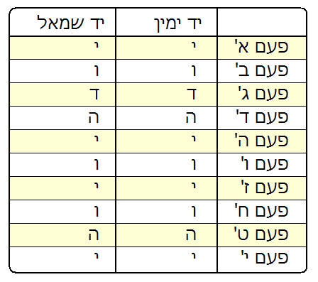

הסכמות והקדמות
הסכמת מרן רבינו עובדיה יוסף שליט"א
עובדיה יוסף
הראשון לציון
ונשיא מועצת חכמי התורה
ירושלים ט' שבט תשנ"ז
הסכמה
הובאו לפני גליונות הקונטרס "בריתי שלום", מעשה ידי אומן נטע נאמן, האברך היקר שוקד באהלה של תורה ויראת ה' היא אוצרו, ועליו יציץ נזרו, כש"ת רבי... נ"י, אשר אסף איש טהור מדברי רבותינו בענין חובת שמירת העינים, וחומר פגם הברית, דברי מוסר והתעוררות מספרי רבותינו ראשונים ואחרונים. מים חיים ונוזלים מן לבנון, ולפעלא טבא אמינא איישר חיליה לאורייתא.
ויהי רצון שחפץ ה' בידו יצלח לברך על המוגמר לזכות את הרבים להגדיל תורה ולהאדירה, לאורך ימים ושנות חיים ועוד יפוצו מעיינותיו חוצה בבריאות איתנא ונהורא מעלייא.
עובדיה יוסף
שריה דבליצקי
רחוב ירושלים 50, בני-ברק
טל' 6182649
בס"ד, ערש"ק וארא תשנ"ז
הסכמה
אות זה מדבר והאותיות תבאנה ויגידו למו, איך שהאברך הרב מזכה הרבים ר'... נ"י, בא והראני את ספרו אשר עומד להוציא לזיכוי ולתועלת הרבים, בשם בריתי שלום, אשר תוכנו מדבר אודות תיקוני הברי"ק ששייכים לכל ימות השנה ובפרט לימי השובבי"ם הק'. ואף שכבר כמה וכמה ספרים יצאו לאור במקצוע קדוש זה, מ"מ לא ראי זה שלפנינו, כי ספר נחמד זה יהיה עשוי כמתכונת ספר כיס, וסודרו בו בסדר ישר מרבית התיקונים הנצרכים, כאשר עיני הקורא תחזנה מישרים, הכל מסודר באופן מובן ומועיל וכו'. לכן ידי תיכון עמו להוציאו במהרה בכדי לזכות הרבים בעניינים גדולים ונשגבים אלה.
ולחיבת הקודש צירפתי גליון בעינייני שובבי"ם שהוצאתי לאור לפני עשרות בשנים, שאם ירצה יצרף אותו בהדפסה בתוך הספר הק' שמוציא לאור.
ובמהרה נזכה לאור חדש על ציון תאיר ולגאולה שלימה בב"א.
הכו"ח יום הנ"ל לכבוד כל המיישרים אורחותם בתשובת שמירת ברי"ק והמסתעף.
שריה דבליצקי
הנה כידוע ימי השובבי"ם הם מסוגלים מאד בכל שנה ושנה לשוב בהם בתשובה שלימה על עוונות ידועים. והנה יש הרבה אנשים שמתיאשים לגמרי מכל הענין הזה ואינם שמים כלל על לב. ויש גם שמתייאשים מזה מדאינם יודעים איך להתחיל לשוב בענינים אלו.
והנה אלו שאינם שמים זה על לבם מדעברו עליהם כבר זמן זמנים טובא, צריכים לדעת שזו אינה טענה כלל, ואפי' אם יחיה האדם אלף שנים סופו ליתן דו"ח לפני ממה"מ הקב"ה על כל דבר ודבר, וכל האמור הקב"ה ותרן וכו'.
ואודות אלה שאינם יודעים איך להתחיל בענין זה, הנה יש לפניהם דרכים בטוחות ומועילות מפי רבותינו גדולי הדורות זי"ע. ראשית כל, החרטה על העבר והקבלה על העתיד, כמ"ש הר"ח מוואלאזין זצ"ל בכתר ראש אות ק"ל וקל"א וז"ל: עיקר דרכי התשובה מדאורייתא - חרטה ועזיבת החטא בלב שלם וקבלה על להבא. ותשובה עצמית עפ"י דינא דגמרא בנקל לצאת, היינו שיגמור בדעתו שלא ישוב לכסלה עוד ומרירות הלב ליתר שאת. עכ"ד.
אלא שרבנו האריז"ל כתב בשער רוה"ק עמוד כ"ג שצריך להתענות על חטא זה פ"ד תעניות רצופים. והנה העם בראותם זה מתייאשים מכל הענין, מדאין בכוחם להתענות מספר כזה של תעניות רצופים. אבל יש כמה וכמה דברים שמצוה להודיע לרבים, שהמה מועילים במקום התעניות.
א. ראשית כל, סברת הרא"ש בשם הראב"ד ורבינו ירוחם, שנפסקה להלכה באו"ח ברמ"א סי' תקס"ח ס"ב וז"ל: י"א שאם מצטער הרבה בתעניתו, יכול לפדות בממון. וה"ה באונס אחר. ויאמר כסף זה בל"נ אני נותן לצדקה תמורת פ"ד תעניות שנתחייבתי להתענות. ויחלק זה לת"ח עניים עמלי תורה ביראה וטהרה. ע"כ.
ב. כתוב בתוס' מעשה רב: דרכו של רבנו הגר"א ז"ל לפסוק מעשה התשובה לבעלי התשובה - ביגיעת לימוד התורה ומניעת הדיבור במקום תענית. ע"כ. וכ"כ באגרת הגר"א, וז"ל: ועד יום מותו צריך האדם להתייסר, ולא בתעניתים וסיגופים רק ברסן פיו ותאוותו, וזהו התשובה וכו' וזהו יותר מכל התעניתים וסיגופים בעולם וכו'. עכ"ד. ועפ"ז כתב בספר קדושה להר"ש הומינר נ"י פ"ג אות ס"ט, וז"ל: ובשבועות אלו במקום התענית יראה להתגבר מאד למנוע עצמו מכל דיבור יתר ולא ידבר כי אם מה שהוא לו הכרח גמור ואמיתי לגופו או לנפשו. ע"כ. וכ"כ החסיד ביסוד ושורש העבודה, ענין השובבי"ם דיזהר מאד מאד משיחת חולין.
ג. יראה שימנע עצמו מכל התאוות, הן במאכל הן במשתה, וכמ"ש הרבנו יונה ביסוד התשובה משם הראב"ד וז"ל: ואם הוא חלוש ואינו יכול לסבול עינויים קשים, ימשוך עצמו מתאוותו ולא ימלא תאוותו במאכליו ומשתיו, וכן אמר הראב"ד ז"ל, שהיה אחד מחסידי העולם: הגדר הגדול והמופלא במניעת המאכלות. וזהו פירוש לדבריו: אל יחשוב אדם לגמרי שלא יאכל בשר ולא ישתה יין, כי די לנו במה שאסרה תורה, אך בעוד המאכל לפניו, ועודנו תאב לאכול ממנו, ימשך ממנו לכבוד בוראו, ולא יאכל כדי תאוותו, וזה הדבר יזכירנו אהבת הבורא יותר מתענית אחד בשבוע, כי זה בכל יום מדי אכלו ושתו. עכ"ד.
ויצא לנו מכל זה דאף דרבינו האריז"ל קיבל מפי אליהו ז"ל להתענות אודות פ"ד תעניות, הנה לעומתו מצאנו ראינו בדברי שאר רבותינו הראשונים ורבנו הגר"א עצות מועילות תמורת התעניות, והן המה: הפדיון, מניעת המותרות במאכל ומשתה ומניעת הדבור.
ד. אמנם עיקר הכל הוא ההתמדה בלימוד התורה, וכדכתב הר"י שם וז"ל: והעיקר עם התענית התמדת הלמוד יומם ולילה. ע"כ. ובכתר ראש להגאון ר"ח מוולאזין אות קל"ג כתב דאף שנכשל כמעט בפשע, ח"ו, כשעוסק בתורה א"צ לדאוג כלל, כי התורה מצלת מן המיתה. כ"כ שם בשם הגר"א. ובאות ס"ג שם: מי שזהיר ללמוד ג' שעות לשמה, מוחילין לו על כל עונותיו. וכבר האריך בענין זה בהוספות לספר תקנת השבים הנדפס בס"ס יסוד יוסף (ירושלים תשי"ט).
ועל כן יתעורר האדם ביחד עם החרטה והקבלה לאחוז בשבועות אלו מכל הנ"ל כפי יכלתו ומצבו ומעמדו, ובלבד שלא יתייאש מכל וכל.
הסכמת הרה"ג רבי מאיר מאזוז שליט"א
הגאון רבי מאיר מאזוז שליט"א
נאמן ס"ט - ראש ישיבת כסא רחמים
בס"ד, כ' שבט התשנ"ז
המלצה
גם אני מצטרף להסכמות רבותינו הגאונים שליט"א שהמליצו על הקונטרס היקר "בריתי שלום", מעשה ידי האברך ר'... נ"י, כולו סובב על עניין שמירת אות ברית קודש ושמירת העיניים. ולפעלא טבא אמרינן יישר. וכבר ידוע מפי הגה"צ סבא קדישא ר' ישראל אבוחצירה, ובנו הגה"צ ר' מאיר אבוחצירה זצ"ל וזיע"א, שהיו פועלים גדולות ונצורות בתפילותיהם בזכות שמירת הפה והעיניים.
ואתנח סימנא סמ"ך עי"ן פ"ה צד"י קו"ף - סגור עיניים פה
(תהיה) צדיק קדוש, ובזה תנצל מן רש"ת היצר הרע.
כן נזכה לגאולה שלמה בב"א.
מאיר בהגר"מ מאזוז - נאמן ס"ט
שמואל אליעזר שטרן
דומ"צ בביד"צ זכרון מאיר
ור"מ ישיבת חוג חתם סופר
רח' הרב קוק 1, בני-ברק 51273
בס"ד עש"ק פרשת בא תשנ"ז
המלצה
בואו ונחזיק טובה מרובה לכבוד האברך כמדרשו כש"ת הר' … שליט"א אשר נשאו לבו הטהור לזכות את הרבים בלקט חשוב ונכבד להאיר עיניהם ולבם של ישראל בטהרת הקודש, בחיזוק יסודות הקדושה והצניעות בקרב עם קדוש, תחזקנה ידיו הטהורות העוסקות בעבודת קודש זו.
הרחמן הוא יטהר את לבבינו ויאיר עינינו במאור התורה, לעשות רצונו ולעבדו בלבב שלם.
ביקרא דאורייתא
שמואל אליעזר שטרן
הקדמה
"לכן הנני נותן לו את בריתי שלום ..."
כח הראייה, המחשבה והרצון, הינם ג' כוחות חשובים והכרחיים ביותר שחנן ה' את יציר כפיו האדם. האדם בכח דמיונו יכול להפליג ולעלות מעלה מעלה במדרגות גבוהות ורמות, ומאידך גיסא להידרדר עד שפל המדרגה ח"ו. לדמיון המחשבה אין סייג וגבול, ורק האדם, הוא עצמו ולא אחר זולתו, יכול לנווטו כפי רצונו.
ברם, מכיוון שלכח הדמיון אין גבול, משתמש בו האדם לאפיקים לא רצויים, קרי מחשבות זרות והרהורים רעים. וממחשבה למעשה, הרהרנו הרהורים רעים ביום ובאנו לידי טומאת קרי בלילה, ולא לחינם אמרו חז"ל: "הרהורי עבירה קשים מעבירה".
והנה מחשבות זרות באות לאדם לא רק בגלל דמיונו ומחשבתו, אלא גם בגלל ראייתו, "אין יצר-הרע שולט אלא במה שעיניו רואות", וכן אמרינן "ולא תתורו אחרי לבבכם ואחרי עיניכם", ללמד ששני כוחות אלו, מחשבה וראייה, קשורים אחד בשני והא בהא תליה.
מסופר על אלכסנדר מוקדון שאמר לזקני מדינתו שרוצה הוא ללכת למדינת אפריקה על-מנת להילחם בה ולכובשה. ענו לו: אי-אפשר לך ללכת לשם, כי יש בדרך הרי חושך. אמר להם: אי-אפשר שלא אלך לשם, ואיני שואל מכם אלא זאת, כיצד אעשה שאוכל לילך לשם. אמרו לו: קח לך כמה חמורים גדולים ממצרים היודעים ללכת יפה בחושך, וקח הרבה חבלים, וכשתהיו סמוך להרי החושך תקחו קצה האחד של החבלים ותקשרו בהם, והקצה האחר תחזיקו בידיכם ואל תרפו אותם, כי בשעה שתחזרו תמצאו הדרך על-ידי החבלים ולא תאבדו הדרך. וכך עשה, יצא מעירו והחל ללכת. לאחר זמן הגיע לעיר אחת במדינת אפריקה אשר היו גרים בה רק נשים, וכשביקש ללחום עמם אמרו לו הנשים: אם תהרוג אותנו לא יהיה לך כבוד מזה, כי יאמרו נשים הרג וזו אינה גבורה, ואם נהרוג אותך תהיה מזולזל בעיני העולם שיאמרו: ראו מה עלה בסופו של אלכסנדר מוקדון, זה שנהרג בידי נשים. על כן, מוטב לך להניח לנו. אמר להם: אני שומע לעצתכן ולא אלחם בכן. ביקש שיתנו לו לחם לאכול. ערכו לו הנשים שולחן זהב ועליו הניחו כיכר לחם עשויה זהב. אמר להם: כלום זהו האוכל של בני המקום הזה? ענו לו הנשים: אין אנו אוכלים לחם של זהב, אבל כשראינו אותך שבאת למקום רחוק כזה תמהנו עליך ואמרנו, כלום אין לך אוכל במקומך שבאת למקום רחוק כזה, ולכן חשבנו שבאת לכאן כדי לאסוף ממון, ולכן הבאנו לך לחם של זהב. וכשיצא אלכסנדר מאותה העיר כתב על שער העיר: אני אלכסנדר מוקדון הייתי טיפש עד שבאתי לעיר זו, וכאן למדתי חכמה. באמצע הדרך בחזרתו ישב ליד מעיין שריחו היה טוב מאוד, שהיה משיב את הנפש, על-מנת לאכול. היו בידו דגים מלוחים מתים. בעודו רוחץ אותם במים להסיר את מליחותם, באה רוח מן המעיין והחייתה את הדגים המלוחים. אמר אלכסנדר בלבו, נראה לי שמעיין זה מקורו מגן-עדן. נכנס לתוך המעיין והיה הולך בתוכו עד שהגיע לפתחו של גן-עדן. הרים קולו ואמר: פתחו לי את שערי גן-עדן. ענו לו: שער זה מיוחד הוא ליראי ה', וצדיקים יבואו בו. אמר: אני מלך חשוב, ומאחר שכבר באתי עד לכאן תנו לי איזה דבר. נתנו לו גלגל של עין. כשבא לביתו ביקש לשקול אותו, שם על צד אחד של המאזניים את הגלגל ובצד השני החל לשים את כל כספו וזהבו, וכשגמר לשים את כל כספו וזהבו עדיין היה הגלגל שוקל יותר ומכריע את הכף. הלך לחכמים ושאלם מדוע העין הקלה כל-כך מכריעה את המשקולת הכבדה. אמרו לו חכמים: שים מעט עפר ליד העין וראה מה יהיה, ואומנם ברגע ששם עפר לצד המאזניים שם היה גלגל העין, נשארה הכף למעלה והמשקולת עם כספו וזהבו ירדה מטה. אמרו לו חכמי ישראל: הגלגל שקיבלת -של בשר ודם הוא, כי עין בשר ודם אינה שבעה מראות, הכול נחשב כלום בעיניה, ורוצה תמיד עוד ועוד. מתי שבעה עין זו, במות האדם, כאשר מתכסה הוא בעפר. ולא לחינם אמרו חז"ל "עיוור חשוב כמת", לומר וללמד שהכול מן העין. רוב מעשיו של האדם מושתתים על-פי ראייתו. אדם קונה רהיט חדש משום ששבעו עיניו כבר מן הרהיט הישן שבביתו. היופי משחק תפקיד מרכזי בחייו של האדם, וכל זאת בנוי על-פי כוח הראייה; וכששני כוחות אלו חוברים יחדיו, הדמיון והראייה, קשה היא ההתגברות עליהם, ובייחוד בדורנו אנו שהפריצות והמתירנות רבה, ואכן כמעט ואין לך אדם שאינו נכשל בעוון זה, וכבר אמרו רבותינו שחטא זה הוא הגורם הישיר לאדם לחוסר מזלו והצלחתו בעולם-הזה ולעונשו בעולם-הבא, וכפי שכתב בספר "גשר החיים" ח"א עמוד קי"ב: קודם שמוציאין מהבית מת זכר, מכריזין בחרם כי כל זרעו לא ילווהו ולא ילכו אחר מיטתו כלל וכלל, והטעם הוא, כדי שלא ילכו אחריו יצורי זרעו הטמאים מטיפות הקרי, וכדאמרו בעלי הקבלה: שמטיפות הזרע הבלתי כשרים מתהווים יצורים טמאים מזיקים, שבמשך הזמן מתגדלים ומתלבשים בלבושים גופניים של שדין ורוחין, והם הם נגעי בני-אדם הפוגעין בו וגורמים לו מרעין בישין גם בחייו, ומאז נתחדשה המשקפת המגדלת פי 18-16 אלף, רואים על-ידי אותה משקפת בכל טיפה שכזו בריות חיות קטנטנות בצורת תינוקות בני-אדם מתנועעות, רצות ומתרוצצות, המראות זוועה למסתכל, ובפטירתו של אביהם מולידם
(אם לא זכה לבערם ולהחזיר את הניצוצות למקום קדושה על-ידי תשובה ותיקונים המובאים בספר זה), מתלווים הם אל אביהם ומלפפים אותו ולא ירצו להיפרד ממנו, ומטמאים ומזהמים ומצערים אותו ולא ירצו להיפרד ממנו, ומטמאים ומזהמים ומצערים אותו עד מאוד ואינם מרשים לו לחזור למקום מחצבתו הקדוש, ומשום כך עושים מסביב למת עוד כמה עניינים, כגון: הקפות ועוד כהנה, למען הרחיקם
(או לבערם) מעליו עד כמה שאפשר.
ומשום שיצרו של אדם רע מנעוריו, ברא הקב"ה באדם כח נוסף העולה על שני כוחות אלו, והוא כח הרצון. כח הרצון הוא הכח החיוני והחשוב ביותר שנמצא באדם. האדם בכח רצונו יכול לחולל פלאות ולשנות עולמות, ולא לחינם אמרו "אין דבר העומד בפני הרצון". ואומנם, אף-על-פי שמודע האדם לכח רצונו הכביר, הריהו מזניחו ואינו מנצלו. מחקרים הוכיחו שאדם ממוצע מנצל רק כ – 10% מכח רצונו ויכולתו. ההוכחה הברורה לזאת היא התפוקה הגבוהה שאליה מגיע האדם בשעת סכנה ולחץ.
ברם בעוד שלגבי ענייני העולם-הזה כח הרצון הוא
חשוב, הרי שלגבי קיום התורה והמצוות כח הרצון הוא
החשוב, וללא כח זה יקשה לאדם לגבור על יצרו ולקיים מאמר החכמים "בטל רצונך מפני רצונו".
קונטרס זה נועד להדריך את האדם כיצד לבטל את רצון היצר מפני רצון הבורא יתברך, וללמד את האדם כיצד בכח הרצון ישלוט על מחשבתו, ראייתו ומעשיו, וינצל אפיקים אלו להתעלות במסילה העולה. ואנו תפילה ותחינה לבורא עולם שנזכה בזכות מצוה יקרה זו ל"ותחזינה עינינו בשובך לציון ברחמים", אמן.
בריתי שלום
ברוך הוא אלוקינו שבראנו לכבודו והבדילנו מן התועים ונתן לנו תורת אמת שבה נצטווינו בתרי"ג מצוותיו הקדושות.
והנה מכל אותם תרי"ג מצוות שנצטווינו מאיתו יתברך, המצוה הראשונה שנצטווינו היא מצוות פריה ורביה. כמ"ש "ויברך אותם אלהים ויאמר להם אלהים פרו ורבו ומלאו את הארץ וכבשוה". וזוהי מטרת כל הבריאה שיהיה העולם מיושב וזהו חפצו-רצונו יתברך כדכתיב "לא תוהו בראה לשבת יצרה" ובסיבתה מתקימות כל המצוות בעולם וביחוד בדורנו אנו דור עקבתא דמשיחא דור הגאולה שבו נאמר "אין בן דוד בא עד שיכלו כל הנשמות שבגוף".
אך דע עקא מה יעשו אותם אלו הרווקים בדור אשר אין בכוחם להתגבר על יצרם וכן אותם אלו הנשואים הנכשלים בכך בהוצאת זרעם לבטלה כנא' "עד גיל עשרים ולא נשא אשה כל ימיו בהרהור עבירה". וכן אלו אשר אינם יכולים לשלוט ביצרם ויצרם גובר עליהם הלוך ושוב. וביחוד בדורנו אנו, דור עקבתא דמשיחא, אשר בו מצבנו ירוד בכל הענינים הן רוחני והן גשמי ובפרט בעניני הצניעות והקדושה שהעזות והחוצפא יסגי והמלכות תהפך למינות והפריצות והחציפות מתרבה מיום ליום באופן מבהיל, ומה שהיה עד לפני שנים מספר אסור אף לגויים לעשותו בפרהסיא, כיום מותר והריהו נחלת הכלל, וע"כ קשה לאדם שלא ליכשל בהוצאת ז"ל, ובפרט אלו שמחמת דוחקם להביא טרף למחית ביתם מוכרחים להסתובב בשווקים וברחובות, ולנסוע באוטובוסים ואין רגע בלי פגע, שמכשולים למאות ואלפים פעמים באיסורים חמורים בראות העין לרע "ועין רואה והלב חומד", ובכל פינה ומקום שהינך צועד הינך עלול להיכשל באיסורים גדולים וחמורים בפגם העיניים והמחשבה, וכבר כתבו רז"ל "שלא יהרהר ביום ויבוא לידי טומאת קרי בלילה".
ושמא יאמר האדם וכי מה בכך שאני מהרהר, הרי אין בכך כלום, וכי יש אדם שאין בו מחשבות והעיקר שאני שומר על בריתי לבל אכשל, כבר אמרו על זאת חז"ל "הרהורי עבירה קשים מעבירה", וכל המביא עצמו לידי הרהור אין מביאין אותו במחיצתו של הקב"ה. וכבר אמרו רבותינו כי כמעט אין זה בר המציאות שיהרהר האדם ולא יגיע בסופו של דבר לידי ז"ל רח"ל כנאמר "ונשמרת מכל דבר רע" - שלא יהרהר אדם ביום ויבוא לידי טומאה בלילה.
וכן אמרו חז"ל "עין רואה ולב חומד וכלי מעשה גורמים".
והנה ע"י שפוגם בבריתו ומוציא זרעו לבטלה רח"ל הריהו גורם להורדת הקליפות מחדש, ואינן מגיעות למקומם וגורם לנשמה שתהיה משוטטת בעולם ולא תוכל לבוא על תיקונה
(1).
וזהו צער השמים וצער כל העולמות, וכתוב בזוהר הקדוש ובשאר ספרים שבגלל זה העוון אין משיח צדקינו בא, וזה גורם לעיכוב הגאולה כי אין בן דוד בא עד שיכלו כל הנשמות שבגוף. והמוציא שז"ל לא די בכך שמוריד הנשמות מחדש בקליפות, אלא אף מרחיקן ומדיחן למקומות חשוכים ונדחים, וע"י כך גורם להרבות השפע לכוחות הטומאה והחיצונים רח"ל ולדחיית ניצוצי הקדושה.
ולא לחינם נקראת מצוה זו יסוד, כי זהו יסוד הצלחתו וקיומו של עם ישראל ועל זאת אמרו רבותינו ז"ל הכל תלוי במזל - במוציא זרעו לבטלה, וביחוד בזמננו אנו צריך האדם להיזהר בזאת יותר לא לפגום בבריתו כלל, כי עתה אנחנו באלף השישי שהוא כנגד היסוד, ועיקר הגאולה וביאת משיח צדקינו תלויה בשמירת הברית כמובא בתיקונים ובזהר שעיקר הגאולה תלוי בתיקון הברית, ובזכות שימצא בדור אחדים מישראל הקדושים שבכל אלו בחציפות ועזות והפקרות מוסרים נפשם ושומרים עיניהם מלהסתכל באלו החצופות והשרוצות רח"ל ושומרים נפשם מלפגום הברית יסתכל קודשא בריך הוא בהם ובזכותם יצמח הגואל במהרה
(2).
ושמא יאמר האדם, והרי ענין זה יפה בו השתיקה והצניעות, כתב על זאת ה"חתם סופר" באחת מדרשותיו שלפני פטירתו סבל לא עליכם מהשתן, שלא היה יוצא כראוי, והרופאים הכניסו לו קטטר להקל עליו, וכתב ה"חתם סופר" בספרו שהוא הרהר על זה, למה הענישו אותו מהשמים בענין זה כי הוא לא פגם באבר זה אף פעם, ואחרי שאלת חלום מצא שמענישים אותו בדבר זה לפי שהוא לא דרש בענין החטא הזה
(פגם הברית) כל השנה, ורק פעם אחת בשנה לפני כל נדרי בכיפור היה דורש, ומכיון שלא דרש ע"ז יותר נענש!
ואם בדורו כך על אחת כמה וכמה בדורנו אנו שצריכים להיזהר ולהזהיר בזאת לבל יכשלו, ולמזהיר ולנזהר שלומים יתן כמי נהר.
ואמרנו למען ידע הקורא בבהירות כיצד עליו לעשות, חילקנו הקונטרס הזה לארבעה פרקים:
א. מדוע וכיצד אדם חוטא - המניעים והסיבות, והיא גופא הדרך להימנע ולהישמר.
ב. גודל חומרת הפגם והשלכותיו.
ג. מי שכבר חטא בזאת, מה תקנתו תשובתו וכפרתו.
ד. מהו השכר שמקבל שומר הברית.
פרק ראשון - מדוע וכיצד אדם חוטא? מהו יצר העריות?
לאחר שסיים הקב"ה לברוא את עולמו בששת ימי המעשה הסתכל הקב"ה בבריאתו ובמעשה ידיו, ואמר, כל מה שבראתי הרי הוא לטובה ולברכה כנא' "וירא אלהים את כל אשר עשה והנה טוב מאוד, ויהי ערב ויהי בוקר יום השישי", ומהו טוב מאד?
רבי נחמן בר שמואל בר נחמן בשם רב שמואל בר נחמן אמר: הנה טוב מאד זה יצר הטוב והנה טוב מאד זה יצר הרע. וכי יצר הרע טוב מאד? אתמהא!
אלא שאילולי יצר הרע לא בנה אדם בית
ולא נשא אשה ולא הוליד, ולא נשא ונתן. וכן שלמה המלך אומר "כי היא קנאת איש מרעהו"
(ב"ר ט-ז).
יצר-הרע הוא הכח העיקרי המניע מאחורינו בכל משך זמן חיינו ובכל ענינינו, רוב תשוקותיו ורצונותיו של האדם באים מכח יצה"ר. היצר הרע, בה"א הידיעה, שנמצא בכל אדם ואדם וכמעט אין לך אדם שאינו נכשל בו, אם מעט ואם הרבה, הוא "יצר העריות". יצר זה הוא היצר החזק באדם, אין לך דבר בכל התורה כולה שהוא קשה לרוב העם לפרוש, אלא מן העריות והביאות האסורות. אמרו חכמים, בשעה שנצטוו ישראל על העריות בכו וקיבלו מצוה זו בתרעומות ובכיה, שנא' "בוכה למשפחותיו" על עסקי משפחות. ואמרו חכמים גזל ועריות נפשו של אדם מתאוה להם ומחמדתן, ואין אתה מוצא קהל בכל זמן וזמן שאין בהם פרוצין בעריות וביאות האסורות
(3).
יצר העריות, הוא הכח המושך את האיש אל האשה ואת האשה אל האיש, בלא יצר זה ימאס ויגעל האדם לגשת אל אשתו כדי לקיים את עונתו, וזאת מפני שאשה חמת מלא צואה ופיה מלא דם והכל רצין אחריה
(שבת קנ"ב). ויש סיפור בזה באליהו זוטא
(4) ואכמ"ל.
ומסופר בתלמוד, על אנשי כנסת הגדולה שראו שכח עבודה זרה כה גדול ורב בעולם, לפיכך החליטו לעשות יום בכי ומספד, כנא' "ויזעקו בקול גדול אל ה' אלוהיהם".
אמרו: יצר עבודה זרה זו - היא שהחריבה את בית מקדשו של הקב"ה ושרפה את היכלו והרגה את הצדיקים והגלתה את ישראל מארצם, ולא זו בלבד אלא שעדין מרקדת היא בינינו.
אמרו לקב"ה: אתה נתת לנו את הע"ז הזו אך ורק כדי שנתגבר עליה ונקבל על כך שכר, אנו לא מעוניינים לא בה ולא בשכרה. ישבו ג' ימים בתענית וביקשו רחמים. לאחר ג' ימים נפל להם פתק מהשמים שבו היה כתוב: אמת - כלומר, שאף הקב"ה מסכים עמהם ורוצה שיתבטל יצר זה מהעולם.
באותם רגעים יצא מבית קודש הקודשים גור אריה עשוי מאש. אמר להם הנביא זכריה בן עדו, זה הגור, הוא יצה"ר של ע"ז. עטו אחריו כדי לתופסו, וכשתפסו אותו הצליח להשתמט מהם והיה קולו הולך 400 פרסה. אמרו חכמים לנביא מה נעשה, אולי מן השמים מרחמים עליו, כי משם נברא? אמר להם הנביא שיתפסו אותו שוב וישימו אותו בתוך סיר של עופרת ויכסו את הסיר עם פקק של עופרת שהיא משתיקה את הקול יותר מכל סוגי מתכות וסוגים אחרים, שנא' "ויאמר זאת הרשעה וישלך אותה אל תוך האיפה וישלך את האבן העופרת אל פיה". וכך התבטל יצה"ר של ע"ז.
ראו זאת חכמים ואמרו: הואיל והשעה הזאת היא שעת רצון, א"כ נבקש רחמים גם על יצר העריות ונבטלו מן העולם. ביקשו רחמים ונמסר יצר זה בידם. לקחו חכמים את יצר העריות, וחבשוהו ג' ימים והיו צריכים ביצה לחולה ולא נמצאה, ומדוע?
כיון שביטלו את יצר העריות, לא היה מה שימשוך את האחד לשני, וזאת אף אצל בעלי חיים.
אמרו חכמים במצב כזה העולם יחרב, ולבטלו לחצאין אי אפשר. א"כ מה נעשה? החליטו ועשו. סימאו את עיניו, ולפיכך אין אדם מתגרה בקרובותיו.
סיבות החטא
שמירת העינים
א. והנה הסיבה העיקרית והחשובה מכולם היא
שמירת העיניים, ועל זאת אנו מתפללים ומשלשים בכל יום "והיה לכם לציצית וראיתם אותו וזכרתם את כל מצוות ה' ועשיתם אותם, ולא תתורו אחרי לבבכם ואחרי עיניכם אשר אתם זונים אחריהם", ופרש"י - הלב והעינים הם מרגלים לגוף ומסרסים לו את העבירות, העין רואה והלב חומד והגוף עושה את העבירה
(5).
על האדם לדעת שעיקר פגם הברית בא מחמת ההסתכלויות בנשים, כדאמרינן "אין יצה"ר שולט אלא במה שעיניו רואות", ושמא יאמר האדם ומה בכך?!
האם כשאני הולך ברחוב לרגל עיסוקי, האם מכח הסתכלותי שבאה שלא במתכוון עלול אני להגיע לידי פגם הברית? ועוד, הרי לאחר מכן מסיח אני דעתי מכך!
וכבר אמרו על זאת חז"ל והבטיחו "כל הצופה בנשים סופו לבוא לידי עבירה", וכל המסתכל בעקבה של אשה הווין ליה בנים שאינם מהוגנים, לפיכך על האדם לדעת שאם הולך ברחוב ורואה מראות אסורות, עליו לדעת בבטחה כי ע"י הסתכלותו לא ימלט מעוון זה, כי העין רואה והלב חומד וכלי המעשה גומרים, "וטוב מראה עינים מהלך נפש". וכבר כתבנו לעיל בהקדמה "ונשמרת מכל דבר רע" - שלא יהרהר ביום ויבוא לידי קרי בלילה, והנה ההרהור בא ע"י ראיה, ומי שלא ראה ביום א"כ איך יהרהר בלילה?
וזאת היתה כוונת רב ששת שלא היה מסתכל חוץ ל- 4 אמותיו, כי המסתכל חוץ לד' אמותיו כמוציא זרע לבטלה, וכבר נאמר: "ברית כרתי לעיני ומה אתבונן על בתולה", כי כמו שיש ברית הלשון וברית המעור, כך יש ברית העיניים, ומי שלא שומר על העיניים אינו שומר גם על המעור
(6).
ובודאי אותם אלו האנשים המסתובבים בחוצות בערבי שבתות וחגים, אנשים ונשים, עתידים לחטוא בשלוש הבריתות: ברית העינים, ברית הלשון וברית המעור
(7).
ובכלל זאת המסתכל בטלויזיה ובעיתונות הטמאה שהינם מוקצה מחמת מיאוס, ובספרי מינות למיניהם, עתיד להיכשל בפגם הברית, וכן המסתכל בבע"ח בשעה שנזקקין זה לזה, וכן המסתכל בבריתו וכ"ש בברית חבירו, סופו לבוא לידי ז"ל, וכנראה על זאת התכוונו חז"ל באומרם "עיוור חשוב כמת", לאמר שהיצה"ר שבו נחשב למת ואינו קיים, כי עיקר היצר בעיניים. וע"ז אמרו חכמים אין חציצה לתאוה כעצימת העין.
והנה כל האמור לעיל הוא בבחינת סור מרע, דהיינו אם יקיים כל הנ"ל ינצל ולא יגיע לידי ז"ל, אך אין די בזאת לאדם, כי לפעמים ילך יצרו ויחטיאו ולא יוכל לעמוד לו, וע"כ העצה הטובה ביותר להינצל ממנו הוא ועשה טוב, וע"כ כשהולך ברחוב יחשוב בליבו שעל כל אשה שעוברת בפניו ואין מביט בה, הרי מקיים בזאת מצוה של "ולא תתורו אחרי לבבכם ואחרי עיניכם". והנה במשך היום שהולך מספר פעמים, הן ללימודו והן לסידורו ועיסוקיו, הרי יכול לצבור בקופתו בכל יום מאות מצוות, ועשה מצוה אחת הכריע כל העולם כולו לכף זכות ואשריו ואשרי חלקו שזכה לכך ושמר על עיניו, ואם ח"ו בלכתו ברחוב לא ישמור על עיניו ויביט לצדדיו ולכל עבר המסקרן אותו, הרי שבכל הסתכלות והסתכלות עובר על לאו דאורייתא של "ולא תתורו", וביום אחד ח"ו הרי יכול לעבור על מאות ואלפים איסורים, ואוי לו ואוי לנשמתו, שמלבד שטימא את עיניו ונשמתו, הרי גם בזאת הכריע את העולם לכף חובה, וכשיחשוב וישים זאת על ליבו, הרי בוודאי שישמור עיניו מחטוא ויזהר לבל יסתכל חוץ לד' אמותיו
(8).
ברית הלשון
ב.
הסיבה השניה והיא ברית הלשון - כידוע וכמובא בספרים הקדושים שברית המעור מכוון כנגד ברית הלשון ובוודאי הפוגם בלשון עתיד לפגום במעור, כנא' "רב המנונא סבא אמר אל תתן את פיך לחטיא את בשרך" לאמר שאם שומר הלשון נשמר ברית המעור מאליו, ואם לא נזהר בברית הלשון אף שנזהר בברית המעור לא יעלה בידו ויטמאוהו, כנא' "נצור לשונך מרע", שלא תבוא לידי שכבת זרע לבטלה הנקרא רע
(9). וכן כתב החיד"א הרוצה להינצל מקרי לא יטמא ברית הלשון ובפרט יזהר מנבלות פה ולשון הרע, כי הלשון והמעור מכוונים ומי שפגם בלשון ודאי יחטא במעור כנא' "אמרתי אשמרה דרכי דרך גבר מחטוא בלשוני"
(10).
וכן כתב "בראשית חכמה"
(11), שאם שומר הלשון מאליו נשמר הברית ואם לא נזהר בשמירת הלשון ונזהר בשמירת הברית, אפילו שמירת הברית לא עלתה לו, ע"כ צריך האדם לדעת ממה להיזהר שלא לפגום בעניינים הנוגעים לפה, והמה מחולקים
לי"א חלקים – סיבות .
שמירת הלשון
א.
הסיבה הראשונה והיא שמירת הלשון - והוא החמור מכולם עיקר העיקרים כנכתב בספרים הקדושים,
והוא ניבול פה ולשון הרע, ובזאת אמרו חז"ל "מות וחיים ביד הלשון", היינו כל החוטא בלשון יפגום בבריתו, וכל הפוגם בבריתו חייב מיתה (12). וכן אמרו, כל המנבל פיו מעמיקין לו גיהנם, ואפילו חותמין עליו גזר דין לטובה הופכין עליו לרעה, והמדבר לשון הרע בא לידי קרי, מידה כנגד מידה, הוא היה הורג ג' נפשות: הוא, השומע, ומי שעליו דיבר, ע"כ יבוא להוציא ז"ל ולהמית נפשות.
2. המברך ברכה לבטלה, אם על מאכל, אם על משקה, ואם על עניית אמן בתפילה, וע"כ צריך להיזהר בזה בפרט שליח ציבור שלא יחזור תפילת שמונה עשרה אם אין תשעה שיענו אמן בודאי (13). וביחוד צריך להקפיד על ברכת הנהנין תחילה וסוף, שבזאת נכשלים המון העם, ואם ברך לבטלה יבוא להוציא ז"ל, והוא מידה כנגד מידה, ולכך נאמר "נצור לשונך מרע", כדי שלא תהיה נקרא רע.
3. המרבה שיחה עם האשה, כנא' "ואל תרבה שיחה עם האשה, באשתו אמרו ק"ו באשת חברו, מכאן אמרו כל המרבה שיחה עם האשה גורם רעה לעצמו ובוטל מדברי תורה וסופו יורש גיהנם". גורם רעה לעצמו - הוא שמושך לילית, הנקראת רעה ומטמאה אותו בקרי, וכן אמרו "אל תרבה שיחה עם האשה, שסופך לבוא לידי ניאוף" (14).
4. המדבר דברי צחוק וליצנות יבוא לידי קרי כנא' שחוק וקלות ראש מביאין את האדם לידי עבירה (15).
5. המדבר דברי שקר - מטמאים אותו ויבוא לידי ז"ל (16).
6. הנודר ואינו מקיים נדרו - בא לידי הוצאת ז"ל, כנא' "אמר ר' שמואל בר נחמני כל הנודר ומשהה נדרו סוף בא לידי ג"ע. וכן "אל תתן אל פיך לחטיא את בשרך" (17).
והנה כל האמור לעיל קשור לשמירת הלשון, שהוא מכוון כנגד המעור והנטמא באחד נטמא בשני.
שמירת הפה
ב.
הסיבה השניה והיא שמירת הפה - האוכל מאכלות אסורות וכן פירות לא מעושרים, מטמא נפשו וגופו ובא לידי קרי. והמרבה אכילה ושתיה, בפרט בסעודת הלילה, וסמוך לה הולך לישון, יבוא לידי קרי, וביחוד אם אוכל דברים המחממים את גופו ומרבים הזרע, כגון: שום, סולת, בשר, גבינה, ביצים ויין ישן וכד' - בא לידי קרי
(18).
וכל זאת משום כי עיקר פגם הברית בא מרתחת הדמים, והדמים מתהווים מהמבחר שבמאכלים, וע"כ מי שרוצה להינצל מזאת צריך לשמור על כשרות המאכלים, ומי שאינו נזהר בזאת ואוכל מאכלים בלתי כשרים, דמיו מתעכרים לגמרי ובא לידי רתחת הדמים ומזה בא לידי ז"ל.
שמירת האוזניים
ג.
הסיבה השלישית והיא שמירת האוזניים - השומע קול של אשה בא לידי קרי כנא' "קול באשה ערוה", והוא בגלל ששומע הקול ומתחיל להרהר אחר הקול ובא לידי קרי. וכן השומע קול שיר שאינו של קדושה יבוא לידי קרי
(19).
שמירת האף
ד.
הסיבה הרביעית והיא שמירת האף - המריח ריח בשמים שעל אשה בא לידי קרי אף שלא מסתכל עליה
(20).
שמירת הבטן
ה.
הסיבה החמישית והיא שמירת הבטן - היושן על בטנו בא לידי קרי ובמיוחד אם יושן יחידי בבית שאז מִדבקת בו לילית ומכשילתו בז"ל, כנא' א"ר חנינא אסור לישון בבית יחידי שכל, הישן בבית יחידי אוחזתו לילית
(21). וכתוב בזוהר הקדוש
(22) שאף ביום יש סכנה בדבר.
שמירת הידים
ו.
הסיבה השישי והיא שמירת הידים - והוא הנוגע בבריתו, שע"י כך בא לידי חימום ועלול להגיע לידי ז"ל. והנה רבינו הקדוש, שאלוהו מדוע נקרא קדוש ואמר, משום שמעולם לא הכניס ידו תחת אבנטו.
שמירת הרגלים
ז.
הסיבה השביעית והיא שמירת הרגלים - ההולך למקומות שאינם צנועים או למקומות שיכול להיכשל שם בראיות אסורות או לבוא לידי הרהורים, יבוא לידי קרי ועליו נאמר "ואץ ברגלים חוטא".
הבטלה
ח.
הסיבה השמינית והיא הבטלה - כנא' "אין מחשבת עריות מתגברת אלא בלב הפנוי מן החכמה", וכבר שנינו במשנה בכתובות: בטלה מביאה לידי שעמום ולידי זימה, וע"כ המפנה ליבו לבטלה הרי זה מתחייב בנפשו. וע"כ העצה הטובה ביותר היא לעסוק בתורה. ואם הולך ברחוב ואין בידו ספר ישנן משניות במחשבתו, כנא' בזוהר הקדוש "אמר רבי יוסי כד חמי בר נש דהרהורין בישין אתיין לגבייה יתעסק באורייתא וכדין יתעברון מניה. ואמר רבי אליעזר כד ההוא סטרא בישא אתי למפתי ליה לברנש יהא משיך ליה לגבי אורייתא ויתפרש מינה
(23). וכן אמרו חז"ל באבות דר' נתן "ר' חנינא סגן הכהנים אומר, כל הנותן דברי תורה על ליבו, מבטלין ממנו הרהורי חרב, הרהורי רעב, הרהורי שטות, הרהורי זנות, הרהורי יצר הרע, הרהורי אשת איש, וכל שאינו נותן דברי תורה על ליבו נותנין עליו כל זאת.
ואמרו בזאת רז"ל, בזמן שעוסקים בתורה ובגמילות חסדים יצרם מסור בידם. וכן פסק הרמב"ם אין התאוה מתגברת על האדם אלא בלב פנוי מן התורה, ובודאי אם יהיה שקוע בקדושת התורה, יתבטל ממנו יצרו וילך לו, כנא' "אם פגע בך מנוול זה מושכהו לבית המדרש, אם אבן הוא נימוח ואם ברזל הוא מתפוצץ". וכן כתב כזאת ה"ראשית חכמה" וז"ל: וכדי שלא יראה קרי עד חצות, טוב שיעסוק בתורה עד שישכב
(24).
הגאווה
ט.
הסיבה התשיעית והיא הגאוה - המתגאה בא לידי קרי
(25).
שמירת השמחה
י.
הסיבה העשירית והיא שמירת השמחה - אדם שהינו עצוב ומדוכא ונמצא במרה שחורה מובטח לו שיבוא לידי קרי, כי הסט"א נדבקת באדם עצב
(26), וכידוע שעצבות ויאוש הם אבות הטומאה שמוליכים לאבי אבות הטומאה פגם הברית.
סיבה אחריתא
יא.
והיא הסיבה אחריתא - אם סביב מיטתו יהיו כלים צואים או שסביב למראשותיו יהיו נעליים או מכנסיים או שיהיו עליו מפתחות ברזל או שיהיו קורי עכביש למעלה מראשותיו, הריהו נותן מקום לסט"א להתגבר עליו ובא לידי ז"ל
(27).
ברם כל האמור לעיל מדובר לנשוי, אבל הרווק לפני כל זאת ובראש בראשונה צריך ומוטל עליו אם הגיע לפרק האיש מקדש לקיים זאת הלכה למעשה ולא לדחות זאת משום חששות של פרנסה ובשלות, כי כיום הנסיונות גדולים ורבים "ועין רואה והלב מהרהר", ואם יאחר בנישואיו יהיה כל ימיו בהרהור עבירה כנא' "עד גיל עשרים ולא נשא אשה, כל ימיו בהרהור עבירה".
פרק שני - גודל חומרת הפגם והשלכותיו
ת"ר לעולם יראה אדם עצמו כאילו חציו חייב וחציו זכאי, עשה מצוה אחת אשריו שהכריע עצמו לכף זכות, עבר עבירה אחת אוי לו שהכריע את עצמו לכף חובה שנא' "טובה חכמה מכלי קרב וחטא אחד יאבד טובה הרבה". בשביל חטא יחידי שחטא אובד ממנו טובות הרבה. ר"א בר שמעון אומר לפי שהעולם נידון אחר רובו והיחיד נידון אחר רובו, עשה מצוה אחת אשריו שהכריע את עצמו ואת כל העולם לכף זכות, עבר עבירה אחת אוי לו שהכריע את עצמו ואת כל העולם לכף חובה שנא' "וחוטא אחד יאבד טובה הרבה"
(28). לפיכך חייב כל אדם לומר בשבילי נברא העולם.
והנה אין לך עבירה שתשפיע על האדם עצמו ועל העולם כולו יותר מעבירת פגם הברית, ולא לחינם אמר הנביא "אם לא בריתי יומם ולילה חוקות שמים וארץ לא שמתי", לאמר שלולי שמירת הברית אין קיום לעולם. וע"כ נקראת מידה זו מידת היסוד, שהוא יסודו של עולם, כי כל צרות הכלל והפרט של עם ישראל בכל דורותיו באים בגלל חטא זה, וכפי שמצינו בתורתינו הקדושה ובמהלך הדורות כולם שוויתר הקב"ה על כל עברות שבתורה אך על פגם הברית לא וויתר ואף העניש בזאת בכל חומרת הדין, כנא' "אמר רבי עזריה הכל הקב"ה מוותר חוץ מן הזימה".
א. דור המבול - "ויאמר ה' אמחה את האדם אשר בראתי מעל פני האדמה מאדם עד בהמה עד רמש ועד עוף השמים, כי נחמתי כי עשיתם" - דור שלם על כל יושביו, אנשים נשים וטף ואף בעלי חיים, כולם נמחו ונעקרו ונאבדו ונשמדו מן העולם, וכל זאת משום "כי השחית כל בשר את דרכו על הארץ". ופירש רש"י - שהיו משחיתים זרעם לבטלה" (29).
ב. "ויהי ער בכור יהודה רע בעיני ה' וימיתהו ה'", ופירש"י מכיוון שהיה משחית את זרעו. וכן זה היה עונשו של אונן כנא' "וירע בעיני ה' אשר עשה, וימת גם אותו" וזאת משום "כי שיחת ארצה" (30).
ג. וסיפר אליהו הנביא: "פעם אחת הייתי מהלך בתוך הגולה שבבבל, ונכנסתי לעיר גדולה של ישראל ולא היו שם עובדי כוכבים כלל, ומצאתי שם מלמד תינוקות אחד, וישבו לפניו מאתים נערים, שרובן בני שמונה-עשרה ובני עשרים שנה. ולשנה האחרת חזרתי ומצאתי את התלמידים - ואין רבם ביניהם, אלא בן אחד בלבד, שהוא היה בן בן בנו, שבשביל מעשיהם המקולקלים של אותם נערים מת רבן ומתה אשתו ומת בנו ומת בן בנו ומתו כל הנערים שרובן בני שמונה-עשרה שנה ובני עשרים, ולא נשתיירו רק הקטנים, והייתי בוכה ומתאנח עליהם עד שבא אלי מלאך מן השמים ואמר לי: מפני מה אתה בוכה ומתאנח?
אמרתי לו: וכי לא אבכה ואתאנח על אלו שבאו לידי מקרא ומשנה - ועכשיו הלכו להם והיו כלא היו?! ואמר לי: לא יפה עשית שאתה בוכה ומתאבל ומתאנח עליהם, אמרתי לו: מפני מה? ואמר לי: שהן היו עושים דברים מכוערים שאינן ראויין ומקלקלין בעצמם, והיו מוציאין שכבת זרע חינם והן לא יודעין בעצמן שהמיתה משיגתן (31).
כה חמורה הוצאת ז"ל עד כי נאמר בתלמוד:
(32) "אמר ר"א כל האוחז באמה ומשתין, כאילו מביא מבול לעולם". ועל זאת שאלוהו לרבי אליעזר והלא ניצוצות נתזין על רגליו ונראה ככרות שפכה ונמצא מוציא לעז על בניו שהן ממזרין, שהרי אינו אוחז ומטיל למרחוק. אמר להם ר"א: מוטב שיוציא לעז על בניו שהן ממזרין ואל יעשה עצמו רשע שעה אחת לפני המקום. וכל זאת מדוע? מפני ששמא יוציא זרעו לבטלה.
דאמר רבי יוחנן "כל המוציא שכבת זרע לבטלה חייב מיתה, שנא' "וירע בעיני ה' אשר עשה וימת גם אותו".
"רבי יצחק ורב אמי אמרו כל המוציא שז"ל כאילו שופך דמים, שנא' הנחמים באלים תחת כל עץ רענן שוחטי הילדים בנחלים תחת סעיפי הסלעים, אל תקרי שוחטי אלא סוחטי".
"רב אסי אמר כל המוציא שכבת זרע לבטלה כאילו עובד עבודת כוכבים".
יתר על כן, המוציא זרעו לבטלה הריהו גורם רח"ל לכל האמור לעיל, והמה מחולקים לב' חלקים:
א: לכל הבריה עצמה בכללותה.
ב : לעצמו.
א: לכל הבריה כולה
גורם לעיכוב המשיח והגאולה, כי אין בן דוד בא עד שיכלו כל הנשמות שבגוף. כידוע שכל אדם מורכב משני דברים, גוף ונשמה, והנשמה באה משמיא אשר שם יש לקב"ה אוצר נשמות, והנה הקב"ה הטביע בטבע הבריאה שעל כל טיפת זרע שיוצא מהאדם בכל אופן שהוא, כך כנגדה יוצאת נשמה מאוצר הנשמות ונכנסת ומתלבשת באותה טיפה, ואם הטיפה יצאה בהיתר, אזי יורדת נשמה קדושה ונכנסת באותו גוף ובזאת באה על תיקונה בהאי עלמא, כפי אשר נקצב עליה משמיא. והנה אם ח"ו הוציא האדם ז"ל, הרי גם אז יורדת נשמה בעל כורחה ומתלבשת באותה טיפה שנוצרה מהז"ל, וצערה של נשמה זו הוא רב כי אין לה מנחם, והנה נחטפת ע"י החיצונים ועושים בה כרצונם, ורק אם תזכה לצאת משבי הקליפות ותחזור חזרה למקום מחצבתה הראשון שבאוצר הנשמות כדי שתוכל לחזור חזרה בגוף הראוי, אז יהיה מנוחה לה. וע"כ כל זמן שהנשמה לא תתוקן אין משיח יכול לגאול את עם ישראל, והוא שאמרנו, אין בן דוד בא עד שיכלו כל הנשמות שבגוף
(33).
* גורם שהקב"ה יפרוש מישראל.
* גורם עצירת הגשמים, ע"י שעוצר השפע הבא לעולם.
* גורם לסלק כל מיני ברכות מן העולם.
* גורם שישלטו האומות בישראל.
* כל הצרות בעם ישראל באות בגלל זאת.
* גורם גלות השכינה.
* גורם שיסתלק החיות שנותנין הנקודות באותיות.
* גורם שלא נמשך ברכות להאי באר קדישא.
* גורם שברית העליון ישתעבד לסט"א.
* גורם להרבות נביעי דסט"א.
* גורם מחדש שבירת הכלים.
ב: לעצמו
* אין לו חלק לעולם הבא, כנא' רבי אומר הנחמים באלים – כל המחמם עצמו להוציא שז"ל חשוב כבהמה, מה בהמה אינה מופקרת אלא לשחיטה ואין לה חלק לעוה"ב, כן העושה זאת יוצא מכלל ישראל ואין לו חלק לעוה"ב
(34).
* גורם לעצמו שיהא בנידוי, וכיון שמנדים אותו בשמים אז
ארבעים יום אין תפילתו נשמעת
(35).
* גורם לעצמו שיקרא מומר.
* גורם שלא יכניסהו במחיצתו של הקב"ה.
* גורם לנשמתו שתעקר מרשות הקדושה ותלך לסט"א.
* גורם לעצמו גלות, ויהיה נע ונד.
* גורם לעצמו עניות – שהשפע שהיה צריך לבוא אליו הולך לחיצונים.
יתירה מזו!
* אינו זוכה לראות פני שכינה. וארז"ל כל מי שאינו זוכה להקביל פני שכינה בשעת מיתתו, תהיה מיתתו על-ידי כלב רע. ועל זה התפלל דוד ואמר "הצילה מחרב נפשי, מיד כלב יחידתי".
* אינו זוכה להיכנס בפלטרין של מלך.
* אינו זוכה להיפקד בחלום טוב.
* אינו יוצא מגיהנום לעולם.
* אין לו חלק בבני מהימנותא.
* אינו זוכה לגאולה ולתחיית המתים ולאלף השביעי!!!
בנוסף לכך הפוגם בבריתו:
* נאבדת ממנו הקדושה.
* תשובתו קשה יותר מכל העבירות.
* נאבד ממנו צלם אלוקים.
* צורתו מתחלפת בדמות בהמות וחיות טמאות.
* מסתלק ממנו השם הוי"ה ושד"י ושריא עליו שטן.
* מסתלק ממנו מורא שמים.
* ד' קליפות טמאות שולטין עליו.
* נדבקין בו מידות רעות.
* נסתם ממנו מעיינות חכמת התורה.
* נידון בצואה רותחת.
* נידון בחיבוט הקבר.
* מוליד בנים רשעים.
* אפילו נולד במזל טוב, נהפך מזלו לרעה כפי שביארנו: הכל תלוי במזל – מז"ל.
וכן מצינו לרוקח שכתב וז"ל: יש קבלה בידנו והיא גם כן בדוקה ומנוסה בניסיון, שכל הרגיל בעוון הוצאת זרע לבטלה, אפילו אם נולד במזל-טוב מתהפך להיות לו למזל רע ויהי גבר לא יצלח בימיו, וכל אשר הוא עושה במלאכה או בסחורה הוא מפסיד, אפילו אם זהב בידו מתהפך ברע מזלו לנחושת, מידה כנגד מידה, הוא שלח את ידיו וחילל את בריתו ברית קודש, לכן בכל מעשה ידיו ישלח ה' את המארה ואת המגרעת עד שיהא עני ודל כל ימיו וכו', ולכן המוציא זרע לבטלה ר"ת מזל.
יתירה מזו, כל השטוף בזימה זיקנה קופצת עליו, וכבר כתב לנו בזאת גדול חכמי הרפואה והוא הרמב"ם: "שכבת זרע היא כח הגוף וחייו ומאור העינים, וכל שתצא ביותר הגוף כלה וכחו כלה וחייו אובדים, הוא שאמר שלמה המלך בחכמתו: אל תתן לנשים חילך, כל השטוף בבעילה זיקנה קופצת עליו וכחו תשש ועיניו כהות, וריח רע נודף מפיו ומשחיו, ושער ראשו וגבות עיניו וריסי עיניו נושרות, ושער זקנו ושחיו ושער רגליו רבה, ושיניו נופלות, והרבה כאבים חוץ מאלו באין עליו. אמרו חכמי הרופאים: אחד מאלף מת בשאר חולאים והאלף מרוב תשמיש"
(36).
פרק שלישי - מי שחטא בזאת מה תשובתו ותיקונו?
והנה כל זה האמור לעיל הינם דברים אמיתיים, מתוקים ונכונים שכל בר דעת מבין אותם, והעושה אותם ומקיימם וחי בהם, לא יבוא בס"ד לידי חטא.
אך דא עקא, הבעיה היא מה יעשה אדם שכבר חטא בכך, ושמא אף חטא והחטיא הרבים בחטא נורא זה, והיה רגיל בכך שנים מספר, וכעת נכנסה בו רוח קדושה וטהרה ממרום ורוצה לחזור בתשובה ולשמור עצמו בכל כוחו ועוזו, אך ליבו נוקפו ומטרידו לאמר מה עם עברי, חטאי ופשעי, הרי כה הרבתי לחטוא, וכבר מצינו בספרים הקדושים ובזוהר הקדוש כי בזאת החטא אין תשובה כלל, ומה לי כי אעשה תשובה, וכי לעתיד לבוא, בבוא יום הדין, יכופר לי על זאת?
והנה אין זאת אלא עצת יצה"ר כדי להוציאו מהעולם, שהרי אין לך דבר העומד בפני התשובה, "וגדולה תשובה שמגיעה עד כסא הכבוד".
וכפי שמצינו ג"כ בזוהר הקדוש
(37) שבשעה שברא הקב"ה את העולם ורצה לברוא את האדם, נתייעץ בתורה. אמרה התורה לפני הקב"ה: אתה רוצה לברוא אדם, הרי האדם הזה עתיד לחטוא לפניך והוא עתיד להרגיז לפניך, ואם תנהג עמו כמעשיו הרי העולם לא יוכל לעמוד לפניך וכ"ש שהאדם ההוא לא יעמוד לפניך. אמר לה הקב"ה: וכי לחינם אני נקרא "אל רחום וחנון, ארך אפים ורב חסד". וטרם שברא הקב"ה את העולם ברא תשובה, כנא' בפרקי דר"א: "שבעה דברים קדמו לעולם ואחד מהם תשובה". הלך ואמר הקב"ה לתשובה: אני רוצה לברוא אדם בעולם, בתנאי שאם ישובו אליך מעוונותיהם תהיי מוכנה לסלוח עוונותיהם ולכפר עליהם, ובכל שעה ושעה התשובה מוכנה לבני אדם, וכשבני אדם שבים מעוונותיהם, תשובה זו חוזרת אל הקב"ה ומכפרת על הכל והדינים נכנעים ומושפלים כולם, ואדם נטהר מעוונותיו. ומתי נטהר האדם מעוונו? מתי שמתקבלת התשובה ההיא שעשה כראוי.
וכפי שמצינו לדור המבול, שאמר הקב"ה לנח להתעכב בעשיית התיבה מאה ועשרים שנה, כדי שיראו אותו עוסק בה וישאלוהו מה זאת לך, והוא אומר להם, עתיד הקב"ה להביא מבול על העולם, אולי יחזרו בתשובה, כנא' במדרש תנחומא: "אמר רב הונא בשם ר' יוסי, מאה ועשרים שנה היה מתרה הקב"ה בדור המבול שמא יעשו תשובה, כיון שלא עשו אמר לנח עשה לך תיבה, ואף לאחר מכן הבטיח הקב"ה שלא יוסיף תת עוד מבול על הארץ, וכל זאת משום "כי יצר לב האדם רע מנעוריו".
וע"כ אל לאדם להתייאש, רק חזק ואמץ ועסוק בתשובה וה' יקבל תשובתך, "החפץ אחפוץ מות רשע וגו', הלוא בשובו מדרכיו וחיה", כי רחמיו רבים וחסדיו פשוטים, ובפרט בדור עני ויתום זה שלא היה כמותו מימות עולם, וע"כ באנו לפרש לך דרך חרטה ומחילה, ומכיון שישנם כאלו הרואים לפניהם ריבוי התיקונים ואין מוצאים נפשם ונסוגים אחור באומרם אימתי אגמור כולהו תיקוני דמלכא, ומה כוחי כי אסבול,
ע"כ ראינו לחלק התיקונים והתשובה לב' חלקים, והוא הראשון יסודתו מהררי קודש, ואם אין יכול לעשות שני החלקים, לכל הפחות יעשה הראשון, כי בלעדיו אין תשובתו מועילה וחטאו לא נמחק, ובה צריך להתאמץ יום יום ולא להרפות, ובזו תתקבל תשובתו ברצון בעזרת בורא עולם.
חלק ראשון:
והוא מחולק לשישה תיקונים
תיקון ראשון - והוא המקוה
"ואיש כי תצא ממנו שכבת זרע ורחץ במים את כל בשרו וטמא עד הערב"
(ויקרא ט"ו ט"ז).
"אמר מר עזרא, תיקן טבילה לבעלי קריין"
(ברכות כב:). אמר רבי עקיבא, אשריכם ישראל לפני מי אתם מטהרין ומי מטהר אתכם, אביכם שבשמים, כנא' "וזרקתי עליכם מים טהורים וטהרתם". ואומר "מקוה ישראל ה'", מה מקוה מטהר את הטמאים אף הקב"ה מטהר את ישראל"
(יומא פה:).
כה גדולה חשיבותו של מקוה טהרה בעם ישראל, עד כי אין דבר הקשור במישרין או בעקיפין במקוה טהרה ושאינו יכול להיטהר על ידה, ולו יהיה זה אף דומם.
* אשה אינה יכולה להיטהר לבעלה, אלא ע"י טבילה במקוה טהרה.
* גר הבא להתגייר בלא טבילה לא הוי כלום, שנא' "מל ולא טבל כאילו לא מל".
* כלים שגוי עשאם אינם ראויים לשימוש אלא ע"י טבילה.
לאחר שהשחית כל בשר את דרכו על הארץ בדור המבול, הביא הקב"ה על העולם כולו מבול כנא' "ואני הנני מביא את המבול מים על הארץ לשחת כל בשר אשר בו רוח חיים מתחת השמים כל אשר בארץ יגוע", ובמשך ארבעים יום וארבעים לילה היה גשם על הארץ. ומדוע דוקא ארבעים? אלא ארבעים יום הינם כנגד מ' סאה שיש במקוה שמטהר את האדם, כך בשביל לטהר את העולם הביא הקב"ה ארבעים יום מבול, וכבר כתב בזאת המהרח"ו בהקדמה ל"עץ חיים", שאין לך דבר המועיל להשגת האדם כמו הטהרה והטבילה שיהא האדם טהור בכל עת. וכן אמר הבעש"ט לתלמידיו, על ידי טבילה במקוה בדבקות יכולים להשיג מדרגות גדולות הרבה יותר מאשר ע"י סיגופים, גלגולי שלג וצומות. וכן גילה הבעש"ט לתלמידיו שעיקר מדרגותיו השיג ע"י טהרת המקוה
(38).
ומפני גודל חשיבותו של מקוה טהרה, מצינו לגדולי ישראל שלא וויתרו על אף יום לטבול במקוה טהרה, ויהא זה בתנאים הקשים ביותר.
והנה כל ענין מהותו של המקוה הוא מפני שהאדם אינו יכול להתקיים בתוך המים יותר ממספר דקות, ואם ישאר הרי יחנק למות ויטבע, וע"י שנכנס האדם בתוך המים הריהו נחשב למת, ועל-כן לאחר שיוצא בחזרה מהמים הריהו נחשב לבריה חדשה כאילו נולד כעת, וכל עוונותיו כלא היו.
וכן כתב שם משמואל בשם אביו הגאון מסאכטשוב, וז"ל: גבולות חילק הקב"ה בעולמו, ברואים שבים כיון שהם עולים ליבשה מיד מתים, וכן ברואים שביבשה אינן יכולים לחיות בים ומתים, ועל-כן הטובל במים הרי הוא כאילו איבד את החיות שהיתה לו מכבר ומתחיל לחיות חיים חדשים, על-כן נטהר הוא, כי איננו אותו האיש עם החיות שכבר נטמא.
ואף אם חטא בחטא החמור של ז"ל, אם טובל מוריד מעליו העונש שראוי היה לקבל, כי מים קרים בגימטריא מת
(440=). וידוע שבעוון ז"ל חייב מיתה בידי שמים, והנה עי"ז שטובל במים קרים נפטר ממיתה
(39).
וכן כתב ה"אור הגנוז": ענין המקוה שנכנס בה הבעל תשובה, להורות כי נתבטל ממציאותו בעולם הזה ע"י שנתכסה במים, ואח"כ חוזר ונהיה כבריה חדשה, ויראה את עצמו אחר הטבילה כאילו נברא באותה שעה, ויתן אל לבו בדמיון כי כמו שנתחדש בגופו כך יחדש ג"כ פעולותיו לטוב ויכשיר מעשיו בדרכי השי"ת.
וכן כתב ב"ראשית חכמה" וז"ל: הטבילה במקוה היא כעין חזרת הכלים אל הכבשן כדי שיטהרו ויתלבנו, וביציאתן מהכבשן הם חדשים. גם האדם בהיכנסו אל המקוה הוא כדי להכלל ולחזור הנשמה הפגומה והאיברים הפגומים ממקום שיצאו, וביציאת האדם מהמקוה הרי נתקנו איבריו ונשמתו והרי הוא חדש, ואין לחיצונים חלק בו, וירגיש האדם בעצמו רוח חדשה מניצוץ הנשמה שחזרה אליו
(40).
וכן כתבנו לעיל שעל כל חטא וחטא שעושה האדם ח"ו, הן בדיבור, מעשה ומחשבה, נברא מלאך רע ומשחית הדבק בו ורוצה להזיקו, וח"ו אם הרבה האדם לחטוא בכלל ובפגם היסוד בפרט, הרי שבזאת גורם הוא שמסביבו יהיו מאות ואלפים כתות של חיצונים ומלאכי חבלה, והינם מבחינת "סביב רשעים יתהלכון", ואותם החיצונים רוצים להזיקו ולגרשו מזה העולם ולהנקם ממנו לאחר מותו, וע"י טבילת האדם במקוה טהרה גורם הוא שכל אותם המשחיתים והקליפות הסובבין אותו יתנתקו ממנו
(ובשביל להשמידם לגמרי צריך לקרוא ג"כ ק"ש, כפי שיבואר להלן), ומפני כן צריך שיהיה במקוה מ' סאה שהם ר"ת מ"ס, וע"י שטובל מכניע את הקליפות של הס"מ.
וכתב בספר "חסד לאברהם" וז"ל: ודע כי מסורת קבלה היא בידינו מחכמי האמת, שארבע מאות כתות הטומאה שורות על הטמא, וכדי להעביר אותן הכוחות של רוח הטומאה צריך מ' סאה מים, ולכן צריך להכניס כל גופו במי המקוה, שאפילו אם נשאר שערה אחת חוץ למים לא נטהר, שמשם נאחזת כל הטומאה ושורה על הגוף, ובהתחברות מ' סאה יסורו מעליו כל הת' כתות הטומאה
(41).
וביחוד צריך האדם לטבול כשנטמא בקרי ולא להשהות טבילתו לזמן אחר, שאז גורם לס"א שתידבק בו, וכבר הזהיר בזאת המקובל האלוקי ר' מרדכי שרעבי זי"ע שאם נטמא האדם בקרי או שקיים מצוות עונה ולא טובל והולך אחרי כן להתפלל כשעדיין שורה עליו רוח טומאה, הרי בתפילתו נדבקים ונאחזים החיצונים הגורמים להתעכבות תפילתו מלעלות למעלה
(וכשטובל האדם ואח"כ מתפלל, הרי תפילתו זכה וטהורה יותר כי אין כח לחיצונים בה) (42).
וכן כתב בספר "חסידים" שזהו אחד מהדברים המעכבים את התפילה אם אינו טהור. בנוסף לכך אדם שעושה עבירה, אותה עבירה נרשמת במצחו עד אשר יעשה עליה תשובה, וכשעשה תשובה נמחקת העבירה ממצחו, משא"כ אם חטא האדם ונטמא בקרי, הרי אף שיעשה עליו תשובה אין עבירה זו נמחקת ממצחו אלא א"כ טבל.
ומסופר על הרב הקדוש רבי מרדכי מטשרנוביל זצוק"ל שאמר לחסידיו, "כאשר חסיד בא אלי קודם שטבל במקוה, יכול אני לראות את כל מעשיו המקולקלים, אבל אם הוא הולך ומטהר עצמו במקוה לפני בואו אצלי אינני רואה בו כל ענין רע, משום שהמקוה מטהרו
(43). וכן כתב החיד"א, שמסורת היא שהרואה קרי וטובל ביום ההוא ומתוודה כראוי, נמחה המזיק של הקרי
(44).
"וזרקתי עליכם מים טהורים וטהרתם"
כוונת הטבילה
והנה כשם שתפילה בלא כוונה הרי היא נחשבת כגוף בלא נשמה ואין תפילתו מקובלת ורצויה, הרי גם הטובל ולא מכוון בטבילתו לא עלתה לו טבילה וטבילתו נחשבת לרחיצה בעלמא, כנא': טבל ולא הוחזק
(לא כיוון), כאילו לא טבל, וע"כ טרם בואו להיכנס למקוה יכין עצמו, גופו, נפשו ומחשבתו, כי כל מה שמכוון יותר לפני ה' מקודש ומטוהר יותר
(45). וטוב שקודם כניסתו למקוה יהרהר בליבו הרהורי תשובה וחרטה ויקבל עליו עול מלכות שמים, וכן יחשוב ויקבל בליבו שמעתה הריהו עובד את השי"ת באהבה ויראה, שאם לא כן הריהו כטובל ושרץ בידו
(46).
ומכיון שהכוונה במקוה מעכבת, ביחוד למי שנטמא בקרי, ע"כ כתבנו כאן סדר הכוונות הראוי לכל אדם.
א. הכונה הפשוטה לכל בר ישראל היא, שקודם הטבילה יכוון בעצמו
לקבל קדושה עליונה ולטהר נפשו מטומאת וזוהמת הסט"א, כדי שיהא גופו ונפשו מוכנים לתורה ותפילה ותשובה, וזוהי הכוונה הפשוטה ביותר,
ובלא זה לא הועיל כלום (47).
וע"כ טוב שלפני בואו לטבול יאמר לשם יחוד בנוסח דלהלן, וזאת לאחר שיקבל עליו קבלת התשובה.
לְשֵׁם יִחוּד קֻדְשָׁא בְּרִיךְ הוּא וּשְׁכִינְתֵּיהּ בִּדְחִילוּ וּרְחִימוּ וּרְחִימוּ וּדְחִילוּ לְיַחֲדָא שֵׁם יו"ד קֵי בְוָא"ו קֵי בְּיִחוּדָא שְׁלִים בְּשֵׁם כָּל יִשְֹרָאֵל. הֲרֵינִי מוּכָן וּמְזֻמָּן לִטְבֹּל עַצְמִי בְּמִקְוֶה שֶׁל אַרְבָּעִים סְאָה, לְקַיֵּים מִצְוַת עֲשֵֹה שֶׁל "וְהִתְקַדִּשְׁתֶּם וִהְיִיתֶם קְדוֹשִׁים", כְּמוֹ שֶׁדָּרְשׁוּ רז"ל: "אָדָם מְקַדֵּשׁ עַצְמוֹ מְעַט לְמַטָּה מְקַדְּשִׁין אוֹתוֹ הַרְבֵּה מִלְּמַעְלָה", וְכַוָּנָתִי בָּזֶה לְהַמְשִׁיךְ קְדֻשָּׁה וְטָהֳרָה עַל נַפְשִׁי, רוּחִי וְנִשְׁמָתִי, וְעַל כָּל רְמַ"ח אֵבָרַי וּשְׁסָ"ה גִּידַי, לְהִתְקַדֵּשׁ עַצְמִי בִּקְדֻשַּׁת בּוֹרְאִי. וִיהִי רָצוֹן מִלְּפָנֶיךָ ה' אֱלֹהַי וֵאלֹהֵי אֲבוֹתַי שֶׁבִּזְכוּת וּבְכֹחַ אֵלּוּ הַטְּבִילוֹת שֶׁאֶטְבֹּל עַצְמִי, תְּנַקֶּה אוֹתִי מִכָּל טֻמְאָה וְחֶלְאָה שֶׁל עֲוֹן ז"ל וטוּמְאוֹת וְזֻהֲמוֹת שֶׁל שְׁאָר מִינֵי חֲטָאִים וַעֲווֹנוֹת וּפְשָׁעִים, וּבְכֹחַ אֵלּוּ הַטְּבִילוֹת שֶׁאֶטְבֹּל יָסוּרוּ מִמֶּנִּי הָאַרְבַּע מֵאוֹת כִּתּוֹת שֶׁל הַטֻּמְאָה הַשּׁוֹרִים עַל הַטָּמֵא, וְתַרְחִיק מֵעָלַי אֶת כָּל הַמִּדּוֹת וְהַדֵּעוֹת הָרָעוֹת, וְהַפְּנִיּוֹת וְהַשְּׁקָרִים שֶׁנִּשְׁתָּרְשׁוּ בִּי מִיּוֹם הִוָּלְדִי עַד הַיּוֹם הַזֶּה, לְמַעַן לֹא אֶהְיֶה חָלִילָה כְּטוֹבֵל וְשֶׁרֶץ בְּיָדוֹ, וּבִפְרָט אִם גָּרַמְתִּי בַּעֲוֹנוֹתַי וּבַעֲוֹן הַכַּעַס לְגָרֵשׁ אֶת הַנְּשָׁמָה הַקְּדוֹשָׁה מִמְּקוֹמָהּ וּלְהַשְׁרוֹת בִּמְקוֹמָהּ נֶפֶשׁ מסט"א, שֶׁתַּחֲזֹר אֵלַי הַנְּשָׁמָה הַקְּדוֹשָׁה בְּכֹחַ קְדֻשַּׁת הַמִּקְוֶה, וּבִזְכוּת וּבְכֹחַ טְבִילַת וּקְדֻשַּׁת הַמִּקְוֶה תְּתַקֵּן אֶת אֲשֶׁר פָּגַמְתִּי בַּעֲוֹן הַכַּעַס שֶׁהוּא עוֹלֶה עִם הַכּוֹלֵל כְּמִנְיַן "מִקְוֶה", וְהוּא נֶגֶד שֵׁם הַקָּדוֹשׁ אהי"ה בְּמִלּוּי כָּזֶה
(אלף ה"ה יו"ד ה"ה), הָעוֹלֶה כְּמִנְיַן "מִקְוֶה"
(וִיכַוֵּן, כִּי עַל-יְדֵי טְבִילוֹת אֵלּוּ יִתְבַּטֵּל הַכַּעַס הַמִּתְגַּבֵּר עָלָיו לְאָנְסוֹ), וְאֶזְכֶּה לְהַמְשִׁיךְ עָלַי מִמִּדַּת אֶרֶךְ אַפַּיִם וּמִדַּעַת הַקָּדוֹשׁ וְהַטָּהוֹר לִהְיוֹת אֶרֶךְ אַפַּיִם שֶׁלֹּא לִכְעֹס וְלֹא לְהַקְפִּיד עַל שׁוּם דָּבָר כְּלָל, אָמֵן. יִהְיוּ לְרָצוֹן אִמְרֵי פִי וְהֶגְיוֹן לִבִּי לְפָנֶיךָ יְהוָֹה צוּרִי וְגֹאֲלִי. וִיהִי נֹעַם אֲדֹנָי אֱלֹהֵינוּ עָלֵינוּ וּמַעֲשֵֹה יָדֵינוּ כּוֹנְנָה עָלֵינוּ וּמַעֲשֵֹה יָדֵינוּ כּוֹנְנֵהוּ.
א. כל בוקר קודם התפילה יטבול שתי פעמים:
1. להעביר רוח הטומאה.
2. להמשיך קדושה וטהרה (48).
וכן יכוון לקיים בזאת מצות עשה של "והתקדשתם והייתם קדושים". "אדם מקדש עצמו מעט מלמטה, מקדשין אותו הרבה מלמעלה".
ב. הנכשל בז"ל יטבול שלוש טבילות לטהר עצמו מטומאת קרי, ויכוין בשם
חב"ו ובשם
בי"ט היוצא מפסוק "
בזרועו
יקבץ
טלאים", ומפסוק "כי
בי
חשק
ואפלטהו"
(ויכוין שבכח שמות אלו והטבילות שטובל יצאו כל ניצוצי הקדושה מהקליפה לקדושה ויתקנו שם, ואח"כ יבואו לעולם הזה כשאר כל הנשמות.), ועוד יטבול טבילה אחת להעביר זוהמת הנחש.
והאדם אשר אין יכול לכוון או שענין הכוונה קשה עליו, וחטא בחטא ז"ל ורוצה לטבול, אזי לכל הפחות יכוון ויאמר לפני טבילתו המילים הנ"ל: "
הריני טובל כדי להיטהר מטומאת קרי"
(49).
ג. בער"ש: ולגבי הטבילה בער"ש יש לטבול חמש טבילות:
טבילה ראשונה - יכוין ליטהר מכל טומאה (טומאת זוהמא וטומאת הקרי וכיוצא).
טבילה שניה - יכוין לתיקון הכעס.
טבילה שלישית - יכוין להפשיט את בגדי החול מעל הנפש.
טבילה רביעית - יכוין להפשיט מעליו הרוח שהיה שורה עליו בימי החול, כדי שישרה עליו עתה רוח מבריאה, וזה יהיה ע"י שם אהי"ה במילוי ההי"ן כזה: אל"ף ה"ה יו"ד ה"ה, שהוא בגימטריא מקו"ה, ויכון בו בטבילה זו.
טבילה חמישית - יכוון לקבל תוספת והארה של קדושת השבת (ישנם נוהגים לטבול שלוש טבילות כנגד נר"ן, ויש נוהגין לטבול חמש כנגד נרנח"י) (50).
ויודעי ח"ן יכוונו בנוסח הנ"ל.
יטבול טבילה אחת להעביר הזוהמא וטומאת קרי, ולאחר מכן יטבול ארבע טבילות ויקבל עליו ארבע מיתות בית דין, דהיינו פעם ראשונה שטובל יכוון שמקבל עליו סקילה, פעם שניה שטובל יקבל עליו שריפה, פעם שלישית - הרג, ורביעית - חנק, ויכוין שבכח ארבע טבילות אלו יתוקן מה שפגם בארבע אותיות משמות הוי"ה אהי"ה אדנ"י, וכן יכוון לתקן מה שפגם בעולמות אצילות, בריאה, יצירה, עשיה, וכן יכוין בהיותו בתוך המים, שע"י קבלת ארבע מיתות בית דין והטבילות, יאירו ארבע הויו"ת אלו:
הוי"ה במילוי ע"ב כזה: יו"ד ה"י וי"ו ה"י.
הוי"ה במילוי ס"ג כזה: יו"ד ה"י וא"ו ה"י.
הוי"ה במילוי מ"ה כזה: יו"ד ה"א וא"ו ה"א.
הוי"ה במילוי ב"ו כזה: יו"ד ה"ה ו"ו ה"ה.
בעולמות אצילות, בריאה, יצירה ועשיה, ויתייחדו בשמות הקדושים והעולמות. ויטבול טבילה אחרת לייחד הכל, ולאחר מכן יטבול לתקן מה שפגם בכעס בכח שם אהי"ה במילוי כזה:
אל"ף ה"ה יו"ד ה"ה שעולה בגימטריא מקוה
(51).
וכן יכוין הטובל בד' יודי"ן של שם ע"ב כזה: יו"ד ה"י וי"ו ה"י שעולים מ', כנגד מ' סאה שצריך שיהיה למקוה
(כוונה זו טובה לכל ערב שבת).
לאחר יציאתו מהמקוה, תחילה ירחוץ ידיו לסרוגין ג"פ ואח"כ טוב שיאמר הפסוק הזה: "
לב טהור ברא לי אלהים ורוח נכון חדש בקרבי", והוא מועיל לפתיחת הלב. ומי שנטמא בטומאת ז"ל, יאמר לאחר טבילתו שבע פעמים ברציפות מזמור נ"א שבתהילים
(52):
(א) לַמְנַצֵּחַ מִזְמוֹר לְדָוִד: (ב) בְּבוֹא-אֵלָיו נָתָן הַנָּבִיא כַּאֲשֶׁר-בָּא אֶל-בַּת-שָׁבַע: (ג) חָנֵּנִי אֱלֹהִים כְּחַסְדֶּךָ כְּרֹב רַחֲמֶיךָ מְחֵה פְשָׁעָי: (ד) (כתיב הרבה) הֶרֶב כַּבְּסֵנִי מֵעֲוֹנִי וּמֵחַטָּאתִי טַהֲרֵנִי: (ה) כִּי-פְשָׁעַי אֲנִי אֵדָע וְחַטָּאתִי נֶגְדִּי תָמִיד: (ו) לְךָ לְבַדְּךָ חָטָאתִי וְהָרַע בְּעֵינֶיךָ עָשִֹיתִי לְמַעַן תִּצְדַּק בְּדָבְרֶךָ תִּזְכֶּה בְשָׁפְטֶךָ: (ז) הֵן-בְּעָווֹן חוֹלָלְתִּי וּבְחֵטְא יֶחֱמַתְנִי אִמִּי: (ח) הֵן-אֱמֶת חָפַצְתָּ בַטֻּחוֹת וּבְסָתֻם חָכְמָה תוֹדִיעֵנִי: (ט) תְּחַטְּאֵנִי בְאֵזוֹב וְאֶטְהָר תְּכַבְּסֵנִי וּמִשֶּׁלֶג אַלְבִּין: (י) תַּשְׁמִיעֵנִי שָֹשֹוֹן וְשִֹמְחָה תָּגֵלְנָה עֲצָמוֹת דִּכִּיתָ: (יא) הַסְתֵּר פָּנֶיךָ מֵחֲטָאָי וְכָל-עֲוֹנֹתַי מְחֵה: (יב) לֵב טָהוֹר בְּרָא-לִי אֱלֹהִים וְרוּחַ נָכוֹן חַדֵּשׁ בְּקִרְבִּי: (יג) אַל-תַּשְׁלִיכֵנִי מִלְּפָנֶיךָ וְרוּחַ קָדְשְׁךָ אַל-תִּקַּח מִמֶּנִּי: (יד) הָשִׁיבָה לִּי שְֹשֹוֹן יִשְׁעֶךָ וְרוּחַ נְדִיבָה תִסְמְכֵנִי: (טו) אֲלַמְּדָה פֹשְׁעִים דְּרָכֶיךָ וְחַטָּאִים אֵלֶיךָ יָשׁוּבוּ: (טז) הַצִּילֵנִי מִדָּמִים אֶלֹהִים אֱלֹהֵי תְשׁוּעָתִי תְּרַנֵּן לְשׁוֹנִי צִדְקָתֶךָ: (יז) אֲדֹנָי שְֹפָתַי תִּפְתָּח וּפִי יַגִּיד תְּהִלָּתֶךָ: (יח) כִּי לֹא-תַחְפֹּץ זֶבַח וְאֶתֵּנָה עוֹלָה לֹא תִרְצֶה: (יט) זִבְחֵי אֱלֹהִים רוּחַ נִשְׁבָּרָה לֵב-נִשְׁבָּר וְנִדְכֶּה אֱלֹהִים לֹא תִבְזֶה: (כ) הֵיטִיבָה בִרְצוֹנְךָ אֶת-צִיּוֹן תִּבְנֶה חוֹמוֹת יְרוּשָׁלָםִ: (כא) אָז תַּחְפֹּץ זִבְחֵי-צֶדֶק עוֹלָה וְכָלִיל אָז יַעֲלוּ עַל-מִזְבַּחֲךָ פָרִים:
(זה המזמור הורה המקובל האלוקי ר' מרדכי שרעבי זי"ע לומר לאדם שראה קרי ורוצה לתקן עוון זה).
והנה כל זאת מועיל רק אם מתנהג בקדושה ובטהרה, ומי שמקדש עצמו מלמטה מקדשים אותו מלמעלה. ברם מי שאינו נזהר במקוה ומתנהג בקלות ראש, הרי לא די בכך שלא מקבל תוספת קדושה בנפשו, אלא אף ממשיך על עצמו זוהמא וטומאה, וע"כ צריך להיזהר מכל משמר באלו העניינים האמורים לעיל, הפוגמים במצוה יקרה זו.
א. איסור חמור הוא ביותר להסתכל באנשים ערומים, שזה אחד מפגמי היסוד, וכ"ש שאיסור חמור להסתכל בברית הקודש שלו וכ"ש של חברו.
ב. בזמננו רבה המספחת אשר נפגשים הכל במקוה ומשוחחים שם על מאורעות השבוע והיום, ועוברים על איסורים חמורים של ראיה, דיבור ומחשבה, כי א"א לאדם שישוחח עם חברו במקוה בלא שיכשל בראיה אסורה. וכבר כתבו בזאת בספרים הקדושים, שלפעמים קדושת העיניים ששומר עצמו בבית המרחץ הוא יותר תיקון מעצם הטבילה עצמה, וכבר כתב בזאת ה"חיי אדם", שאסור לאדם ליתן שלום לחברו וכ"ש שאסור הדיבור שם. ע"כ אדם שיש יראת שמים בקרבו, יזהר שלא להסתובב במקוה ערום, אלא יגיע עד פתח המים כשמגבת כרוכה על מותניו, כדי שלא יכשלו בו אחרים, וכל המזכה את הרבים אין חטא בא על ידו, ואל יתבייש מפני כסילים המלעיגים עליו, כי מה הם נחשבים כנגד קורטוב של קדושה.
וכזאת מסופר על נר ישראל האדמו"ר רבי ישראל אבוחצירא זצוק"ל, המכונה "בבא סאלי":
כשירד לטבול במקוה (כשנכנס למים), היה נכנס בעוד בגדי רחצה עליו וחלוקו הארוך עוטה את גופו, וכל כמה שנכנס עמוק יותר למים כנגד זה משך מעליו את החלוק כלפי מעלה, ורק כאשר היה כמעט כל גופו מכוסה במי המקוה, הסיר לגמרי את חלוקו, ואח"כ הסיר את הכיפה מעל ראשו וטבל, וכשסיים לטבול את טבילותיו וכוונותיו בעודו שוהה במים, משאך הציץ ראשו החוצה, חבש לראשו את הכיפה, ושוב כבתחילה על כל טפח מגופו שיצא מן המים מיד כיסהו בחלוקו הארוך, ובעוד החלוק הגדול על גופו לבש את בגדיו הרגילים, וכשסיים להתלבש הסיר את החלוק המיוחד לרחצה (53).
וע"כ כל ירא שמים ההולך לטבול ישים דברים אלו על ליבו, כדי שלא יחשב כטובל ושרץ בידו, והבא ליטהר מסייעין בידו.
ואדם שראה קרי או ששימש מיטתו ואין בכוחו או ביכולתו לטבול, יעשה כזאת:
א. תחילה ירחץ וינקה עצמו היטב.
ב. לאחר מכן יאמר לשם יחוד המובא להלן:
לְשֵׁם יִחוּד קֻדְשָׁא בְּרִיךְ הוּא וּשְׁכִינְתֵּהּ
(יאהדונהי), בִּדְחִילוּ וּרְחִימוּ
(יאההויהה) וּרְחִימוּ וּדְחִילוּ
(איההיוהה), לְיַחֲדָא שֵׁם אוֹת י' וְאוֹת ה'
(א"א) בֵאוֹת ו' וְאוֹת ה'
(זו"נ) בְּיִחוּדָא שְׁלִים
(יהוה) בְּשֵׁם כָּל יִשְֹרָאֵל לַאֲקָמָא שְׁכִינְתָּא מֵעַפְרָא וּלְעִלּוּי שְׁכִינַת עֻזֵּנוּ אֶרְחַץ בְּנִקְיוֹן כַּפַּי וַאֲסוֹבְבָה אֶת מִזְבַּחֲךָ ה'. וִיהִי רָצוֹן מִלְּפָנֶיךָ ה' אֱלֹהֵינוּ וֵאלֹהֵי אֲבוֹתֵינוּ שֶׁתְּהֵא רְחִיצַת יָדַי אֵלֶּה נֶחֱשֶׁבֶת כְּאִלּוּ טָבַלְתִּי בְּמִקְוֶה שֶׁל אַרְבָּעִים סְאָה. וּכְשֵׁם שֶׁאֲנִי מְטַהֵר עַצְמִי מִלְּמַטָּה כָּךְ תְּטַהֵר נִשְׁמָתִי לְמַעְלָה בִּנְהַר דִּינוּר בְּשֵׁם ה' צוּר עוֹלָמִים, וִיהִי נֹעַם אֲדֹנָי אֱלֹהֵינוּ עָלֵינוּ וּמַעֲשֵֹה יָדֵינוּ כּוֹנְנָה עָלֵינוּ וּמַעֲשֵֹה יָדֵינוּ כּוֹנְנֵהוּ.
ג. וירחוץ ידיו כסדר דלהלן, ומעלין עליו כאילו טבל.
ירחוץ ידיו ויכוין באותיות שם ע"ב כזה: יו"ד ה"י וי"ו ה"י, כל אות ואות על שתי ידיו. תחילה יערה על יד ימין ויכוין באות י' פשוטה, ואח"כ על יד שמאל ויכוין ג"כ באות י', ובכל פעם שיערה מים הן על יד ימין והן על יד שמאל, יכוין באות אחת משם ע"ב, ויערה על כל יד בסירוגין עשר כמובא להלן:

ונמצא מערה על כל יד י', וס"ה עשרים פעם. ואח"כ יערה על יד ימין עשר רצופות זה אחר זה, ויכוון ג"כ האותיות הנזכרות לעיל, אות אחת בכל פעם, י' פשוטה בפעם הראשונה וו' בשניה וכו', וכן על הסדר, כל עשר האותיות יערה על יד ימין בלי הפסק, ואח"כ יעשה אותו הסדר עשר רצופות בלי הפסק על יד שמאל.
ויוצא שרוחץ ידיו סך ארבעים פעם
(נטילות), כנגד מ' סאה
(54).
וזהו התיקון הראשון לחוטא בז"ל, ובלעדי זה התיקון אין הטומאה יורדת הימנו.
תיקון שני
בכל יום ויום בתפילת שמונה עשרה, בברכת "תקע בשופר", יכוון את הכוונה ויאמר את ה"יהי רצון" המובא לקמן.
א. במילות יחד מארבע כנפות יכוין כזאת:
ח של יחד,
ב של מארבע,
ו של כנפות דהוי
(חב"ו), ולאחר מכן יאמר היהי רצון.
ב. ובסיום הברכה, במילה נדחי יכוין שנדחי בגימטריא ע"ב כזה: יו"ד ה"י וי"ו ה"י.
ולמען יקל על הקורא, כתבנו שניהם יחד כסדר הנכתב בסידור:
תְּקַע בְּשׁוֹפָר גָּדוֹל לְחֵרוּתֵנוּ, וְשָֹא נֵס לְקַבֵּץ גָּלֻיּוֹתֵינוּ, וְקַבְּצֵנוּ מְהֵרָה
(יכוין שם קדוש חב"ו) יַחַד מֵאַרְבַּע כַּנְפוֹת הָאָרֶץ לְאַרְצֵנוּ.
(יש נוהגים להוסיף:) יְהִי רָצוֹן מִלְּפָנֶיךָ, יְהוָֹה אֱלֹהֵי וֵאלֹהֵי אֲבוֹתַי שֶׁכָּל טִפָּה וְטִפָּה שֶׁיָּצְאָה מִמֶּנִּי לְבַטָּלָה, בֵּין בְּאֹנֶס בֵּין בְּרָצוֹן, בֵּין בְּשׁוֹגֵג בֵּין בְּמֵזִיד, בֵּין עֵר בֵּין יָשֵׁן, בֵּין עַל יָדִי בֵּין עַל יְדֵי אֲחֵרִים, שֶׁלֹּא בִּמְקוֹם מִצְוָה, עֲשֵֹה לְמַעַן שִׁמְךָ הַגָּדוֹל הַיּוֹצֵא מִפָּסוּק חַיִל בָּלַע וַיְקִאֶנּוּ
(חב"ו), שֶׁתַּחֲזִירֵן לִמְקוֹמָן בִּמְקוֹם הַקֹּדֶשׁ. בָּרוּךְ אַתָּה יֻהֻוֻה מְקַבֵּץ נִדְחֵי עַמּוֹ
(יכוין שם קדוש חב"ו) יִשְֹרָאֵל:
ג. וישנם האומרים הנוסח הנ"ל:
(שמות אלו אין להגות בשפתיו, אלא יכוון בליבו בלבד).
יְהִי רָצוֹן מִלְפָנֶיךָ יֵיָ אֱלוֹהַי וֵאלוֹהֵי אָבוֹתַי שֶכָּל טִפָּה וְטִפָה שֶל קֶרִי שֶיָצְאָה מִמֶנִי לְבַטָּלָה וּמִכָּל יִִשְרָאֵל בִּכְלַל וּבִפְרַט, שֶלֹא בִּמְקוֹם מִצְוָה, בֵּין בְּאוֹנֵס בֵּין בְּרָצוֹן, בֵּין בְּשוֹגֵג בֵּין בְּמֵזִיד, בֵּין בְּהִרְהוּר בֵּין בְּמַעֲשֶה, בֵּין בְּגִלגוּל זֶה בֵּין בְּגִלגוּל אַחֵר, וְנִבְלְעָה בַּקְלִיפּוֹת, שֶתָקִיא הַקְלִיפּוֹת הנִיצוֹצוֹת קֶרִי שֶנִבְלְעוּ בָּהּ, בִּזְכוּת שִמֶךָ הַגָדוֹל הַיוֹצֵא מִפָּסוּק חַיִ"ל בָּלַ"ע וַיְקִיאֶנ"וּ וּבִזְכוּת שִמֶךָ הַגָדוֹל
(יחהבווה), וְתַחְזִירֵם לִמְקוֹם הַקְּדוּשָה, וְהַטּוֹב בְּעֵינֵיךָ עֲשֵה.
והתיקון
(והטעם) בברכה זו דוקא, כי ברכה זו היא עשירית מי"ח ברכות, והפוגם בברית הוא פוגם ביו"ד ספירות, ובפרט במלכות שהיא ספירה עשירית, וכן משום ש"וקבצנו יחד" זהו קיבוץ גלויות, דהיינו שהניצוצות גולים בתוך הקליפות וע"י היה"ר מקבצם ומחזירם למקומם
(55).
ובאומרו "ובא לציון גואל ולשבי פשע" יכוון: ראשי תיבות
גואל
ולשבי
פשע הוא - "
גוף", וראשי תיבות
ביעקב
נאום
יְיָ
ואני הוא - "
בניו", ויכוון בזה, כי בניו שירדו לחיצונים על-ידי עון שכבת-זרע לבטלה, הנה עתה על-ידי תשובתו יחזרו לאוצר הנשמות הנקרא בשם "גוף", ויבוא הגואל.
תיקון שלישי – והוא קריאת תהילים:
כידוע שדוד המלך היה גלגולו של אדם הראשון, ובא לתקן פגם של אדם הראשון
(בזמן פרישתו מחוה ק"ל שנה), וימי שנותיו של אדם הראשון היו אמורים להיות אלף שנה. ומשום שראה ברוח קודשו שדוד המלך עתיד להיות נפל, ע"כ נתן לו שבעים שנה משנותיו. וכדי לכפר חטא זה קרא דוד המלך תהלים וביקש מהקב"ה "יהיו לרצון אמרי פי", שהקורא תהלים יהא חשוב כעוסק בנגעים ואהלות.
וידוע שהאריז"ל כתב שהלומד בסדר טהרות הוא תיקון לפגם הברית. וכזאת ביקש דוד המלך ע"ה, שיה"ר שהקורא תהלים יהיה חשוב כנגעים ואהלות ויהיה בזה תיקון לפגם הברית
(56).
וכתב בספר "קרנות צדיק" שנכון ללמוד בכל יום לפחות ספר אחד תהלים, שביקש דוד המלך שתהא חשובה קריאת תהלים כנגעים ואהלות שהם תיקון ליסוד.
והנה זיכנו הקב"ה בדורות האחרונים במורנו ורבנו צדיק יסוד עולם, רבי נחמן מברסלב זי"ע, שעיקר ירידת נשמתו לעולם הזה היתה אך ורק לטהר את העולם מפגם חטא של הוצאת זרע לבטלה, וזאת ע"י שחיבר ותיקן לנו תיקון הכללי, והוא עשרה מזמורי תהלים, ואשר הוא מרומז במילה עצמה
תהלים, ראשי תיבות:
תיקון
הברית,
לומר
יו"ד
מזמורים
(57).
וכתב בספר "ליקוטי מוהר"ן וז"ל: תיקון למקרה לילה, רחמנא ליצלן, לומר עשרה תהלים באותו היום שארע לו, חס ושלום, כי יש כח באמירת תהלים להוציא הטיפה מהקליפה שלקחה אותה, כי "תהלים" בגימטריא לילית" עם חמש האותיות של שמה, שהיא הממונה על זה כידוע.
וידוע הוא שרבי נחמן מברסלב זי"ע לפני פטירתו הבטיח בפני שני עדים שהיו צדיקים גדולים, וכה אמר להם: כאשר ימלאו ימי, מי שיבוא אל קברי ויתן פרוטה לצדקה עבורי לעילוי נשמתי ויאמר שם את עשרת מזמורי תהלים אלו: ט"ז, ל"ב, מ"א, מ"ב, נ"ט, ע"ז, צ', ק"ה, קל"ז, ק"נ, הנקראים "תיקון הכללי", אפילו אם גדלו ועצמו עוונותיו וחטאיו מאד מאד חס ושלום, אז אתאמץ ואשתדל לאורך ולרוחב להושיעו ולתקנו בתיקון נפלא. לפיכך על כל אחד ואחד לארוז חיל ולשנס מותניים ולעשות כל שביכולתו כדי לנסוע לציון הקדוש הנמצא בעיר אומן, וזאת בכדי שלאחר פטירתו יהיה מנוחה לנפשו, וזאת ע"י הבטחת מורנו ורבינו מוהר"ן מברסלב זיע"א.
וכתב הרה"צ מוהר"ר ר' שמואל הלר זצ"ל, בספה"ק "ימי שמואל": שמי שאומר את העשרה קפיטל תהלים יחשב לו בשמים כאילו אמר את כל ספר התהלים, כי העשרה פרקים אלו הם הכלל של כל ספר תהלים. וכדברי הגה"ק והטהור רבי ברוך פנחס מסקאליא זצ"ל
(נכד הבעש"ט) יאמרו נא ישראל את העשרה פרקי התהלים: ט"ז, ל"ב, מ"א, מ"ב, נ"ט, ע"ז, צ', ק"ה, קל"ז, ק"נ, ובטח יוושעון בכל משאלות לבכם לטובה וינצלו מכל צרה בלי ספק בתוך כלל ישראל. ובספה"ק "פרפראות לחכמה" כתב:
וזה סגולה להינצל מכל המחבלים ומשחיתים ותאונות דרכים, וסגולה לפרנסה טובה, ולשידוכים, ולזרע של קימא, לילדים בריאים, רפואות וישועות, ולצאת מכל המחלות, ומבטלת כל קטרוג וכל עין רעה, ומסוגלת לצאת מכל משפט והסתבכות בחיים איזו שתהיה.
הבית ישראל מגור זצ"ל צוה לאמרם כסגולה להנצל מהרהורים רעים!
והרה"ק ר' חיים פלאג'י כתב בספרו "רפואה וחיים": אמירת עשרה מזמורים אלו תיקון גדול מאוד!
וצריך לכוון בשעת אמירת תהלים ש"תהלים" בגימטריא "תפה", שהוא מכוון כמספר שני שמות
אל אלהים במלואו כזה:
אל"ף, למ"ד, אל"ף, למ"ד, ה"י יו"ד מ"ם, וכו', וע"י שני שמות
אל אלהים שהם גימטריא "תהלים" כנ"ל, ע"י זה מוציאין הטיפה משם, וזה צריך לכוון בשעת אמירת תהלים, ועשרת מזמורים אלו הרי הם לפניך:
מתפלל יקר! בראש עמודי פרקי התהלים, וכן לפני כל פרק בפרקי התהלים הכנסנו שמות קודש המיועדים לאלו היודעים לכוון. אם אינך יודע עדין לכוון, דלג על כוונות אלו וקרא התהלים, וכוון במחשבתך רק על ביאור המילים בלבד.
יהי רצון שאומרים קודם אמירת התהילים בימות החול:
יְהִי רָצוֹן מִלְּפָנֶיךָ יְהוָֹה אֱלֹהֵינוּ וֵאלֹהֵי אֲבוֹתֵינוּ הַבּוֹחֵר בְּדָוִד עַבְדּוֹ וּבְזַרְעוֹ אַחֲרָיו וְהַבּוֹחֵר בְּשִׁירוֹת וְתִשְׁבָּחוֹת, שֶׁתֵּפֶן בְּרַחֲמִים אֶל קְרִיאַת מִזְמוֹרֵי תְּהִלִּים שֶׁאֶקְרָא כְּאִלּוּ אֲמָרָם דָּוִד הַמֶּלֶךְ עָלָיו הַשָּׁלוֹם בְּעַצְמוֹ, זְכוּתוֹ יָגֵן עָלֵינוּ, וְיַעֲמָד לָנוּ זְכוּת פְּסוּקֵי תְּהִלִּים וּזְכוּת תֵּבוֹתֵיהֶם וְאוֹתִיּוֹתֵיהֶם וּנְקֻדּוֹתֵיהֶם וְטַעֲמֵיהֶם וְהַשֵּׁמוֹת הַקדוֹשִים הַיּוֹצְאִים מֵהֶם מֵרָאשֵׁי תֵּבוֹת וּמִסּוֹפֵי תֵּבוֹת, לְכַפֵּר פְּשָׁעֵינוּ וַעֲוֹנוֹתֵינוּ וְחַטֹּאתֵינוּ, וְלִזְמוֹר עָרִיצִים וּלְהַכְרִית כָּל הַחוֹחִים וְהַקּוֹצִים הַסּוֹבְבִים אֶת הַשּׁוֹשַׁנָּה הָעֶלְיוֹנָה, וּלְחַבֵּר אֵשֶׁת נְעוּרִים עִם דּוֹדָהּ בְּאַהֲבָה וְאַחֲוָה שָלוֹם וְרֵעוּת, וּמִשָּׁם יִמָּשֵׁךְ לָנוּ שֶׁפַע לְנֶפֶשׁ רוּחַ וּנְשָׁמָה לְטַהֲרֵנוּ מֵעֲוֹנוֹתֵינוּ וְלִסְלֹחַ חַטֹּאתֵינוּ וּלְכַפֵּר פְּשָׁעֵינוּ, כְּמוֹ שֶׁסָּלַחְתָּ לְדָוִד הַמֶלֶךְ ע"ה שֶׁאָמַר מִזְמוֹרִים אֵלּוּ לְפָנֶיךָ, כְּמוֹ שֶׁנֶּאֱמַר גַּם יְהוָֹה הֶעֱבִיר חַטָּאתְךָ לֹא תָמוּת, וְאַל תִּקָּחֵנוּ מֵהָעוֹלָם הַזֶּה קֹדֶם זְמַנֵּנוּ בְּאֹפֶן שֶׁנּוּכַל לְתַקֵּן אֶת אֲשֶׁר שִׁחַתְנוּ, וּזְכוּת דָּוִד הַמֶּלֶךְ עָלָיו הַשָּׁלוֹם יָגֵן עָלֵינוּ וּבַעֲדֵנוּ שֶׁתַּאֲרִיךְ אַפְּךָ עַד שׁוּבֵנוּ אֵלֶיךָ בִּתְשׁוּבָה שְׁלֵמָה לְפָנֶיךָ, וּמֵאוֹצַר מַתְּנַת חִנָּם חָנֵּנוּ, כְּדִכְתִיב וְחַנּוֹתִי אֶת אֲשֶׁר אָחוֹן וְרִחַמְתִּי אֶת אֲשֶׁר אֲרַחֵם, וּכְשֵׁם שֶׁאָנוּ אוֹמְרִים לְפָנֶיךָ שִׁירָה בָּעוֹלָם הַזֶּה, כָּךְ נִזְכֶּה לוֹמַר לְפָנֶיךָ יְהוָֹה אֱלֹהֵינוּ שִׁיר וּשְׁבָחָה לָעוֹלָם הַבָּא, וְעַל יְדֵי אֲמִירַת תְּהִלִּים תִּתְעוֹרֵר חֲבַצֶּלֶת הַשָּׁרוֹן לָשִׁיר בְּקוֹל נָעִים בְּגִילַת וְרַנֵּן, כְּבוֹד הַלְּבָנוֹן יֻתַּן לָהּ הוֹד וְהָדָר בְּבֵית אֱלֹהֵינוּ בִּמְהֵרָה בְּיָמֵינוּ, אָמֵן סֶלָה:
טוב לומר זאת לפני אמירת העשרה מזמורים:
הֲרֵינִי מְקַשֵּׁר עַצְמִי בַּאֲמִירַת הָעֲשָֹרָה מִזְמוֹרִים אֵלּוּ לְכָל הַצַּדִּיקִים הָאֲמִתִּיִּים שֶׁבְּדוֹרֵנוּ וּלְכָל הַצַּדִּיקִים הָאֲמִתִּיִּים שׁוֹכְנֵי עָפָר, קְדוֹשִׁים אֲשֶׁר בָּאָרֶץ הֵמָּה, וּבִפְרָט לְרַבֵּנוּ הַקָּדוֹשׁ צַדִּיק יְסוֹד עוֹלָם, נַחַל נוֹבֵעַ, מְקוֹר חָכְמָה, רַבֵּנוּ נַחְמָן בֶן פֵיגֶא זְכוּתוֹ יָגֵן עָלֵינוּ, שֶׁגִּלָּה תִּקּוּן זֶה:
קודם שיתחיל תהלים יאמר זה:
לְכוּ נְרַנְּנָה לַיהוָֹה, נָרִיעָה לְצוּר יִשְׁעֵנוּ: נְקַדְּמָה פָנָיו בְּתוֹדָה, בִּזְמִירוֹת נָרִיעַ לוֹ: כִּי אֵל גָּדוֹל יְהוָֹה, וּמֶלֶךְ גָּדוֹל עַל כָּל אֱלֹהִים:
הֲרֵינִי מְזַמֵּן אֶת פִּי לְהוֹדוֹת וּלְהַלֵּל וּלְשַׁבֵּחַ אֶת בּוֹרְאִי, לְשֵׁם יִחוּד קוּדְשָׁא בְּרִיךְ הוּא וּשְׁכִינְתֵּהּ, בִּדְחִילוּ וּרְחִימוּ, עַל יְדֵי הַהוּא טָמִיר וְנֶעְלָם בְּשֵׁם כָּל יִשְֹרָאֵל:
כשקורא מזמורים אלו יכוון שתהילים בגימטריא תפ"ה, והוא כמספר ב' שמות אל אלהים במילוי כזה (יכוון במחשבתו): אל"ף למ"ד, אל"ף למ"ד ה"י יו"ד מ"ם, שהם בחינת חסד וגבורה, ובכוח אלו השמות תצא הקדושה מהקליפה.
טז
יכוון לתקן במזמור זה מה שפגם בספירת בינה (יֵהֵוֵהֵ) דהיא בחינת ברכה.
(א) מִכְתָּם לְדָוִד שָׁמְרֵנִי אֵל כִּי-חָסִיתִי בָךְ:
(ב) אָמַרְתְּ לַיהֹוָה אֲדֹנָי אָתָּה טוֹבָתִי בַּל-עָלֶיךָ:
(ג) לִקְדוֹשִׁים אֲשֶׁר-בָּאָרֶץ הֵמָּה וְאַדִּירֵי כָּל-חֶפְצִי-בָם:
(ד) יִרְבּוּ עַצְּבוֹתָם אַחֵר מָהָרוּ בַּל-אַסִּיךְ נִסְכֵּיהֶם מִדָּם וּבַל-אֶשָֹּא אֶת-שְׁמוֹתָם עַל-שְֹפָתָי:
(ה) יְהֹוָה מְנָת-חֶלְקִי וְכוֹסִי אַתָּה תּוֹמִיךְ גּוֹרָלִי:
(ו) חֲבָלִים נָפְלוּ-לִי בַּנְּעִמִים אַף-נַחֲלָת שָׁפְרָה עָלָי:
(ז) אֲבָרֵךְ אֶת-יְהֹוָה אֲשֶׁר יְעָצָנִי אַף-לֵילוֹת יִסְּרוּנִי כִלְיוֹתָי:
(ח) שִׁוִּיתִי יְהֹוָה לְנֶגְדִּי תָמִיד כִּי מִימִינִי בַּל-אֶמּוֹט:
(ט) לָכֵן שָֹמַח לִבִּי וַיָּגֶל כְּבוֹדִי אַף-בְּשָֹרִי יִשְׁכֹּן לָבֶטַח:
(י) כִּי לֹא-תַעֲזֹב נַפְשִׁי לִשְׁאוֹל לֹא-תִתֵּן חֲסִידְךָ לִרְאוֹת שָׁחַת:
(יא) תּוֹדִיעֵנִי אֹרַח חַיִּים שֹבַע שְׂמָחוֹת אֶת-פָּנֶיךָ נְעִמוֹת בִּימִינְךָ נֶצַח:
כשקורא מזמורים אלו יכוון שתהילים בגימטריא תפ"ה, והוא כמספר ב' שמות אל אלהים במילוי כזה (יכוון במחשבתו): אל"ף למ"ד, אל"ף למ"ד ה"י יו"ד מ"ם, שהם בחינת חסד וגבורה, ובכוח אלו השמות תצא הקדושה מהקליפה.
לב
יכוון לתקן במזמור זה מה שפגם בספירת כתר (יָהָוָהָ) דהוא בחינת אשרי.
(א) לְדָוִד מַשְֹכִּיל אַשְׁרֵי נְשֹוּי-פֶּשַׁע כְּסוּי חֲטָאָה:
(ב) אַשְׁרֵי-אָדָם לֹא יַחְשֹׁב יְהֹוָה לוֹ עָוֹן וְאֵין בְּרוּחוֹ רְמִיָּה:
(ג) כִּי-הֶחֱרַשְׁתִּי בָּלוּ עֲצָמָי בְּשַׁאֲגָתִי כָּל-הַיּוֹם:
(ד) כִּי יוֹמָם וָלַיְלָה תִּכְבַּד עָלַי יָדֶךָ נֶהְפַּךְ לְשַדִּי בְּחַרְבֹנֵי קַיִץ סֶלָה:
(ה) חַטָּאתִי אוֹדִיעֲךָ וַעֲוֹנִי לֹא-כִסִּיתִי אָמַרְתִּי אוֹדֶה עֲלֵי פְשָׁעַי לַיהֹוָה וְאַתָּה נָשָֹאתָ עֲוֹן חַטָּאתִי סֶלָה:
(ו) עַל-זֹאת יִתְפַּלֵּל כָּל-חָסִיד אֵלֶיךָ לְעֵת מְצֹא רַק לְשֵׁטֶף מַיִם רַבִּים אֵלָיו לֹא יַגִּיעוּ:
(ז) אַתָּה סֵתֶר לִי | מִצַּר תִּצְּרֵנִי רָנֵּי פַלֵּט תְּסוֹבְבֵנִי סֶלָה:
(ח) אַשְֹכִּילְךָ וְאוֹרְךָ בְּדֶרֶךְ-זוּ תֵלֵךְ אִיעֲצָה עָלֶיךָ עֵינִי:
(ט) אַל-תִּהְיוּ כְּסוּס כְּפֶרֶד אֵין הָבִין בְּמֶתֶג-וָרֶסֶן עֶדְיוֹ לִבְלוֹם בַּל קְרֹב אֵלֶיךָ:
(י) רַבִּים מַכְאוֹבִים לָרָשָׁע וְהַבּוֹטֵחַ בַּיהֹוָה חֶסֶד יְסוֹבְבֶנּוּ:
(יא) שִֹמְחוּ בַיהֹוָה וְגִילוּ צַדִּיקִים וְהַרְנִינוּ כָּל-יִשְׁרֵי-לֵב:
כשקורא מזמורים אלו יכוון שתהילים בגימטריא תפ"ה, והוא כמספר ב' שמות אל אלהים במילוי כזה (יכוון במחשבתו): אל"ף למ"ד, אל"ף למ"ד ה"י יו"ד מ"ם, שהם בחינת חסד וגבורה, ובכוח אלו השמות תצא הקדושה מהקליפה.
מא
יכוון לתקן במזמור זה מה שפגם בספירת יסוד (יוּהוּווּהוּ) דהוא בחינת משכיל.
(א) לַמְנַצֵּחַ מִזְמוֹר לְדָוִד:
(ב) אַשְׁרֵי מַשְֹכִּיל אֶל-דָּל בְּיוֹם רָעָה יְמַלְּטֵהוּ יְהֹוָה:
(ג) יְהֹוָה יִשְׁמְרֵהוּ וִיחַיֵּהוּ וְאֻשַּׁר בָּאָרֶץ וְאַל-תִּתְּנֵהוּ בְּנֶפֶשׁ אֹיְבָיו:
(ד) יְהֹוָה יִסְעָדֶנּוּ עַל-עֶרֶשֹ דְּוָי כָּל-מִשְׁכָּבוֹ הָפַכְתָּ בְחָלְיוֹ:
(ה) אֲנִי-אָמַרְתִּי יְהֹוָה חָנֵּנִי רְפָאָה נַפְשִׁי כִּי-חָטָאתִי לָךְ:
(ו) אוֹיְבַי יֹאמְרוּ רַע לִי מָתַי יָמוּת וְאָבַד שְׁמוֹ:
(ז) וְאִם-בָּא לִרְאוֹת שָׁוְא יְדַבֵּר לִבּוֹ יִקְבָּץ-אָוֶן לוֹ יֵצֵא לַחוּץ יְדַבֵּר:
(ח) יַחַד עָלַי יִתְלַחֲשׁוּ כָּל-שֹנְאָי עָלַי יַחְשְׁבוּ רָעָה לִי:
(ט) דְּבַר-בְּלִיַּעַל יָצוּק בּוֹ וַאֲשֶׁר שָׁכַב לֹא-יוֹסִיף לָקוּם:
(י) גַּם-אִישׁ שְׁלוֹמִי אֲשֶׁר-בָּטַחְתִּי בוֹ אוֹכֵל לַחְמִי הִגְדִּיל עָלַי עָקֵב:
(יא) וְאַתָּה יְהֹוָה חָנֵּנִי וַהֲקִימֵנִי וַאֲשַׁלְּמָה לָהֶם:
(יב) בְּזֹאת יָדַעְתִּי כִּי-חָפַצְתָּ בִּי כִּי לֹא-יָרִיעַ אֹיְבִי עָלָי:
(יג) וַאֲנִי בְּתֻמִּי תָּמַכְתָּ בִּי וַתַּצִּיבֵנִי לְפָנֶיךָ לְעוֹלָם:
(יד) בָּרוּךְ יְהֹוָה אֱלֹהֵי יִשְֹרָאֵל מֵהָעוֹלָם וְעַד-הָעוֹלָם אָמֵן וְאָמֵן:
כשקורא מזמורים אלו יכוון שתהילים בגימטריא תפ"ה, והוא כמספר ב' שמות אל אלהים במילוי כזה (יכוון במחשבתו): אל"ף למ"ד, אל"ף למ"ד ה"י יו"ד מ"ם, שהם בחינת חסד וגבורה, ובכוח אלו השמות תצא הקדושה מהקליפה.
מב
יכוון לתקן במזמור זה מה שפגם בספירת חכמה (יַהַוַהַ) דנקרא שיר.
(א) לַמְנַצֵּחַ מַשְֹכִּיל לִבְנֵי-קֹרַח:
(ב) כְּאַיָּל תַּעֲרֹג עַל-אֲפִיקֵי-מָיִם כֵּן נַפְשִׁי תַעֲרֹג אֵלֶיךָ אֱלֹהִים:
(ג) צָמְאָה נַפְשִׁי לֵאלֹהִים לְאֵל חָי מָתַי אָבוֹא וְאֵרָאֶה פְּנֵי אֱלֹהִים:
(ד) הָיְתָה-לִּי דִמְעָתִי לֶחֶם יוֹמָם וָלָיְלָה בֶּאֱמֹר אֵלַי כָּל-הַיּוֹם אַיֵּה אֱלֹהֶיךָ:
(ה) אֵלֶּה אֶזְכְּרָה וְאֶשְׁפְּכָה עָלַי נַפְשִׁי כִּי אֶעֱבֹר בַּסָּךְ אֶדַּדֵּם עַד-בֵּית אֱלֹהִים בְּקוֹל-רִנָּה וְתוֹדָה הָמוֹן חוֹגֵג:
(ו) מַה-תִּשְׁתּוֹחֲחִי נַפְשִׁי וַתֶּהֱמִי עָלָי הוֹחִלִי לֵאלֹהִים כִּי-עוֹד אוֹדֶנּוּ יְשׁוּעוֹת פָּנָיו:
(ז) אֶלֹהַי עָלַי נַפְשִׁי תִשְׁתּוֹחָח עַל-כֵּן אֶזְכָּרְךָ מֵאֶרֶץ יַרְדֵּן וְחֶרְמוֹנִים מֵהַר מִצְעָר:
(ח) תְּהוֹם-אֶל-תְּהוֹם קוֹרֵא לְקוֹל צִנּוֹרֶיךָ כָּל-מִשְׁבָּרֶיךָ וְגַלֶּיךָ עָלַי עָבָרוּ:
(ט) יוֹמָם יְצַוֶּה יְהֹוָה חַסְדּוֹ וּבַלַּיְלָה שִׁירֹה עִמִּי תְּפִלָּה לְאֵל חַיָּי:
(י) אוֹמְרָה לְאֵל סַלְעִי לָמָה שְׁכַחְתָּנִי לָמָּה-קֹדֵר אֵלֵךְ בְּלַחַץ אוֹיֵב:
(יא) בְּרֶצַח בְּעַצְמוֹתַי חֵרְפוּנִי צוֹרְרָי בְּאָמְרָם אֵלַי כָּל-הַיּוֹם אַיֵּה אֱלֹהֶיךָ:
(יב) מַה-תִּשְׁתּוֹחֲחִי נַפְשִׁי וּמַה-תֶּהֱמִי עָלָי הוֹחִילִי לֵאלֹהִים כִּי-עוֹד אוֹדֶנּוּ יְשׁוּעֹת פָּנַי וֵאלֹהָי:
כשקורא מזמורים אלו יכוון שתהילים בגימטריא תפ"ה, והוא כמספר ב' שמות אל אלהים במילוי כזה (יכוון במחשבתו): אל"ף למ"ד, אל"ף למ"ד ה"י יו"ד מ"ם, שהם בחינת חסד וגבורה, ובכוח אלו השמות תצא הקדושה מהקליפה.
נט
יכוון לתקן במזמור זה מה שפגם בספירת נצח (יִהִוִהִ) דהוא מלשון למנצח.
(א) לַמְנַצֵּחַ אַל-תַּשְׁחֵת לְדָוִד מִכְתָּם בִּשְׁלֹחַ שָׁאוּל וַיִּשְׁמְרוּ אֶת-הַבַּיִת לַהֲמִיתוֹ:
(ב) הַצִּילֵנִי מֵאֹיְבַי אֱלֹהָי מִמִּתְקוֹמְמַי תְּשַֹגְּבֵנִי:
(ג) הַצִּילֵנִי מִפֹּעֲלֵי אָוֶן וּמֵאַנְשֵׁי דָמִים הוֹשִׁיעֵנִי:
(ד) כִּי הִנֵּה אָרְבוּ לְנַפְשִׁי יָגוּרוּ עָלַי עַזִּים לֹא-פִשְׁעִי וְלֹא-חַטָּאתִי יְהֹוָה:
(ה) בְּלִי-עָוֹן יְרֻצוּן וְיִכּוֹנָנוּ עוּרָה לִקְרָאתִי וּרְאֵה:
(ו) וְאַתָּה יְהֹוָה-אֱלֹהִים צְבָאוֹת אֱלֹהֵי יִשְֹרָאֵל הָקִיצָה לִפְקֹד כָּל-הַגּוֹיִם אַל-תָּחֹן כָּל-בֹּגְדֵי אָוֶן סֶלָה:
(ז) יָשׁוּבוּ לָעֶרֶב יֶהֱמוּ כַכָּלֶב וִיסוֹבְבוּ עִיר:
(ח) הִנֵּה יַבִּיעוּן בְּפִיהֶם חֲרָבוֹת בְּשִֹפְתוֹתֵיהֶם כִּי-מִי שֹׁמֵעַ:
(ט) וְאַתָּה יְהֹוָה תִּשְֹחַק-לָמוֹ תִּלְעַג לְכָל-גּוֹיִם:
(י) עֻזּוֹ אֵלֶיךָ אֶשְׁמֹרָה כִּי-אֱלֹהִים מִשְֹגַּבִּי:
(יא) אֱלֹהֵי חַסְדִּי יְקַדְּמֵנִי אֱלֹהִים יַרְאֵנִי בְשֹׁרְרָי:
(יב) אַל-תַּהַרְגֵם פֶּן-יִשְׁכְּחוּ עַמִּי הֲנִיעֵמוֹ בְחֵילְךָ וְהוֹרִידֵמוֹ מָגִנֵּנוּ אֲדֹנָי:
(יג) חַטַּאת-פִּימוֹ דְּבַר-שְֹפָתֵימוֹ וְיִלָּכְדוּ בִגְאוֹנָם וּמֵאָלָה וּמִכַּחַשׁ יְסַפֵּרוּ:
(יד) כַּלֵּה בְחֵמָה כַּלֵּה וְאֵינֵמוֹ וְיֵדְעוּ כִּי-אֱלֹהִים מֹשֵׁל בְּיַעֲקֹב לְאַפְסֵי הָאָרֶץ סֶלָה:
(טו) וְיָשֻׁבוּ לָעֶרֶב יֶהֱמוּ כַכָּלֶב וִיסוֹבְבוּ עִיר:
(טז) הֵמָּה יְנִיעוּן לֶאֱכֹל אִם-לֹא יִשְֹבְּעוּ וַיָּלִינוּ:
(יז) וַאֲנִי אָשִׁיר עֻזֶּךָ וַאֲרַנֵּן לַבֹּקֶר חַסְדֶּךָ כִּי-הָיִיתָ מִשְֹגָּב לִי וּמָנוֹס בְּיוֹם צַר-לִי:
(יח) עֻזִּי אֵלֶיךָ אֲזַמֵּרָה כִּי-אֱלֹהִים מִשְֹגַּבִּי אֱלֹהֵי חַסְדִּי:
כשקורא מזמורים אלו יכוון שתהילים בגימטריא תפ"ה, והוא כמספר ב' שמות אל אלהים במילוי כזה (יכוון במחשבתו): אל"ף למ"ד, אל"ף למ"ד ה"י יו"ד מ"ם, שהם בחינת חסד וגבורה, ובכוח אלו השמות תצא הקדושה מהקליפה.
עז
יכוון לתקן במזמור זה מה שפגם בספירת גבורה (יְהְוְהְ) דהוא בחינת ניגון.
(א) לַמְנַצֵּחַ עַל-יְדוּתוּן לְאָסָף מִזְמוֹר:
(ב) קוֹלִי אֶל-אֱלֹהִים וְאֶצְעָקָה קוֹלִי אֶל-אֱלֹהִים וְהַאֲזִין אֵלָי:
(ג) בְּיוֹם צָרָתִי אֲדֹנָי דָּרָשְׁתִּי יָדִי לַיְלָה נִגְּרָה וְלֹא תָפוּג מֵאֲנָה הִנָּחֵם נַפְשִׁי:
(ד) אֶזְכְּרָה אֱלֹהִים וְאֶהֱמָיָה אָשִֹיחָה וְתִתְעַטֵּף רוּחִי סֶלָה:
(ה) אָחַזְתָּ שְׁמֻרוֹת עֵינָי נִפְעַמְתִּי וְלֹא אֲדַבֵּר:
(ו) חִשַּׁבְתִּי יָמִים מִקֶּדֶם שְׁנוֹת עוֹלָמִים:
(ז) אֶזְכְּרָה נְגִינָתִי בַּלָּיְלָה עִם-לְבָבִי אָשִֹיחָה וַיְחַפֵּשֹ רוּחִי:
(ח) הַלְעוֹלָמִים יִזְנַח אֲדֹנָי וְלֹא-יֹסִיף לִרְצוֹת עוֹד:
(ט) הֶאָפֵס לָנֶצַח חַסְדּוֹ גָּמַר אֹמֶר לְדֹר וָדֹר:
(י) הֲשָׁכַח חַנּוֹת אֵל אִם-קָפַץ בְּאַף רַחֲמָיו סֶלָה:
(יא) וָאֹמַר חַלּוֹתִי הִיא שְׁנוֹת יְמִין עֶלְיוֹן:
(יב) אֶזְכּוֹר מַעַלְלֵי-יָהּ כִּי-אֶזְכְּרָה מִקֶּדֶם פִּלְאֶךָ:
(יג) וְהָגִיתִי בְכָל-פָּעֳלֶךָ וּבַעֲלִילוֹתֶיךָ אָשִֹיחָה:
(יד) אֱלֹהִים בַּקֹּדֶשׁ דַּרְכֶּךָ מִי-אֵל גָּדוֹל כֵּאלֹהִים:
(טו) אַתָּה הָאֵל עֹשֵֹה פֶלֶא הוֹדַעְתָּ בָעַמִּים עֻזֶּךָ:
(טז) גָּאַלְתָּ בִּזְרוֹעַ עַמֶּךָ בְּנֵי-יַעֲקֹב וְיוֹסֵף סֶלָה:
(יז) רָאוּךָ מַּיִם אֱלֹהִם רָאוּךָ מַּיִם יָחִילוּ אַף יִרְגְּזוּ תְהֹמוֹת:
(יח) זֹרְמוּ מַיִם עָבוֹת קוֹל נָתְנוּ שְׁחָקִים אַף-חֲצָצֶיךָ יִתְהַלָּכוּ:
(יט) קוֹל רַעַמְךָ בַּגַּלְגַּל הֵאִירוּ בְרָקִים תֵּבֵל רָגְזָה וַתִּרְעַשׁ הָאָרֶץ:
(כ) בַּיָּם דַּרְכֶּךָ וּשְׁבִילְךָ בְּמַיִם רַבִּים וְעִקְּבוֹתֶיךָ לֹא נֹדָעוּ:
(כא) נָחִיתָ כַצֹּאן עַמֶּךָ בְּיַד-מֹשֶׁה וְאַהֲרֹן:
כשקורא מזמורים אלו יכוון שתהילים בגימטריא תפ"ה, והוא כמספר ב' שמות אל אלהים במילוי כזה (יכוון במחשבתו): אל"ף למ"ד, אל"ף למ"ד ה"י יו"ד מ"ם, שהם בחינת חסד וגבורה, ובכוח אלו השמות תצא הקדושה מהקליפה.
צ
יכוון לתקן במזמור זה מה שפגם בספירת מלכות (יְהֹוָה) דהיא בחינת תפילה.
(א) תְּפִלָּה לְמֹשֶׁה אִישׁ-הָאֱלֹהִים אֲדֹנָי מָעוֹן אַתָּה הָיִיתָ לָּנוּ בְּדֹר וָדֹר:
(ב) בְּטֶרֶם הָרִים יֻלָּדוּ וַתְּחוֹלֵל אֶרֶץ וְתֵבֵל וּמֵעוֹלָם עַד-עוֹלָם אַתָּה אֵל:
(ג) תָּשֵׁב אֱנוֹש עַד-דַּכָּא וַתֹּאמֶר שׁוּבוּ בְנֵי-אָדָם:
(ד) כִּי אֶלֶף שָׁנִים בְּעֵינֶיךָ כְּיוֹם אֶתְמוֹל כִּי יַעֲבֹר וְאַשְׁמוּרָה בַלָּיְלָה:
(ה) זְרַמְתָּם שֵׁנָה יִהְיוּ בַּבֹּקֶר כֶּחָצִיר יַחֲלֹף:
(ו) בַּבֹּקֶר יָצִיץ וְחָלָף לָעֶרֶב יְמוֹלֵל וְיָבֵשׁ:
(ז) כִּי-כָלִינוּ בְאַפֶּךָ וּבַחֲמָתְךָ נִבְהָלְנוּ:
(ח) שַׁתָּה עֲוֹנֹתֵינוּ לְנֶגְדֶּךָ עֲלֻמֵנוּ לִמְאוֹר פָּנֶיךָ:
(ט) כִּי כָל-יָמֵינוּ פָּנוּ בְעֶבְרָתֶךָ כִּלִּינוּ שָׁנֵינוּ כְמוֹ-הֶגֶה:
(י) יְמֵי-שְׁנוֹתֵינוּ בָהֶם שִׁבְעִים שָׁנָה וְאִם בִּגְבוּרוֹֹת שְׁמוֹנִים שָׁנָה וְרָהְבָּם עָמָל וָאָוֶן כִּי-גָז חִישׁ וַנָּעֻפָה:
(יא) מִי-יוֹדֵעַ עֹז אַפֶּךָ וּכְיִרְאָתְךָ עֶבְרָתֶךָ:
(יב) לִמְנוֹת יָמֵינוּ כֵּן הוֹדַע וְנָבִיא לְבַב חָכְמָה:
(יג) שׁוּבָה יְהֹוָה עַד-מָתָי וְהִנָּחֵם עַל-עֲבָדֶיךָ:
(יד) שַבְּעֵנוּ בַבֹּקֶר חַסְדֶּךָ וּנְרַנְּנָה וְנְִשְמְחָה בְּכָל-יָמֵינוּ:
(טו) שַמְּחֵנוּ כִּימוֹת עִנִּיתָנוּ שְׁנוֹת רָאִינוּ רָעָה:
(טז) יֵרָאֶה אֶל-עֲבָדֶיךָ פָעֳלֶךָ וַהֲדָרְךָ עַל-בְּנֵיהֶם:
(יז) וִיהִי נֹעַם אֲדֹנָי אֱלֹהֵינוּ עָלֵינוּ וּמַעֲשֵֹה יָדֵינוּ כּוֹנְנָה עָלֵינוּ וּמַעֲשֵׂה יָדֵינוּ כּוֹנְנֵהוּ:
כשקורא מזמורים אלו יכוון שתהילים בגימטריא תפ"ה, והוא כמספר ב' שמות אל אלהים במילוי כזה (יכוון במחשבתו): אל"ף למ"ד, אל"ף למ"ד ה"י יו"ד מ"ם, שהם בחינת חסד וגבורה, ובכוח אלו השמות תצא הקדושה מהקליפה.
קה
יכוון לתקן במזמור זה מה שפגם בספירת הוד (יֻהֻוֻהֻ).
(א) הוֹדוּ לַיהֹוָה קִרְאוּ בִשְׁמוֹ הוֹדִיעוּ בָעַמִּים עֲלִילוֹתָיו:
(ב) שִׁירוּ-לוֹ זַמְּרוּ-לוֹ שִֹיחוּ בְּכָל-נִפְלְאוֹתָיו:
(ג) הִתְהַלְלוּ בְּשֵׁם קָדְשׁוֹ יִשְֹמַח לֵב מְבַקְשֵׁי יְהֹוָה:
(ד) דִּרְשׁוּ יְהֹוָה וְעֻזּוֹ בַּקְּשׁוּ פָנָיו תָּמִיד:
(ה) זִכְרוּ נִפְלְאוֹתָיו אֲשֶׁר-עָשָֹה מֹפְתָיו וּמִשְׁפְּטֵי-פִיו:
(ו) זֶרַע אַבְרָהָם עַבְדּוֹ בְּנֵי יַעֲקֹב בְּחִירָיו:
(ז) הוּא יְהֹוָה אֱלֹהֵינוּ בְּכָל-הָאָרֶץ מִשְׁפָּטָיו:
(ח) זָכַר לְעוֹלָם בְּרִיתוֹ דָּבָר צִוָּה לְאֶלֶף דּוֹר:
(ט) אֲשֶׁר כָּרַת אֶת-אַבְרָהָם וּשְׁבוּעָתוֹ לְיִשְֹחָק:
(י) וַיַּעֲמִידֶהָ לְיַעֲקֹב לְחֹק לְיִשְֹרָאֵל בְּרִית עוֹלָם:
(יא) לֵאמֹר לְךָ אֶתֵּן אֶת-אֶרֶץ-כְּנָעַן חֶבֶל נַחֲלַתְכֶם:
(יב) בִּהְיוֹתָם מְתֵי מִסְפָּר כִּמְעַט וְגָרִים בָּהּ:
(יג) וַיִּתְהַלְּכוּ מִגּוֹי אֶל-גּוֹי מִמַּמְלָכָה אֶל-עַם אַחֵר:
(יד) לֹא-הִנִּיחַ אָדָם לְעָשְׁקָם וַיּוֹכַח עֲלֵיהֶם מְלָכִים:
(טו) אַל-תִּגְּעוּ בִמְשִׁיחָי וְלִנְבִיאַי אַל-תָּרֵעוּ:
(טז) וַיִּקְרָא רָעָב עַל-הָאָרֶץ כָּל-מַטֵּה-לֶחֶם שָׁבָר:
(יז) שָׁלַח לִפְנֵיהֶם אִישׁ לְעֶבֶד נִמְכַּר יוֹסֵף:
(יח) עִנּוּ בַכֶּבֶל רַגְלוֹ בַּרְזֶל בָּאָה נַפְשׁוֹ:
(יט) עַד-עֵת בֹּא-דְבָרוֹ אִמְרַת יְהֹוָה צְרָפָתְהוּ:
(כ) שָׁלַח מֶלֶךְ וַיַּתִּירֵהוּ מֹשֵׁל עַמִּים וַיְפַתְּחֵהוּ:
(כא) שָֹמוֹ אָדוֹן לְבֵיתוֹ וּמֹשֵׁל בְּכָל-קִנְיָנוֹ:
(כב) לֶאְסֹר שָֹרָיו בְּנַפְשׁוֹ וּזְקֵנָיו יְחַכֵּם:
(כג) וַיָּבֹא יִשְֹרָאֵל מִצְרָיִם וְיַעֲקֹב גָּר בְּאֶרֶץ-חָם:
(כד) וַיֶּפֶר אֶת-עַמּוֹ מְאֹד וַיַּעֲצִמֵהוּ מִצָּרָיו:
(כה) הָפַךְ לִבָּם לִשְֹנֹא עַמּוֹ לְהִתְנַכֵּל בַּעֲבָדָיו:
(כו) שָׁלַח מֹשֶׁה עַבְדּוֹ אַהֲרֹן אֲשֶׁר בָּחַר-בּוֹ:
(כז) שָֹמוּ-בָם דִּבְרֵי אֹתוֹתָיו וּמֹפְתִים בְּאֶרֶץ חָם:
(כח) שָׁלַח חֹשֶׁךְ וַיַּחְשִׁךְ וְלֹא-מָרוּ אֶת-דְּבָרוֹ:
(כט) הָפַךְ אֶת-מֵימֵיהֶם לְדָם וַיָּמֶת אֶת-דְּגָתָם:
(ל) שָׁרַץ אַרְצָם צְפַרְדְּעִים בְּחַדְרֵי מַלְכֵיהֶם:
(לא) אָמַר וַיָּבֹא עָרֹב כִּנִּים בְּכָל-גְּבוּלָם:
(לב) נָתַן גִּשְׁמֵיהֶם בָּרָד אֵשׁ לֶהָבוֹת בְּאַרְצָם:
(לג) וַיַּךְ גַּפְנָם וּתְאֵנָתָם וַיְשַׁבֵּר עֵץ גְּבוּלָם:
(לד) אָמַר וַיָּבֹא אַרְבֶּה וְיֶלֶק וְאֵין מִסְפָּר:
(לה) וַיֹּאכַל כָּל-עֵשֶֹב בְּאַרְצָם וַיֹּאכַל פְּרִי אַדְמָתָם:
(לו) וַיַּךְ כָּל-בְּכוֹר בְּאַרְצָם רֵאשִׁית לְכָל-אוֹנָם:
(לז) וַיּוֹצִיאֵם בְּכֶסֶף וְזָהָב וְאֵין בִּשְׁבָטָיו כּוֹשֵׁל:
(לח) שָֹמַח מִצְרַיִם בְּצֵאתָם כִּי-נָפַל פַּחְדָּם עֲלֵיהֶם:
(לט) פָּרַשֹ עָנָן לְמָסָךְ וְאֵשׁ לְהָאִיר לָיְלָה:
(מ) שָׁאַל וַיָּבֵא שְֹלָיו וְלֶחֶם שָׁמַיִם יַשְֹבִּיעֵם:
(מא) פָּתַח צוּר וַיָּזוּבוּ מָיִם הָלְכוּ בַּצִּיּוֹת נָהָר:
(מב) כִּי-זָכַר אֶת-דְּבַר קָדְשׁוֹ אֶת-אַבְרָהָם עַבְדּוֹ:
(מג) וַיּוֹצִא עַמּוֹ בְשָֹשֹוֹן בְּרִנָּה אֶת-בְּחִירָיו:
(מד) וַיִּתֵּן לָהֶם אַרְצוֹת גּוֹיִם וַעֲמַל לְאֻמִּים יִירָשׁוּ: מה בַּעֲבוּר יִשְׁמְרוּ חֻקָּיו וְתוֹרֹתָיו יִנְצֹרוּ הַלְלוּיָהּ:
כשקורא מזמורים אלו יכוון שתהילים בגימטריא תפ"ה, והוא כמספר ב' שמות אל אלהים במילוי כזה (יכוון במחשבתו): אל"ף למ"ד, אל"ף למ"ד ה"י יו"ד מ"ם, שהם בחינת חסד וגבורה, ובכוח אלו השמות תצא הקדושה מהקליפה.
קלז
יכוון לתקן במזמור זה מה שפגם בספירת חסד (יֶהֶוֶהֶ) דכל המזמור הוא בחינת הנותן זמירות בלילה.
(א) עַל-נַהֲרוֹת בָּבֶל שָׁם יָשַׁבְנוּ גַּם-בָּכִינוּ בְּזָכְרֵנוּ אֶת-צִיּוֹן:
(ב) עַל-עֲרָבִים בְּתוֹכָהּ תָּלִינוּ כִּנֹּרוֹתֵינוּ:
(ג) כִּי שָׁם שְׁאֵלוּנוּ שׁוֹבֵינוּ דִּבְרֵי-שִׁיר וְתוֹלָלֵינוּ שִֹמְחָה שִׁירוּ לָנוּ מִשִּׁיר צִיּוֹן:
(ד) אֵיךְ נָשִׁיר אֶת-שִׁיר-יְהֹוָה עַל אַדְמַת נֵכָר:
(ה) אִם-אֶשְׁכָּחֵךְ יְרוּשָׁלָםִ תִּשְׁכַּח יְמִינִי:
(ו) תִּדְבַּק לְשׁוֹנִי לְחִכִּי אִם-לֹא אֶזְכְּרֵכִי אִם-לֹא אַעֲלֶה אֶת-יְרוּשָׁלִַיִם עַל רֹאשׁ שִֹמְחָתִי:
(ז) זְכֹר יְהֹוָה לִבְנֵי אֱדוֹם אֵת יוֹם יְרוּשָׁלִָם הָאֹמְרִים עָרוּ עָרוּ עַד הַיְסוֹד בָּהּ:
(ח) בַּת-בָּבֶל הַשְּׁדוּדָה אַשְׁרֵי שֶׁיְשַׁלֶּם-לָךְ אֶת-גְּמוּלֵךְ שֶׁגָּמַלְתָּ לָנוּ:
(ט) אַשְׁרֵי שֶׁיֹּאחֵז וְנִפֵּץ אֶת-עֹלָלַיִךְ אֶל-הַסָּלַע:
כשקורא מזמורים אלו יכוון שתהילים בגימטריא תפ"ה, והוא כמספר ב' שמות אל אלהים במילוי כזה (יכוון במחשבתו): אל"ף למ"ד, אל"ף למ"ד ה"י יו"ד מ"ם, שהם בחינת חסד וגבורה, ובכוח אלו השמות תצא הקדושה מהקליפה.
קנ
יכוון לתקן במזמור זה מה שפגם בספירת תפארת (יֹהֹוֹהֹ) דהללויה הוא בחינת תפארת.
(א) הַלְלוּיָהּ הַלְלוּ-אֵל בְּקָדְשׁוֹ הַלְלוּהוּ בִּרְקִיעַ עֻזּוֹ:
(ב) הַלְלוּהוּ בִגְבוּרֹתָיו הַלְלוּהוּ כְּרֹב גֻּדְלוֹ:
(ג) הַלְלוּהוּ בְּתֵקַע שׁוֹפָר הַלְלוּהוּ בְּנֵבֶל וְכִנּוֹר:
(ד) הַלְלוּהוּ בְּתֹף וּמָחוֹל הַלְלוּהוּ בְּמִנִּים וְעֻגָב:
(ה) הַלְלוּהוּ בְצִלְצְלֵי-שָׁמַע הַלְלוּהוּ בְּצִלְצְלֵי תְרוּעָה:
(ו) כֹּל הַנְּשָׁמָה תְּהַלֵּל יָהּ הַלְלוּיָהּ:
אחר שסיים העשרה מזמורים יאמר שלושה פסוקים אלו:
מִי יִתֵּן מִצִּיּוֹן יְשׁוּעַת יִשְֹרָאֵל בְּשׁוּב יְיָ שְׁבוּת עַמּוֹ יָגֵל יַעֲקֹב יִשְֹמַח יִשְֹרָאֵל: וּתְשׁוּעַת צַדִּיקִים מֵיְיָ מָעֻזָּם בְּעֵת צָרָה: וַיַּעַזְרֵם יְיָ וַיְפַלְּטֵם יְפַלְּטֵם מֵרְשָׁעִים וְיוֹשִׁיעֵם כִּי חָסוּ בוֹ:
ואח"כ יאמר:
יְהִי רָצוֹן מִלְּפָנֶיךָ, יְהוָֹה אֱלֹהַי וֵאלֹהֵי אֲבוֹתַי, שֶׁתְּהֵא חֲשׁוּבָה לְפָנֶיךָ הָאֲמִירָה בְּפֶה לְבַד כְּאִלּוּ הִשַֹּגְתִּי וְכִוַּנְתִּי כָּל הַסּוֹדוֹת וְהַכַּוָּנוֹת שֶׁיֵּשׁ בָּהֶם, וְיִהְיוּ אֲמָרַי לְרָצוֹן לִפְנֵי אֲדוֹן כֹּל, וְהִנְנִי מַשְׁלִיךְ יְהָבִי עָלֶיךָ, וְהִנְנִי מְקַשֵּׁר עַצְמִי לְכָל הַצַּדִּיקִים הָאֲמִתִיִים שֶבְּדוֹרֵנוּ וּלְכָל הַצַדִיקִים הָאֲמִתִיִים שוֹכְנֵי עָפָר, קְדוֹשִים אֲשֶׁר בָּאָרֶץ הֵמָּה
(וּבִפְרָט לְהַצַּדִּיק יְסוֹד עוֹלָם, נַחַל נוֹבֵעַ, מְקוֹר חָכְמָה, רַבֵּנוּ נַחְמָן בֶּן פֵיגֶא, זְכוּתוֹ יָגֵן עָלֵינוּ, אָמֵן), וְעַל דַעְתָּם וְעַל כַּוָּנָתָם אָמַרְתִּי כָּל אֵלּוּ הָעֲשָֹרָה מִזְמוֹרֵי תְּהִלִּים, וּבִזְכוּתָם וְכֹחָם אֶזְכֶּה לְעוֹרֵר וּלְגַלּוֹת כָּל הָעֲשָֹרָה מִינֵי נְגִינָה שֶׁנֶּאֱמַר בָּהֶם סֵפֶר תְּהִלִּים, שֶׁהֵם: שִׁיר פָּשׁוּט, כָּפוּל, מְשֻׁלָּשׁ, מְרֻבָּע, שֶׁהֵם כְּלוּלִים בְּשִׁמְךָ הַמְיֻחָד, הַגָדוֹל וְהַקָּדוֹשׁ, וּבִזְכוּת וְכֹחַ שְּׁנֵי שֵׁמוֹת הַקְּדוֹשִׁים הָאֵלּוּ בְּמִלּוּאָם, שֶׁהֵם "אֵל אֱלֹהִים"
(כָּזֶה):
(יכוון במחשבתו אל"ף למ"ד אל"ף למ"ד ה"י יו"ד מ"ם), שֶׁהֵם עוֹלִים בְּמִסְפָּר תפ"ה
(אַרְבַּע מֵאוֹת שְׁמוֹנִים וְחָמֵשׁ), כְּמִסְפַּר תְּהִלִּי"ם, בְּכֹחַ אֵלּוּ הַשֵּׁמוֹת תְּזַכֵּנִי לְהוֹצִיא כָּל הַטִּפּוֹת קֶרִי לְבַטָּלָה מִבֶּטֶן הַקְּלִפָּה שֶׁבְּלָעָתַם, אֲשֶׁר מִסְפַּר שְׁמָהּ עִם הָאוֹתִיּוֹת עוֹלֶה תפ"ה
(אַרְבַּע מֵאוֹת שְׁמוֹנִים וְחָמֵשׁ), שֶׁהִיא בַּקְּלִפָּה כְּנֶגֶד קְדֻשַּׁת סֵפֶר תְּהִלִּים, וּבְכֹחַ אֵלּוּ הָעֲשָֹרָה מִזְמוֹרֵי תְּהִלִּים תְּעוֹרֵר שְּׁנֵי הַשֵּׁמוֹת הַקְּדוֹשִׁים "אֵל אֱלֹהִים", וְתַהֲרֹג וּתְשַׁבֵּר וְתַכְנִיעַ, וְתַעֲקֹר וּתְכַלֶּה וּתְבַטֵּל אֶת הַקְּלִפָּה הַזֹּאת שֶׁבְּלָעָתַם, וְתַכְרִיחַ אוֹתָהּ לְהַפְלִיט כָּל הַטִּפּוֹת הַקְּדוֹשׁוֹת מִבִּטְנָהּ וְקִרְבָּהּ, וְתִמְחֶה שְׁמָהּ וְזִכְרָהּ מִן הָעוֹלָם, וּתְקַיֵּם מִקְרָא שֶׁכָּתוּב: חַיִל בָּלַע וַיְקִאֶנּוּ, מִבִּטְנוֹ יוֹרִישֶׁנּוּ אֵל, וְתַהֲרֹג כָּל הַקְּלִפּוֹת שֶׁנִּבְרְאוּ עַל-יְדֵי אֵלּוּ הַטִּפּוֹת, וְתוֹצִיא וְתִגְזֹל מֵהֶם הַחִיּוּת דִּקְדֻשָּׁה, וְכָל הַנִּיצוֹצוֹת הַקְּדוֹשׁוֹת שֶׁבָּלְעוּ עַל-יְדֵי פְּגַם חֵטְא זֶה, כֻּלָּם תּוֹצִיאֵם, וְתַחֲזֹר וּתְקַבְּצֵם בִּקְדֻשָּׁה שֵׁנִית, וּתְזַכֵּנוּ לְקַבֵּל עָלֵינוּ עֹל מַלְכוּת שָׁמַיִם בְּאַהֲבָה תָּמִיד, וְנִזְכֶּה לַעֲסֹק כָּל יָמֵינוּ בְּתוֹרָה וּתְפִלָּה וּמַעֲשִֹים טוֹבִים בֶּאֱמֶת וּבְלֵב שָׁלֵם, בְּאֹפֶן שֶׁנִּזְכֶּה לִבְרֹא גּוּפִים וְכֵלִים קְדוֹשִׁים לְכָל הַנְּשָׁמוֹת דְּאָזְלִין עַרְטִילָאִין עַל-יְדֵי עֲוֹנוֹתֵינוּ הָרַבִּים, עַל-יְדֵי פְּגַם טִּפּוֹת קֶרִי שֶׁיָּצְאוּ מִמֶּנִּי לְבַטָּלָה, אכי"ר.
אחר העשרה מזמורי תהילים טוב לומר תפילה זו:
אָשִׁירָה לַיהוָֹה בְּחַיָּי, אֲזַמְּרָה לֵאלֹהַי בְּעוֹדִי, יֶעֱרַב עָלָיו שִֹיחִי אָנֹכִי אֶשְֹמַח בַּיהוָֹה: הוֹדוּ לַיהוָֹה בְּכִנּוֹר, בְּנֵבֶל עָשֹוֹר זַמְּרוּ לוֹ: אֱלֹהִים, שִׁיר חָדָשׁ אָשִׁירָה לָּךְ, בְּנֵבֶל עָשֹוֹר אֲזַמְּרָה לָּךְ: עֲלֵי עָשֹוֹר וַעֲלֵי נָבֶל, עֲלֵי הִגָּיוֹן בְּכִנּוֹר: כִּי שִֹמַּחְתַּנִי יְהוָֹה בְּפָעֳלֶךָ, בְּמַעֲשֵֹי יָדֶיךָ אֲרַנֵּן:
רִבּוֹנוֹ שֶׁל עוֹלָם, אֲדוֹן כֹּל, בּוֹרֵא כָּל הַנְּשָׁמוֹת, רִבּוֹן כָּל הַמַּעֲשִֹים, הַבּוֹחֵר בְּשִׁירֵי זִמְרָה, עָזְרֵנִי וְחָנֵּנִי בְּרַחֲמֶיךָ הָרַבִּים וּבַחֲסָדֶיךָ הָעֲצוּמִים, שֶׁאֶזְכֶּה לְעוֹרֵר וּלְהוֹצִיא וּלְגַלּוֹת כָּל הָעֲשָֹרָה מִינֵי נְגִינָה שֶׁנֶּאֱמַר בָּהֶם סֵפֶר תְּהִלִּים, וּבִזְכוּת אֵלּוּ הָעֲשָֹרָה מִזְמוֹרֵי תְּהִלִּים שֶׁאָמַרְתִּי לְפָנֶיךָ, שֶׁהֵם כְּנֶגֶד עֲשָֹרָה מִינֵי נְגִינָה שֶׁנֶּאֱמַר בָּהֶם סֵפֶר תְּהִלִּים, שֶׁהֵם: אַשְׁרֵי, בְּרָכָה, מַשְֹכִּיל, שִׁיר, נִצּוּחַ, נִגּוּן, תְּפִלָּה, הוֹדָאָה, מִזְמוֹר, הַלְלוּיָהּ, בִּזְכוּת הַמִּזְמוֹרִים וּבִזְכוּת הַפְּסוּקִים וּבִזְכוּת תֵּבוֹתֵיהֶם וְאוֹתִיּוֹתֵיהֶם וּנְקֻדּוֹתֵיהֶם וְטַעֲמֵיהֶם וְהַשֵּׁמוֹת הַיּוֹצְאִים מֵהֶם מֵרָאשֵׁי תֵּבוֹת וּמִסּוֹפֵי תֵּבוֹת, וּבִזְכוּת דָּוִד הַמֶּלֶךְ עָלָיו הַשָּׁלוֹם, עִם כָּל הָעֲשָֹרָה צַדִּיקִים שֶׁיִּסְדוּ סֵפֶר תְּהִלִּים
(וּבִזְכוּת הַצַּדִּיק יְסוֹד עוֹלָם, נַחַל נוֹבֵעַ, מְקוֹר חָכְמָה, רַבֵּנוּ נַחְמָן בֶּן פֵיגָא, זְכוּתוֹ יָגֵן עָלֵינוּ, אֲשֶׁר גִּלָּה וְתִקֵּן לוֹמַר אֵלּוּ הָעֲשָֹרָה מִזְמוֹרֵי תְּהִלִּים בִּשְׁבִיל תִּקּוּן הַבְּרִית), וּבִזְכוּת כָּל הַצַּדִּיקִים וְהַחֲסִידִים הָאֲמִתִּיִּים, תְּזַכֵּנִי וּתְחָנֵּנִי שֶׁאֶזְכֶּה בְּרַחֲמֶיךָ הָרַבִּים לְהוֹצִיא כָּל הַטִּפּוֹת קֶרִי שֶׁיָּצְאוּ מִמֶּנִּי לְבַטָּלָה, בֵּין בְּשׁוֹגֵג בֵּין בְּמֵזִיד, בֵּין בְּאֹנֶס בֵּין בְּרָצוֹן
(אִם יֹאמַר חַס וְשָׁלוֹם בִּשְׁבִיל מִקְרֶה שֶׁנִּזְדַּמֵּן לוֹ בְּאוֹתוֹ הַלַּיְלָה, יֹאמַר זֶה: וּבִפְרָט כָּל הַטִּפּוֹת שֶׁיָּצְאוּ מִמֶּנִּי בְּלַיְלָה זֶה עַל יְדֵי מִקְרֵה לַיְלָה שֶׁקָּרָה לִי בַּעֲוֹנוֹתַי הָרַבִּים), שֶאֶת כֻּלָּם אֶזְכֶּה, בְּרַחֲמֶיךָ הָרַבִּים וּבְחֶמְלָתְךָ הַגְּדוֹלָה וּבְכֹחֲךָ הַגָּדוֹל, לְהוֹצִיאָם מֵהַקְּלִפּוֹת וּמֵהַסִּטְרִין אָחֳרָנִין, מִכָּל הַמְּקוֹמוֹת שֶׁנָּפְלוּ וְנִתְפַּזְּרוּ וְנָפוֹצוּ וְנִדְחוּ לְשָׁם, וְאַל יִדַּח מִמֶנוּ נִדָּח, וְתַכְנִיעַ וּתְשַׁבֵּר וְתַהֲרֹג וְתַעֲקֹר וּתְכַלֶּה וּתְבַטֵּל כָּל הַקְּלִפּוֹת וְכָל הָרוּחִין וְשֵׁדִין וְלִילִין שֶׁנַּעֲשֹוּ וְנִבְרְאוּ וְנוֹצְרוּ עַל יְדֵי אֵלּוּ הַטִּפּוֹת, שֶׁיָּצְאוּ מִמֶּנִּי לְבַטָּלָה, וְתָסִיר מֵהֶם חִיּוּתָם, וְתוֹצִיא וְתִגְזֹל מֵהֶם הַחִיּוּת דִּקְדֻשָּׁה וְכָל הַנִּיצוֹצוֹת הַקְּדוֹשִׁים שֶׁבָּלְעוּ:
רִבּוֹנוֹ שֶׁל עוֹלָם! אֵל חַי וְקַיָּם, חַי הַחַיִּים, מָלֵא רַחֲמִים, הַדָּן אֶת כָּל הָעוֹלָם לְכַף זְכוּת תָּמִיד, הֶחָפֵץ חֶסֶד וּמַרְבֶּה לְהֵיטִיב, אָבִי אָבִי, גּוֹאֲלִי וּפוֹדִי, יָדַעְתִּי יְהוָֹה יָדַעְתִּי, כִּי אֲנִי בְּעַצְמִי הַחַיָּב וְהַפּוֹשֵׁעַ אֲפִלּוּ בְּהַמִּקְרִים שֶׁנִּזְדַּמְּנוּ לִי בְּשׁוֹגֵג, כִּי לֹא שָׁמַרְתִּי אֶת הַמַּחֲשָׁבָה כְּלָל וְהִרְהַרְתִי בַּיּוֹם, עַד שֶׁבָּאתִי לִידֵי טֻמְאָה בַּלַּיְלָה, וְעַל יְדֵי זֶה קִלְקַלְתִּי מַה שֶּׁקִּלְקַלְתִּי וְגָרַמְתִּי מַה שֶּׁגָּרַמְתִּי וְשִׁחַתְתִּי מַה שֶּׁשִּׁחַתְתִּי. אוֹי אוֹי אוֹי, אוֹיָה עַל נַפְשִׁי, אוֹי לְנַפְשִׁי, כִּי גָּמַלְתִּי לִי רָעָה. מָה אֹמַר, מָה אֲדַבֵּר, מָה אֶצְטַדָּק. הָאֱלֹהִים מָצָא אֶת עֲוֹנִי. הִנְנִי לְפָנֶיךָ בְּאַשְׁמָה רַבָּה, הִנְנִי לְפָנֶיךָ מָלֵא בּוּשָׁה וּכְלִמָּה, מָלֵא טִנּוּפִים וְלִכְלוּכִים, מָלֵא תּוֹעֵבוֹת רָעוֹת, וְאֵין שׁוּם לָשׁוֹן בָּעוֹלָם שֶׁאוּכַל לְכַנּוֹת בּוֹ עֹצֶם הָרַחֲמָנוּת שֶׁיֵּשׁ עָלַי, כִּי רַע וָמַר, כִּי נָגַע עַד הַנֶּפֶשׁ. מַר לִי מְאֹד, אָבִי שֶׁבַּשָּׁמַיִם, מַר לִי מְאֹד, רִבּוֹן כָּל הָעוֹלָמִים. רְאֵה אַנְחָתִי וְאֶנְקָתִי, כִּי נַפְשִׁי מָרָה לִי מְאֹד עַד אֲשֶׁר אֵינִי יוֹדֵעַ אֵיךְ אֲנִי יָכוֹל לִחְיוֹת מֵעֹצֶם מְרִירוּת נַפְשִׁי, אֲשֶׁר עַד גָּבְהֵי שָׁמַיִם יַגִּיעַ, כִּי קַצְתִּי בְּחַיַּי, לָמָּה לִי חַיִּים כָּאֵלֶּה, חַיִּים מָרִים וּמְרוּרִים מִמָּוֶת, אֶת קֻבַּעַת כּוֹס הַתַּרְעֵלָה שָׁתִית, מָצִית, נַפְשִׁי.
רִבּוֹנוֹ שֶׁל עוֹלָם! אַתָּה לְבַד יָדַעְתָּ רִבּוּי וְעֹצֶם הַפְּגָמִים הַגְּדוֹלִים, הָעֲצוּמִים וְהַנּוֹרָאִים שֶׁנַּעֲשִֹים עַל-יְדֵי זֶה בְּכָל הָעוֹלָמוֹת, וְעַתָּה אֵיךְ אוּכַל לְתַקֵּן זֹאת וּבַמֶּה יִזְכֶּה נַעַר כָּמוֹנִי לְתַקֵּן אֶת אֲשֶׁר שִׁחַתְתִּי, אַךְ אַף עַל פִּי כֵן יָדַעְתִּי וַאֲנִי מַאֲמִין בֶּאֱמוּנָה שְׁלֵמָה, כִּי אֵין שׁוּם יֵאוּשׁ בָּעוֹלָם כְּלָל וַעֲדַיִן יֵשׁ לִי תִּקְוָה, וַעֲדַיִן לֹא אָבְדָה תּוֹחַלְתִּי מֵיְהוָֹה, כִּי חַסְדֵי יְהוָֹה כִּי לֹא תָמְנוּ, כִּי לֹא כָלוּ רַחֲמָיו. עַל כֵּן בָּאתִי לְפָנֶיךָ, יְהוָֹה אֱלֹהַי וֵאלֹהֵי אֲבוֹתַי, אֱלֹהֵי אַבְרָהָם, אֱלֹהֵי יִצְחָק וֵאלֹהֵי יַעֲקֹב, אֱלֹהֵי כָּל הַצַּדִּיקִים וְהַחֲסִידִים הָאֲמִתִּיִּים וֵאלֹהֵי כָּל יִשְֹרָאֵל, אֱלֹהֵי הָרִאשׁוֹנִים וְהָאַחֲרוֹנִים, שֶׁתְּרַחֵם עָלַי וְתַעֲשֶֹה אֶת אֲשֶׁר בְּחֻקֶּיךָ אֵלֵךְ וְאֶת מִשְׁפָּטֶיךָ אֶשְׁמֹר, וְתָכֹף אֶת יִצְרִי לְהִשְׁתַּעְבֵּד לָךְ, וְתִגְעַר בְּהַיֵּצֶר הָרָע וּתְגָרְשׁוֹ מִמֶּנִּי מֵעַתָּה וְעַד עוֹלָם, וְתִשְׁמְרֵנִי וְתַצִּילֵנִי וּתְפַלְּטֵנִי מֵעַתָּה מִכָּל מִינֵי הִרְהוּרִים רָעִים וּמִמַּחֲשָׁבוֹת רָעוֹת וּמִפְּגַם הָרְאוּת וּמִפְּגַם הַדִּבּוּר, וְתַצִּילֵנִי מֵעַתָּה מִכָּל מִינֵי פְּגַם הַבְּרִית שֶׁבָּעוֹלָם, בְּמַחֲשָׁבָה, דִּבּוּר וּמַעֲשֶֹה, וְתִהְיֶה עִמִּי תָּמִיד, וְתִשְׁמְרֵנִי וְתַצִּילֵנִי מִמִּקְרֶה, בֵּין בַּיּוֹם וּבֵין בַּלַּיְלָה, מֵעַתָּה וְעַד עוֹלָם:
אָבִינוּ, מֶלֶךְ אֵל חַי וְקַיָּם, גּוֹאֵל חָזָק, שָׁטַחְתִּי אֵלֶיךָ כַּפַּי. הַצֵּל הַצֵּל, הוֹשִׁיעָה הוֹשִׁיעָה, הַצֵּל לְקוּחִים לַמָּוֶת, הַצֵּל נִרְדָּף וְחַיָּב כָּמוֹנִי, לְהַצִּילֵנִי מִן הַשְּׁאוֹל תַּחְתִּיּוֹת. תֵּן לִי תִּקְוָה וְלֹא אֹבַד חַס וְשָׁלוֹם, כִּי מַה בֶּצַע בְּדָמִי בְּרִדְתִּי אֶל שַׁחַת, הֲיוֹדְךָ עָפָר, הֲיַגִּיד אֲמִתֶּךָ. דַלוּ עֵינַי לַמָּרוֹם, יְיָ עָשְׁקָה לִי, עָרְבֵנִי, עֲרֹב עַבְדְּךָ לְטוֹב, אַל יַעַשְׁקֻנִי זֵדִים, כִּי אֵין לִי שׁוּם כֹּחַ אֶלָּא בְּפִי, אֵין לִי שׁוּם מָנוֹס וּמִבְטָח, כִּי אִם עָלֶיךָ לְבַד, עַל חֲסָדֶיךָ הָעֲצוּמִים לְבַד, עַל רַחֲמֶיךָ הַגְּדוֹלִים, עַל חֶמְלָתְךָ הָאֲמִתִּית, עַל חֲנִינוּתֶיךָ הַנִּצְחִיּוֹת וְעַל כֹּחַ וּזְכוּת הַצַּדִּיקִים שֶׁשָּׁמְרוּ אֶת הַבְּרִית בְּתַכְלִית הַשְּׁלֵמוּת, שֶׁאֵין שְׁלֵמוּת אַחֲרָיו, בָּהֶם תָּמַכְתִּי יְתֵדוֹתַי, בָּהֶם אֶשָּׁעֵן וְאֶסָּמֵךְ, בִּזְכוּתָם וְכֹחָם אֶבְטַח וַאֲקַוֶּה, כִּי לֹא תַעֲזֹב נַפְשִׁי לִשְׁאוֹל, לֹא תִּתֵּן חֲסִידְךָ לִרְאוֹת שָׁחַת. אֲהָהּ יְהוָֹה, מַלְּטֵנִי! אֲהָהּ יְהוָֹה, פְּדֵנִי! רְאֵה מְסֻכָּן כָּמוֹנִי, טוֹרֵף בְּלֵב יַמִּים, תְּהוֹם אֶל תְּהוֹם קוֹרֵא לְקוֹל צִנּוֹרֶיךָ, כָּל מִשְׁבָּרֶיךָ וְגַלֶּיךָ עָלַי עָבָרוּ, צוֹד צָדוּנִי כַּצִּפּוֹר, אֹיְבַי חִנָּם, צָמְתוּ בַבּוֹר חַיָּי וַיַדּוּ אֶבֶן בִּי, צָפוּ מַיִם עַל רֹאשִׁי, אָמַרְתִּי נִגְזָרְתִּי. קָרָאתִי שִׁמְךָ, יְהוָֹה, מִבּוֹר תַּחְתִּיּוֹת:
רִבּוֹנוֹ שֶׁל עוֹלָם! רִבּוֹנוֹ שֶׁל עוֹלָם! מָלֵא רַחֲמִים, מָלֵא חֶסֶד חִנָּם, מָלֵא חֲנִינוֹת, מָלֵא רַחֲמָנוּת, מָלֵא טוֹב, מָלֵא רָצוֹן, כְּבָר קִבַּלְנוּ עָלֵינוּ לִקְרֹא אֵלֶיךָ תָּמִיד, וְהִנְנִי מְקַיֵּם קַבָּלָתֵנוּ, וְהִנְנִי קוֹרֵא אֵלֶיךָ מִמָּקוֹם שָׁפָל כָּזֶה, מִמְּקוֹמוֹת מְגֻנִּים כָּאֵלֶּה, מִמַּעֲמַקִּים קְרָאתִיךָ יְהוָֹה, מֵעִמְקֵי עֲמָקִים, מִן הַמֵּצַר קָרָאתִי יָהּ, עָנָנִי בַמֶּרְחָב יָהּ. וְאִם בַּעֲוֹנוֹתֵינוּ הָרַבִּים יָרַדְנוּ לְמָקוֹם שֶׁיָּרַדְנוּ, וְיָרַדְנוּ עַכְשָׁיו בְּעִקְּבוֹת מְשִׁיחָא לִמְקוֹמוֹת נְמוּכִים וּשְׁפָלִים מְאֹד מְאֹד שֶׁלֹּא יָרְדוּ יִשְֹרָאֵל לְתוֹכָם מֵעוֹלָם, כְּמוֹ שֶׁכָּתוּב: וַתֵּרֶד פְּלָאִים, אֵין מְנַחֵם לָהּ, אַף עַל פִּי כֵן אֵין אָנוּ מְיָאֲשִׁים עַצְמֵנוּ, חַס וְשָׁלוֹם, בְּשׁוּם אֹפֶן בָּעוֹלָם כְּלָל, כִּי כְּבָר הִבְטַחְתָּנוּ לַהֲשִׁיבֵנוּ מִמְּצוּלוֹת יָם, כְּמוֹ שֶׁכָּתוּב: אָמַר אֲדֹנָי מִבָּשָׁן אָשִׁיב, אָשִׁיב מִמְּצוּלוֹת יָם, וּכְתִיב: וְאַף גַּם זֹאת, בִּהְיוֹתָם בְּאֶרֶץ אֹיְבֵיהֶם לֹא מְאַסְתִּים וְלֹא גְעַלְתִּים לְכַלֹּתָם לְהָפֵר בְּרִיתִי אִתָּם, כִּי אֲנִי יְהוָֹה אֱלֹהֵיהֶם:
רִבּוֹנוֹ שֶׁל עוֹלָם! פְּתַח פִּיךָ לְאִלֵּם כָּמוֹנִי, וְתִשְׁלַח לִי דִּבּוּרִים מִמְּעוֹן קָדְשְׁךָ מִן הַשָּׁמַיִם, בְּאֹפֶן שֶׁאוּכַל לְנַצֵּחַ אוֹתְךָ, לְרַצּוֹת וּלְפַיֵּס אוֹתְךָ, שֶׁתְּקַבֵּל בְּרַחֲמֶיךָ הָרַבִּים וּבַחֲסָדֶיךָ הָעֲצוּמִים אֶת אֵלּוּ הָעֲשָֹרָה מִזְמוֹרֵי תְּהִלִּים שֶׁאָמַרְתִּי לְפָנֶיךָ, כְּאִלּוּ אֲמָרָם דָּוִד הַמֶּלֶךְ, עָלָיו הַשָּׁלוֹם, בְּעַצְמוֹ, וְאַף עַל פִּי שֶׁאֵינִי יוֹדֵעַ לְכַוֵּן שׁוּם כַּוָּנָה מֵהַכַּוָּנוֹת הָעֲצוּמוֹת וְהַנּוֹרָאוֹת שֶׁיֵּשׁ בְּאֵלּוּ הָעֲשָֹרָה מִזְמוֹרִים.
רִבּוֹנוֹ שֶׁל עוֹלָם! אַמִּיץ כֹּחַ וְרַב אוֹנִים! עֲשֵֹה מַה שֶּׁתַּעֲשֶֹה בְּרַחֲמֶיךָ הָרַבִּים בְּאֹפֶן שֶׁנִּזְכֶּה לְתַקֵּן פְּגַם הַבְּרִית, פְּגַם טִפֵּי הַמֹּחַ, בֵּין מַה שֶּׁפָּגַמְנוּ בָּזֶה בְּשׁוֹגֵג, בֵּין בְּמֵזִיד, בֵּין בְּאֹנֶס, בֵּין בְּרָצוֹן, עַל הַכֹּל תִּמְחַל וְתִסְלַח לִי, אֱלוֹהַּ סְלִיחוֹת, חַנּוּן הַמַּרְבֶּה לִסְלֹחַ, וְנִזְכֶּה לְתַקֵּן כָּל הַפְּגָמִים בִּשְׁלֵמוּת בְּחַיֵּינוּ, בִּזְכוּת הַצַּדִּיקִים הַקְּדוֹשִׁים אֲשֶׁר בָּאָרֶץ הֵמָּה
(אם יהיה על קברו הקדוש יאמר זה: וּבִזְכוּת הַצַּדִּיק הַזֶּה הַשּׁוֹכֵן פֹּה, צַדִיק יְסוֹד עוֹלָם, נַחַל נוֹבֵעַ, מְקוֹר חָכְמָה, אֲשֶׁר אֲנִי מְכַתֵּת רַגְלַי וְטִלְטַלְתִּי עַצְמִי בְּטִלְטוּל הַקָּשֶׁה בִּשְׁבִיל לָבוֹא הֵנָּה לְהִשְׁתַּטֵּחַ עַל קֶבֶר הַצַּדִּיק הָאֱמֶת הַקָּדוֹשׁ הַזֶּה, אֲשֶׁר הִבְטִיחָנוּ בְּחַיָּיו הַקְּדוֹשִׁים לַעֲמֹד בְּעֶזְרָתֵנוּ סֶלָה תָּמִיד, כְּשֶׁנָּבוֹא עַל קִבְרוֹ הַקָּדוֹשׁ וְנִתֵּן פְּרוּטָה לִצְדָקָה, וְנֹאמַר אֵלּוּ הָעֲשָֹרָה מִזְמוֹרֵי תְּהִלּים. וְהִנֵּה עָשִֹיתִי מַה שֶּׁמֻּטָּל עָלַי, עֲשֵֹה מַה שֶּׁעָלֶיךָ), וּמְחַל לִי, וּסְלַח לִי, וְכַפֵּר לִי עַל כָּל הַחֲטָאִים וְהָעֲוֹנוֹת וְהַפְּשָׁעִים, שֶׁחָטָאתִי וְשֶׁעָוִיתִי וְשֶׁפָּשַׁעְתִּי לְפָנֶיךָ בְּרַמַ"ח אֵבָרַי וּשְׁסָ"ה גִּידַי, בְּמַחֲשָׁבָה, דִּבּוּר וּמַעֲשֶֹה, וּבַחֲמִשָּׁה חוּשִׁים וּבִשְׁאָר כֹּחוֹת הַגּוּף, וּבִפְרָט מַה שֶּׁחָטָאתִי וּפָשַׁעְתִּי וּפָגַמְתִּי נֶגְדְּךָ בִּפְגַם הַבְּרִית, שֶׁהוּא כְּלַל כָּל הַתּוֹרָה כֻּלָּהּ, וְהָרָע בְּעֵינֶיךָ עָשִֹיתִי מִנְּעוּרַי עַד הַיּוֹם הַזֶּה. עַל הַכֹּל תִּמְחַל וְתִסְלַח וּתְכַפֵּר, מָלֵא רַחֲמִים, וּתְמַלֵּא כָּל הַשֵּׁמוֹת שֶׁפָּגַמְתִּי בְּשִׁמְךָ הַגָּדוֹל. הֶרֶב כַּבְּסֵנִי מֵעֲוֹנִי וּמֵחַטָּאתִי טַהֲרֵנִי, תְּחַטְּאֵנִי בְאֵזוֹב וְאֶטְהָר, תְּכַבְּסֵנִי, וּמִשֶּׁלֶג אַלְבִּין, תַּשְׁמִיעֵנִי שָֹשֹוֹן וְשִֹמְחָה, תָּגֵלְנָה עֲצָמוֹת דִּכִּיתָ, הַסְתֵּר פָּנֶיךָ מֵחֲטָאַי, וְכָל עֲוֹנוֹתַי מְחֵה. מְחֵה פְּשָׁעַי לְמַעַנְךָ, כָּאָמוּר: אָנֹכִי אָנֹכִי, הוּא מוֹחֶה פְשָׁעֶיךָ לְמַעֲנִי, וְחַטֹּאתֶיךָ לֹא אֶזְכּוֹר:
וְתִמָּלֵא עָלַי בְּרַחֲמִים, וְתִהְיֶה בְּעֶזְרִי תָּמִיד בִּזְכוּת וְכֹח הַצַּדִּיקִים הָאֲמִתִּיִּים, וְתִשְׁמְרֵנִי וְתַצִּילֵנִי תָּמִיד, וְתִתֵּן לִי כֹּחַ לְהִתְגַּבֵּר עַל יִצְרִי וְלָכֹף וּלְשַׁבֵּר אֶת תַּאֲוָתִי, וְלֹא אֶפְגֹּם עוֹד מַה שֶּׁפָּגַמְתִּי, וְלֹא אֶעֱשֶֹה עוֹד הָרָע בְּעֵינֶיךָ, וְלֹא אָשׁוּב עוֹד לְכִסְלָה. אִם אָוֶן פָּעַלְתִּי לֹא אוֹסִיף, כִּי כְּבָר הִבְטַחְתָּנוּ שֶׁגַּם עַל זֶה מוֹעִיל תְּפִלָּה וּבַקָּשָׁה לְהִנָּצֵל לְהַבָּא, בְּרַחֲמֶיךָ הָאֲמִתִּיִּים, מִן הַיֵּצֶר הָרָע וְכַת דִּילֵהּ
(אם יהיה על קברו הקדוש יאמר זה: וּבִפְרָט עַל מְקוֹם צִיּוּן הַקָּדוֹשׁ הַזֶּה, עָזְרֵנִי בִּזְכוּת הַצַּדִּיק הַגָּנוּז פֹּה), וְרַחֵם עָלַי, וְתֵן לִי כֹּחַ וּגְבוּרָה מֵאִתְּךָ, שֶׁאֶזְכֶּה לְהִתְגַּבֵּר וְלִכְבֹּשׁ אֶת יִצְרִי תָּמִיד, עַד שֶׁאֶזְכֶּה בְּרַחֲמֶיךָ לְגָרְשׁוֹ וּלְסַלְּקוֹ וּלְבַטְּלוֹ מֵעָלַי לְגַמְרֵי מֵעַתָּה וְעַד עוֹלָם, כִּי כְּבָר כָּלוּ בְיָגוֹן חַיָּי וּשְׁנוֹתַי בָּאֲנָחָה, כָּשַׁל בַּעֲוֹנִי כֹּחִי וַעֲצָמַי עָשֵׁשׁוּ, עַד אֲשֶׁר כָּשַׁל כֹּחַ הַסֶבֶל. רַחֵם עָלַי, אָבִי, אָב הָרַחֲמָן; רַחֵם עָלַי, שׁוֹמֵעַ תְּפִלָּה; חוּס וַחֲמֹל עָלַי, שׁוֹמֵעַ צְעָקָה, שׁוֹמֵעַ אֲנָחָה, שׁוֹמֵעַ אֲנָקָה, רַחֵם רַחֵם, הַצֵּל הַצֵּל, הוֹשִׁיעָה הוֹשִׁיעָה! אַל יִפֹּל דָּמִי אַרְצָה לְפָנֶיךָ, אַל תִּתֵּן לְשַׁחַת נַפְשִׁי, הַצִּילֵנִי מִדָּמִים, אֱלֹהִים, אֱלֹהֵי תְּשׁוּעָתִי. תְּרַנֵּן לְשׁוֹנִי צִדְקָתֶךָ. חוּסָה עָלַי, כְּרֹב רַחֲמֶיךָ, כְּרֹב חֲסָדֶיךָ. יֶהֱמוּ נָא מֵעֶיךָ וַחֲנִינוֹתֶיךָ עַל עֲלוּב נֶפֶשׁ כָּמוֹנִי, עַל נִרְדָּף כָּמוֹנִי, עַל מְלֻכְלָךְ בַּחֲטָאִים כָּמוֹנִי, עַל חֲסַר דֵּעָה, חֲסַר עֵצָה כָּמוֹנִי, כִּי לְךָ לְבַד עֵינֵינוּ תְּלוּיוֹת, לְךָ לְבַד רַעְיוֹנַי צוֹפִיּוֹת, דַּלּוּ עֵינַי לַמָּרוֹם. עֲזֹר נָא, הוֹשִׁיעָה נָא, חוּס וַחֲמֹל נָא עָלַי וְהוֹשִׁיעֵנִי לָשׁוּב אֵלֶיךָ בִּתְשׁוּבָה שְׁלֵמָה, בֶּאֱמֶת וּבְלֵב שָׁלֵם, וְאֶזְכֶּה לִהְיוֹת תָּמִיד כִּרְצוֹנְךָ הַטּוֹב מֵעַתָּה וְעַד עוֹלָם. כְּחַסְדְּךָ חַיֵּינִי וְאֶשְׁמְרָה עֵדוּת פִּיךָ. לֵב טָהוֹר בְּרָא לִי אֱלֹהִים, וְרוּחַ נָכוֹן חַדֵּשׁ בְּקִרְבִּי:
וּבְכֵן, יְהִי רָצוֹן מִלְּפָנֶיךָ יְהוָֹה אֱלֹהֵינוּ וֵאלֹהֵי אֲבוֹתֵינוּ, אֲדוֹן הַשִֹּמְחָה וְהַחֶדְוָה, אֲשֶׁר לְפָנֶיךָ אֵין שׁוּם עַצְבוּת כְּלָל לְעוֹלָם, כְּמוֹ שֶׁכָּתוּב: הוֹד וְהָדָר לְפָנָיו, עֹז וְחֶדְוָה בִּמְקוֹמוֹ, שֶׁתַּעַזְרֵנִי בְּרַחֲמֶיךָ הָעֲצוּמִים וּתְזַכֵּנִי לִהְיוֹת בְּשִֹמְחָה תָּמִיד, מְשַֹמֵּחַ נַפְשׁוֹת עֲגוּמִים. שַֹמַּח נַפְשִׁי הָאֻמְלָלָה מְאֹד, הָעֲלוּבָה מְאֹד, הָעֲיֵפָה וְהַצְּמֵאָה וְהָרְעֵבָה אֵלֶיךָ מְאֹד. הָסֵר מִמֶּנִּי יָגוֹן וַאֲנָחָה. שַֹמַּח נֶפֶשׁ עַבְדְּךָ, כִּי אֵלֶיךָ, יְהוָֹה, נַפְשִׁי אֶשָֹּא. תּוֹדִיעֵנִי אֹרַח חַיִּים, שֹבַע שְֹמָחוֹת אֶת פָּנֶיךָ, נְעִימוֹת בִּימִינְךָ נֶצַח. הָשִׁיבָה לִי שְֹשֹוֹן יִשְׁעֶךָ, וְרוּחַ נְדִיבָה תִּסְמְכֵנִי. שַֹבְּעֵנִי מִטּוּבֶךָ וְשַֹמַּח נַפְשִׁי בִּישׁוּעָתֶךָ, וְטַהֵר לִבִּי לְעָבְדְךָ בֶּאֱמֶת. עוּרָה כְבוֹדִי, עוּרָה הַנֵּבֶל וְכִנּוֹר, אָעִירָה שָׁחַר. זַכֵּנוּ לְכָל הָעֲשָֹרָה מִינֵי נְגִינָה דִּקְדֻשָּׁה, שֶׁהֵם מַכְנִיעִים וּמְתַקְּנִים פְּגַם הַבְּרִית, כָּאָמוּר: אֲבָרֵךְ אֶת יְהוָֹה אֲשֶׁר יְעָצָנִי, אַף לֵילוֹת יִסְּרוּנִי כִלְיוֹתָי. לְדָוִד מַשְֹכִּיל, אַשְׁרֵי נְשֹוּי פֶּשַׁע כְּסוּי חַטָּאָה. בַּיִת וָהוֹן נַחֲלַת אָבוֹת, וּמֵיהוָֹה אִשָּׁה מַשְֹכָּלֶת. יוֹמָם יְצַוֶּה יְהוָֹה חַסְדּוֹ, וּבַלַּיְלָה שִׁירֹה עִמִּי, תְּפִלָּה לְאֵל חַיָּי. לַמְנַצֵּחַ עַל תַּשְׁחֵת לְדָוִד מִכְתָּם בִּשְׁלֹחַ שָׁאוּל וַיִּשְׁמְרוּ אֶת הַבַּיִת לַהֲמִיתוֹ. אֶזְכְּרָה נְגִינָתִי בַּלָּיְלָה, עִם לְבָבִי אָשִֹיחָה וַיְחַפֵּשֹ רוּחִי. הֲיֵאָכֵל תָּפֵל מִבְּלִי מֶלַח, אִם יֵשׁ טַעַם בְּרִיר חֲלָמוּת. פֶּן תִּתֵּן לַאֲחֵרִים הוֹדֶךָ וּשְׁנוֹתֶיךָ לְאַכְזָרִי. וְלֹא אָמַר אַיֵּה אֱלֹהַי עֹשָֹי, נּוֹתֵן זְמִירוֹת בַּלָּיְלָה. שֶׁקֶר הַחֵן וְהֶבֶל הַיֹּפִי, אִשָּׁה יִרְאַת יְהוָֹה הִיא תִתְהַלָּל. וְנֶאֱמַר: הַלְלוּיָהּ, הַלְלוּ-אֵל בְּקָדְשׁוֹ, הַלְלוּהוּ בִּרְקִיעַ עֻזּוֹ: הַלְלוּהוּ בִגְבוּרֹתָיו, הַלְלוּהוּ כְּרֹב גֻּדְלוֹ: הַלְלוּהוּ בְּתֵקַע שׁוֹפָר, הַלְלוּהוּ בְּנֵבֶל וְכִנּוֹר: הַלְלוּהוּ בְּתֹף וּמָחוֹל, הַלְלוּהוּ בְּמִנִּים וְעֻגָב: הַלְלוּהוּ בְצִלְצְלֵי-שָׁמַע, הַלְלוּהוּ בְּצִלְצְלֵי תְרוּעָה: כֹּל הַנְּשָׁמָה תְּהַלֵּל יָהּ הַלְלוּיָהּ:
רִבּוֹנוֹ שֶׁל עוֹלָם! תְּקַע בְּשׁוֹפָר גָּדוֹל לְחֵרוּתֵנוּ וְשָֹא נֵס לְקַבֵּץ גָּלֻיּוֹתֵינוּ, וְקָרֵב פְּזוּרֵנוּ מִבֵּין הַגּוֹיִם וּנְפוּצוֹתֵינוּ כַּנֵּס מִיַּרְכְּתֵי אָרֶץ: וְקַבֵּץ נִדָּחֵנוּ יַחַד מֵאַרְבַּע כַּנְפוֹת הָאָרֶץ לְאַרְצֵנוּ: וְקַיֵּם בָּנוּ מִקְרָא שֶׁכָּתוּב: וְשָׁב יְהוָֹה אֱלוֹהֶיךָ אֶת שְׁבוּתְךָ וְרִחֲמֶךָ, וְשָׁב וְקִבֶּצְךָ מִכָּל הָעַמִּים אֲשֶׁר הֱפִיצְךָ יְהוָֹה אֱלֹהֶיךָ שָׁמָּה. אִם יִהְיֶה נִדַּחֲךָ בִּקְצֵה הַשָּׁמָיִם, מִשָּׁם יְקַבֶּצְךָ יְהוָֹה אֱלֹהֶיךָ וּמִשָּׁם יִקָּחֶךָ. וֶהֱבִיאֲךָ יְהוָֹה אֱלֹהֶיךָ אֶל הָאָרֶץ אֲשֶׁר יָרְשׁוּ אֲבוֹתֶיךָ, וִירִישְׁתָּהּ וְהֵיטִיבְךָ, וְהִרְבְּךָ מֵאֲבוֹתֶיךָ: וְנֶאֱמַר: נְאֻם יְהוָֹה אֱלֹהִים, מְקַבֵּץ נִדְחֵי יִשְֹרָאֵל, עוֹד אֲקַבֵּץ עָלָיו לְנִקְבָּצָיו. וְנֶאֱמַר: בּוֹנֵה יְרוּשָׁלַיִם יְהוָֹה, נִדְחֵי יִשְֹרָאֵל יְכַנֵּס. וּתְמַהֵר וְתָחִישׁ לְגָאֳלֵנוּ, וְתָבִיא לָנוּ אֶת מְשִׁיחַ צִדְקֵנוּ, וְתִבְנֶה אֶת בֵּית קָדְשֵׁנוּ וְתִפְאַרְתֵּנוּ, וַהֲבִיאֵנוּ לְצִיּוֹן עִירְךָ בְּרִנָּה וְלִירוּשָׁלַיִם בֵּית מִקְדָּשְׁךָ בְּשִֹמְחַת עוֹלָם, כְּמוֹ שֶׁכָּתוּב: וּפְדוּיֵי יְהוָֹה יְשׁוּבוּן וּבָאוּ צִיּוֹן בְּרִנָּה, וְשִֹמְחַת עוֹלָם עַל רֹאשָׁם, שָֹשֹוֹן וְשִֹמְחָה יַשִֹּיגוּ וְנָסוּ יָגוֹן וַאֲנָחָה. וְנֶאֱמַר: כִּי בְשִֹמְחָה תֵצֵאוּ וּבְשָׁלוֹם תּוּבָלוּן, הֶהָרִים וְהַגְּבָעוֹת יִפְצְחוּ לִפְנֵיכֶם רִנָּה וְכָל עֲצֵי הַשָֹּדֶה יִמְחֲאוּ כָף. וְנֶאֱמַר: כִּי נִחַם יְהוָֹה צִיּוֹן, נִחַם כָּל חָרְבוֹתֶיהָ, וַיָּשֶֹם מִדְבָּרָהּ כְּעֵדֶן וְעַרְבָתָהּ כְּגַן יְהוָֹה, שָֹשֹוֹן וְשִֹמְחָה יִמָּצֵא בָהּ, תּוֹדָה וְקוֹל זִמְרָה. שִֹמְחוּ בַיהוָֹה וְגִילוּ צַדִּיקִים וְהַרְנִינוּ כָּל יִשְׁרֵי לֵב: אוֹר זָרוּעַ לַצַּדִּיק, וּלְיִשְׁרֵי לֵב שִֹמְחָה. שִֹמְחוּ צַדִּיקִים בַּיהוָֹה וְהוֹדוּ לְזֵכֶר קָדְשׁוֹ, אָמֵן נֶצַח סֶלָה וָעֶד:
עוד כתבו בספרים הקדושים שאחד מתיקוני הקרי לומר ד' מזמורים הראשונים שבספר תהילים, שבהם ש"י אותיות כמנין קרי
(58).
א
(א) אַשְׁרֵי הָאִישׁ אֲשֶׁר לֹא הָלַךְ בַּעֲצַת רְשָׁעִים וּבְדֶרֶךְ חַטָּאִים לֹא עָמָד וּבְמוֹשַׁב לֵצִים לֹא יָשָׁב:
(ב) כִּי אִם בְּתוֹרַת יְהֹוָה חֶפְצוֹ וּבְתוֹרָתוֹ יֶהְגֶּה יוֹמָם וָלָיְלָה:
(ג) וְהָיָה כְּעֵץ שָׁתוּל עַל-פַּלְגֵי מָיִם אֲשֶׁר פִּרְיוֹ יִתֵּן בְּעִתּוֹ וְעָלֵהוּ לֹא-יִבּוֹל וְכֹל אֲשֶׁר-יַעֲשֶֹה יַצְלִיחַ:
(ד) לֹא-כֵן הָרְשָׁעִים כִּי אִם-כַּמֹּץ אֲשֶׁר-תִּדְּפֶנּוּ רוּחַ:
(ה) עַל-כֵּן לֹא-יָקֻמוּ רְשָׁעִים בַּמִּשְׁפָּט וְחַטָּאִים בַּעֲדַת צַדִּיקִים:
(ו) כִּי-יוֹדֵעַ יְהֹוָה דֶּרֶךְ צַדִּיקִים וְדֶרֶךְ רְשָׁעִים תֹּאבֵד:
ב
(א) לָמָּה רָגְשׁוּ גוֹיִם וּלְאֻמִּים יֶהְגּוּ-רִיק:
(ב) יִתְיַצְּבוּ מַלְכֵי-אֶרֶץ וְרוֹזְנִים נוֹסְדוּ יָחַד עַל-יְהֹוָה וְעַל-מְשִׁיחוֹ:
(ג) נְנַתְּקָה אֶת-מוֹסְרוֹתֵימוֹ וְנַשְׁלִיכָה מִמֶּנּוּ עֲבֹתֵימוֹ:
(ד) יוֹשֵׁב בַּשָּׁמַיִם יִשְֹחָק אֲדֹנָי יִלְעַג-לָמוֹ:
(ה) אָז יְדַבֵּר אֵלֵימוֹ בְאַפּוֹ וּבַחֲרוֹנוֹ יְבַהֲלֵמוֹ:
(ו) וַאֲנִי נָסַכְתִּי מַלְכִּי עַל-צִיּוֹן הַר-קָדְשִׁי:
(ז) אֲסַפְּרָה אֶל חֹק יְהֹוָה אָמַר אֵלַי בְּנִי אַתָּה אֲנִי הַיּוֹם יְלִדְתִּיךָ:
(ח) שְׁאַל מִמֶּנִּי וְאֶתְּנָה גוֹיִם נַחֲלָתֶךָ וַאֲחֻזָּתְךָ אַפְסֵי-אָרֶץ:
(ט) תְּרֹעֵם בְּשֵׁבֶט בַּרְזֶל כִּכְלִי יוֹצֵר תְּנַפְּצֵם:
(י) וְעַתָּה מְלָכִים הַשְֹכִּילוּ הִוָּסְרוּ שֹׁפְטֵי אָרֶץ:
(יא) עִבְדוּ אֶת-יְהֹוָה בְּיִרְאָה וְגִילוּ בִּרְעָדָה:
(יב) נַשְּׁקוּ-בַר פֶּן-יֶאֱנַף וְתֹאבְדוּ דֶרֶךְ כִּי-יִבְעַר כִּמְעַט אַפּוֹאַשְׁרֵי כָּל-חוֹסֵי בוֹ:
ג
(א) מִזְמוֹר לְדָוִד בְּבָרְחוֹ מִפְּנֵי אַבְשָׁלוֹם בְּנוֹ:
(ב) יְהֹוָה מָה-רַבּוּ צָרָי רַבִּים קָמִים עָלָי:
(ג) רַבִּים אֹמְרִים לְנַפְשִׁי אֵין יְשׁוּעָתָה לּוֹ בֵאלֹהִים סֶלָה:
(ד) וְאַתָּה יְהֹוָה מָגֵן בַּעֲדִי כְּבוֹדִי וּמֵרִים רֹאשִׁי:
(ה) קוֹלִי אֶל-יְהֹוָה אֶקְרָא וַיַּעֲנֵנִי מֵהַר קָדְשׁוֹ סֶלָה:
(ו) אֲנִי שָׁכַבְתִּי וָאִישָׁנָה הֱקִיצוֹתִי כִּי יְהֹוָה יִסְמְכֵנִי:
(ז) לֹא-אִירָא מֵרִבְבוֹת עָם אֲשֶׁר סָבִיב שָׁתוּ עָלָי:
(ח) קוּמָה יְהֹוָה הוֹשִׁיעֵנִי אֱלֹהַי כִּי-הִכִּיתָ אֶת-כָּל-אֹיְבַי לֶחִי שִׁנֵּי רְשָׁעִים שִׁבַּרְתָּ:
(ט) לַיהֹוָה הַיְשׁוּעָה עַל-עַמְּךָ בִרְכָתֶךָ סֶּלָה:
ד
(א) לַמְנַצֵּחַ בִּנְגִינוֹת מִזְמוֹר לְדָוִד:
(ב) בְּקָרְאִי עֲנֵנִי אֱלֹהֵי צִדְקִי בַּצָּר הִרְחַבְתָּ לִּי חָנֵּנִי וּשְׁמַע תְּפִלָּתִי:
(ג) בְּנֵי-אִישׁ עַד-מֶה כְבוֹדִי לִכְלִמָּה תֶּאֱהָבוּן רִיק תְּבַקְשׁוּ כָזָב סֶלָה:
(ד) וּדְעוּ כִּי-הִפְלָה יְהֹוָה חָסִיד לוֹ יְהֹוָה יִשְׁמַע בְּקָרְאִי אֵלָיו:
(ה) רִגְזוּ וְאַל-תֶּחֱטָאוּ אִמְרוּ בִלְבַבְכֶם עַל-מִשְׁכַּבְכֶם וְדֹמּוּ סֶלָה:
(ו) זִבְחוּ זִבְחֵי-צֶדֶק וּבִטְחוּ אֶל-יְהֹוָה:
(ז) רַבִּים אֹמְרִים מִי-יַרְאֵנוּ טוֹב נְסָה-עָלֵינוּ אוֹר פָּנֶיךָ יְהֹוָה:
(ח) נָתַתָּה שִֹמְחָה בְלִבִּי מֵעֵת דְּגָנָם וְתִירוֹשָׁם רָבּוּ:
(ט) בְּשָׁלוֹם יַחְדָּו אֶשְׁכְּבָה וְאִישָׁן כִּי-אַתָּה יְהֹוָה לְבָדָד לָבֶטַח תּוֹשִׁיבֵנִי:
משתלם לחיות
מוהרנ"ת אמר: כדאי לו לאדם לחיות שבעים שנה בעולם הזה עם כל הסבל והצרות, אפילו אם לא יחטוף ויעשה האדם שום דבר הגון וטוב, רק זה שימנע עצמו מהרהור רע אחד פחות, גם זה כבר כדאי
(תמורת מה שיזכה). וכל שכן כשעושים עוד איזה מצווה, בוודאי כדאי וכדאי.
(שש"ק ח"ב קי"ז)
תיקון רביעי - והוא ענין הצדקה
אמרו חז"ל: "גדולה צדקה שמקרבת את הגאולה"
(ב"ב י).
"גדולה צדקה שמצלת את האדם מדינה של גיהנם"
(גיטין ז).
"חשובה צדקה שמצלת אפילו מדינה של נהר דינור"
(זוה"ק מקץ רא).
כה גדולה כוחה של הצדקה, עד כי רשעים שאין בהם אלא צדקה לבסוף רואים פני שכינה, ועל-כן החוטא בז"ל ירבה בצדקה כפי כוחו, יום יום בל יעבור, וישתדל שלא יעבור יום אחד שלא יתן צדקה, אם מעט ואם הרבה, ועל-ידי זה יכופר מה שפגם, כנאמר: "פזר נתן לאביונים צדקתו עומדת לעד", לאמר - אם פיזר ניצוצי קדושה על-ידי ז"ל וגרם לעניות שתבוא לעולם, צדקתו עומדת לעד, אז אם נותן צדקה לעניים, על-ידי זה מעלה הוא ניצוצי הקדושה אשר נתפזרו על ידו "וצדקתו עומדת לעד" - על-ידי זה יזכה לראות השכינה לעתיד לבוא
(59).
ועיקר העיקרים הוא לתת צדקה בימי השובבי"ם שהם: שמות, וארא, בא, בשלח, יתרו, משפטים, כי כבר ידוע שימים אלו מסוגלים לתיקון וכפרת פשע זה, וטוב שיתן צדקה כמנין פ"ד תעניות שהם כ- $30 , ובזאת יפדה נפשו. וישתדל לעשות זאת כל שנה ושנה, וביחוד בשנה מעוברת, כפי שכתב האריז"ל, שאין מעלה חשובה הימנה לתיקון הברית כתיקון בשנה מעוברת. וכתב בספר דבר בעתו, שלתת צדקה בערב שבת קודש
(יום שישי) הוא תיקון גדול, כי יום ו' הוא יסוד העולם.
וטוב וראוי שהפוגם בז"ל יתן צדקה להדפסת ספרים העוסקים בנושא שמירת הברית, שבדבר שקלקל יתקן. וכפי שכתב ה"פלא יועץ": אבל זה הנותן לצורך הדפוס צדקתו עומדת לעד לדור דורים, והוא מזכה את הרבים, וזכות הרבים תלויה בו, ואחד המרבה ואחד הממעיט ובלבד שיכוון ליבו לשמים.
וכשנותן הצדקה יכוון: הכסף שנותן הוא יו"ד, כף ידו שנותנת לעני - ה', זרוע הנותן - וא"ו, וכף המקבל - ה', ובזה מתייחד שם הוי"ה ב"ה, והוא תיקון גדול להחיות נפשות אביונים.
וטוב שלפני שנותן צדקה לעני יאמר תפילה זו, שהיא מועילה לפגם הברית:
רִבּוֹנוֹ שֶׁל עוֹלָם, אַתָּה הוֹדַעְתָּנוּ שֶׁעַל יְדֵי שֶׁפּוֹגְמִין בִּקְדֻשַּׁת הַזִּוּוּג אוֹ עַל יְדֵי עֲוֹן מִקְרֵה לַיְלָה, חַס וְשָׁלוֹם, עַל יְדֵי זֶה גּוֹרְמִין הִתְגַּבְּרוּת הַדִּינִים וַחֲרוֹן הָאַף בָּעוֹלָם, חַס וְשָׁלוֹם. עַל כֵּן, זַכֵּנִי לְהַרְבּוֹת בִּצְדָקָה לַעֲנִיִּים הֲגוּנִים, וְאֶזְכֶּה לִתֵּן הַרְבֵּה צְדָקָה בַּסֵּתֶר, עַד שֶׁעַל יְדֵי זֶה יִהְיוּ נִמְתָּקִים כָּל הַדִּינִים שֶׁהִתְגַּבְּרוּ עַל יְדֵי פְּגַם הַבְּרִית, וִיקֻיַּם בָּנוּ מִקְרָא שֶׁכָּתוּב: מַתַּן בַּסֵּתֶר יִכְפֶּה אַף, וְלֹא תִּהְיֶה לַקְּלִפָּה הָרָעָה שׁוּם יְנִיקָה מֵהַקְּדֻשָּׁה, חַס וְשָׁלוֹם, וְתִמְחֶה שְׁמָהּ וְזִכְרָהּ מִן הָעוֹלָם, וְנִזְכֶּה לְהִנָּצֵל מֵעַתָּה מִכָּל מִינֵי פְּגַם הַבְּרִית שֶׁבָּעוֹלָם, וּתְזַכֵּנִי לִשְׁמִירַת הַבְּרִית בְּתַכְלִית הַקְּדֻשָּׁה, כָּרָאוּי לָאִישׁ הַיִּשְֹרְאֵלִי בֶּאֱמֶת.
ויתן צדקה בשמחה, כדי שלא יפגום במצוה חשובה ויקרה זו, כפי שכתב הרמב"ם שישנם שמונֶה מעלות בצדקה:
א. המחזיק ביד ישראל שנפל ונותן לו מתנה או הלואה, או עושה עמו שותפות, או ממציא לו מלאכה, כדי לחזק ידו עד שלא יצטרך לבריות לשאול.
ב. הנותן צדקה לעניים ולא ידע למי נתן ולא ידע העני ממי לקח, כגון: הנותן למתן בסתר או לקופות צדקה של גמ"ח; וכתב בספר "אות ברית", שהנותן בסתר הוא תיקון לפגם הברית.
ג. אם ידע הנותן למי נתן ולא ידע העני ממי לקח (כמו אלו השמים מצרכים ליד דלתי הנזקקים).
ד. אם העני יודע ממי קיבל והנותן לא יודע למי נתן.
ה. אם נותן ביד לעני לפני שמבקש.
ו. אם העני מבקש ואז נותן לו.
ז. אם נותן לעני פחות מהראוי בסבר פנים יפות.
ח. והמעלה הפחותה מכולם: שיתן לעני עם פנים עצובות (60).
תיקון חמישי - החשוב מכולם, והוא לימוד תורה
כמובא בספרים הקדושים שלימוד תורה הוא התיקון הגדול ביותר לחטא קרי, כנא' "ותלמוד תורה כנגד כולם", וכתיב ''כל העוסק בתורה ובגמילות חסדים מוחלין לו על כל עוונותיו
(61).
וכתב הזוהר הקדוש פרשת שלח: "כל מאן דאשתדל באורייתא כאילו מקריב כל קורבנין דעלמא קמי קב"ה, ולא עוד אלא דקב"ה מכפר ליה על כל חובוי, ומתקנין ליה כמה כורסיין לעלמא דאתי". וכתב ב"שבט מוסר" וז"ל: ואני אומר לתיקון הקרי וזרע לבטלה, אם תלמיד חכם הוא ירבה בתורה ויטריח מוחו לחדש חידושים בתורה תמיד, תמורת מה שטרח מחשבתו לחשוב מחשבות זרות, לעקור הזרע מן המוחין ולהוציאו חוצה, ונעשה רוצח בניו בידיו חוץ מפגמים אחרים שעשה, לכן לבנות מה שהרס, יטריח מחשבתו שהוא במקום המוחין, לחשוב מחשבות, לחדש חידושי תורה שנקראים בנים, ובונה בהם שמים מחודשים, ועל ידי כך הוא מחליש ומהתך צד הקליפות אשר נתעברו בחטאתו אשר חטא בהוצאת זרע לבטלה, ומחיה בניו אשר המית בזר מעשהו, משום דחידושי התורה שמחדש בה נקראים בתי נפש, ונעשים נשמה להחיות כל אותם בניו שהמית בידיו,
ובלבד שכל מה שמחדש יהיה לשם שמים ובכוונה לתקן מה שעיוות, ובזאת מתקן אשר פגם, דקאמר בירושלמי ר"ה: "אמר הקב"ה: כיון שקיבלתם עליכם עול תורה, מעלה אני עליכם כאילו לא חטאתם מימיכם". וכן כתב בספר "לשון חסידים" וז"ל: תיקון גדול לפגם הברית, שיטריח המוחין נגד שהוציא זרע לבטלה על ידי הרהור המוח, וזה בחינת ויולד חכם, דהיינו שיהיה מוליד בחכמה שלו. וכן כתב בספר "נפש החיים", שעל ידי לימוד תורה מתבטלים ממנו כל העונשים הראוים לבוא עליו.
ועיקר התיקון הוא שיפלפל בישיבה עד שיזיע, שעי"ז מבטל ממש את כל הקליפות, ובפרט עברה של חימום זרע לבטלה ר"ל
(62).
וכתב בספר "בית מידות" לאריז"ל, וז"ל: כל מה שנמצא בדברי הראשונים סיגופים ויסורים, שלג וחרולים והפסקות, לא נזכרו אלא למי שאין עמלו בתורה, אבל מי שתורתו אומנותו, זאת היא תקנתו. לא יחלש ולא יתבטל מלימודו אך יום אחד מן השבוע, יתבודד בינו לבין קונו ויקשר מחשבתו בו, ויתחנן אל ה' כעבד אל רבו וכבן אל אביו
(63).
וכן כתב הרה"ק מאפטא ב"אוהב ישראל" … תקנו קדמונינו להתענות ולעשות תשובה בימי פרשיות שובבי"ם … והנה הגם שנתמעטו כעת כח הדורות ואין אנו יכולים לעשות סיגופים ותעניות … מי שנוגע יראת ה' בלבבו צריך להתאמץ בכל יכולתו ולעשות תשובה …
ועיקר התשובה היא ע"י תורה ותפילה וצדקה כל אחד כפי יכולתו, ובפרט בלימוד תורה שבעל-פה, ולברר הלכה בליבון ובירור יפה"…
וכבר נתפרסם מה שאמר כ"ק האדמו"ר מקלויזנבורג זצ"ל ש"קבלה בידו בשם הרה"ק ברי אלימלך מליזענסק זיע"א שמי שקשה לו להתענות אם ילמד שני דפים גמרא עם תוספות, או חמשה דפים עם פירוש הרא"ש, הרי זה מועיל יותר מתענית!
כשנשאל מרן ראש הישיבה הגראמ"מ שך זצוק"ל מהו הנושא שעליו יש לעורר את התלמידים בפרשיות אלו, אמר בזה"ל: רק על תורה ולא על שום דבר אחר.
וכן כתב הרמב"ם פכ"ב הכ"א מאיסורי ביאה: "וכן ינהיג להתרחק מן השחוק ומן השכרות ומדברי עגבים, שאלו גורמין גדולים והם מעלות של עריות, ולא ישב בלא אשה, שמנהג זה גורם לטהרה יתירה. גדולה מזו אמרו,
יפנה עצמו ומחשבתו לדברי תורה וירחיב דעתו בחכמה, שאין מחשבת עריות מתגברת אלא בלב פנוי מן החכמה. ובחכמה הוא אומר אילת אהבים ויעלת חן, דדיה ירווך בכל עת, באהבתה תשגה תמיד".
איזהו לימוד מכפר?
והנה ידוע הדבר שלכל עוון ועוון יש לו את התפילה והלימוד שמתקנים הפגם אשר עשה. וכתב החיד"א בספרו "מורה באצבע", וז"ל: משנה אותיות נשמה, ע"כ כשקורא סדר זרעים יכוון לתקן אשר פגם במאכלות אסורות ובברכות לבטלה וכיוצא, וכשקורא סדר מועד יכוון לתקן אשר חטא בחילול שבת ויו"ט, וכשקורא סדר נשים יכוון לתקן מה שפגם בעריות ובשבועות ובנדרים, וכשקורא סדר נזיקין יכוון לתקן מה שחטא לה' במה שהזיק לחברו, כי ההיזק עצמו בעי לשלומי, וכשקורא סדר קדשים יכוון לתקן נשמתו הקדושה, אשר הוציאה לחולין ואשר לא נזהר בשחיטה ובדיקה, ולחיוב כרת ולתפילות בלי כוונה,
וכשקורא סדר טהרות יכוון לתקן מה שפגם בנידה וקרי ונטילת ידים, וילמד המשנה בקול רם ובנחת רוח בשפה ברורה, וישתדל להבין לפחות פירוש התיבות אם לא פירוש הענין, שאם לא יבין התיבות, יש אומרים שאינו נחשב ללימוד כלל, ומכיון שמידת היסוד נקראת ח"י
(ע"פ תורת הח"ן), ע"כ טוב וצריך שילמד ח"י פרקים בכל יום, שהינם כנגד פגם היסוד. ומדוע דוקא משניות? מפני שאריכות הגלות בא מכח חטא זה, ע"כ צריך ללמוד דוקא משניות, "כי אין הגלויות מתקבצות אלא בזכות עוסקי משניות". וארז"ל שאשר בן יעקב עומד בפתחו של גיהנום, וכל הלומד משנה מצילו
(64).
וכתב בספר "טהרת הקודש", שטוב שילמד איזה סדר משניות בעל פה, ועל ידי יגיעת מוחו לחזור בעל פה, יהיה לו בזה תיקון גדול לפגם המחשבה בכללה
(65).
וכתב בספר "בנין יוסף": שהלימוד ועיון בהלכות שבת הוא תיקון עצום לפגם הברית
(66).
וכן קריאה ולימוד בתיקוני הזוהר הוא תיקון גדול לפגם הברית, ומשום כך נקרא תיקונים, לרמז שהינם תיקוני הנשמה
(67).
ומי שהוא בעל תורה ות"ח, צריך להרגיל עצמו ללמוד סודות התורה
(68).
ומכלל לימוד התורה שצריך ללמוד ולהגות, שהינה מכפרת על פגם הברית, כתבו בספרים הקדושים שישנה סגולה גדולה ונפלאה לתיקון הברית, והיא לומר דבר יום ביומו
(רצוי לאחר תפילת שחרית) תיקון מ"ח מתיקוני הזוה"ק, ובפרט מי שראה קרי ח"ו, ישתדל בכל כוחו לאומרו בו ביום, ועל כל פנים אם לא הצליח לומר כל השנה תיקון זה, ישתדל לאומרו בימי השובבי"ם דבר יום ביומו, חוק ולא יעבור, ובזאת יכופר עוונו.
למען יקל על הקורא, כתבנו כאן התיקון:
תיקון מ"ח:
סגולה נפלאה לאדם לתקן עצמו, נפשו, רוחו ונשמתו, והיא חצובה מהאור המופלא רבנו האר"י ז"ל, לומר בכל יום ויום אחר התפלה תיקון מ"ח מתיקוני הזוהר הקדוש, והוא מסוגל לתיקון עוון פגם הברית, ובפרט מן הפרט ביום שראה קרי ח"ו. והשם יזכנו לתקן נר"ן, ולא ניעול בכיסופא לעלמא דקשוט. ואלו מן המעלות שזוכה בהם מי שאומר התיקון הלז בכל יום:
א. מתקן נפשו, רוחו ונשמתו.
ב. ס"מ וסיעתו בדלים ממנו.
ג . אינו בא לידי קרי במהרה.
ד. אינו רואה מיתת בניו.
ה. ה' יזכהו ליראת השם.
ו. מצליח בכל דרכיו.
ז. אינו בא לידי חולי הנופל.
ח. ירום מזלו ואינו מתמוטט.
ט. לא יבוא לידי חסרון כיס ועניות, ולא יצטרך לבריות.
י. כל אויביו נופלים תחתיו.
יא. יזכה לאריכות ימים.
יב. ויזכה לעולם הבא, אמן כן יהי רצון.
וִיהִי נֹעַם אֲדֹנָי אֱלֹהֵינוּ עָלֵינוּ וּמַעֲשֵֹה יָדֵינוּ כּוֹנְנָה עָלֵינוּ וּמַעֲשֵֹה יָדֵינוּ כּוֹנְנֵהוּ.
בְּרֵאשִׁית, תַּמָּן תְּרֵי תַמָּן שַׁבָּת, כִּגְוָנָא דָּא בְּרֵאשִׁית בָּרָ"א שְׁתֵּ"י, וְאִנּוּן תְּרֵין שַׁבָּתוֹת, עֲלַיְהוּ אִתְּמַר: וְשָׁמְרוּ בְנֵי-יִשְֹרָאֵל אֶת הַשַּׁבָּת לַעֲשֹוֹת אֶת הַשַּׁבָּת וְגוֹ', תְּרֵין זִמְנִין אִדְכַּר הָכָא שַׁבָּת, לָקָבֵל שְׁכִינְתָּא עִלָּאָה וְתַתָּאָה. לְדֹרֹתָם, מַאי לְדֹרֹתָם, אֶלָּא זַכָּאָה אִיהוּ מָאן דְּעָבִיד לוֹן דִּירָה בְשַׁבָּת בִּתְרֵי בָתֵּי לִבָּא, וְאִתְפְּנֵי מִתַּמָּן יֵצֶר הָרָע דְּאִיהוּ חִלּוּל שַׁבָּת. בְּרִית עוֹלָם, דָּא צַדִּיק דְּשַׁרְיָן תַּרְוַיְהוּ עֲלֵהּ, חַד לְאַמְלְאָה לֵהּ וְחַד לְאִתְמַלְיָא מִנֵּהּ. בְּנֵי יִשְֹרָאֵל, אִנּוּן תְּרֵין כֻּלְיָן נֶצַח וְהוֹד בְּנוֹי דְּיִשְֹרָאֵל סָבָא עַמּוּדָא דְאֶמְצָעִיתָא. תְּלַת שְׁבִיעִי שְׁבִיעִי שְׁבִיעִי, אִלֵּין תְּלַת אֲבָהָן עֹנֶג שַׁבָּת. וְנָהָר יוֹצֵא מֵעֵדֶן לְהַשְׁקוֹת אֶת הַגָּן. וְנָהָר, אִית נָהָר וְאִית נָהָר. אִית נָהָר דְּאִתְקְרֵי נָהָר פְּלָגָיו, וְאִית נָהָר דְּאִתְקְרֵי נַחַל קְדוּמִים. עֵדֶן עִלָּאָה, עֲלֵהּ אִתְּמַר עַיִן לֹא רָאָתָה אֱלֹהִים זוּלָתְךָ. הַאי נָהָר, אִיהוּ וָי"ו דְּנָפִיק מֵעֵדֶן עִלָּאָה דְּאִיהוּ אָלֶ"ף, וְאַעֲבַר בֵּין אַבָּא וְאִמָּא וְאָזִיל חֲמֵשׁ מֵאוֹת שָׁנָה וּמָטֵי עַד צַדִּיק שְׁבִיעִי, וּמִתַּמָּן אַשְׁקֵי לְגִנְּתָא דְּאִיהוּ שְׁכִינְתָּא תַתָּאָה. זַכָּאָה אִיהוּ מָאן דְּנָטִיר דִּירָה לְשַׁבָּת דְּאִיהוּ לִבָּא, דְּלָא אִתְקְרִיב תַּמָן עֲצִיבוּ דִטְחוֹל וְכַעַס דְּמָרָה, דְּאִיהוּ נוּרָא דְגֵהִנָּם. דַעֲלַהּ אִתְּמַר, לֹא-תְבַעֲרוּ אֵשׁ בְּכֹל מוֹשְׁבוֹתֵיכֶם בְּיוֹם הַשַּׁבָּת. וְהָכִי הוּא וַדַּאי, דְּכָל מָאן דְּכָעִיס כְּאִלּוּ אוֹקִיד נוּרָא דְגֵהִנָּם. אַרְבָּעִים מְלָאכוֹת חָסֵר חַד, אִנּוּן לָקָבֵל אַרְבָּעִים מַלְקִיּוֹת חָסֵר חַד בְּשַׁבָּת. וְאִנּוּן עֲשָֹרָה דְלָקָה אָדָם וַעֲשָֹרָה לְחַוָּה וַעֲשָֹרָה לְנָחָשׁ וְתִשְׁעָה לְאַרְעָא. וּבְגִין דָּא אָמְרוּ מָארֵי מַתְנִיתִין, אֵין לוֹקִין בְּשַׁבָּת, דְּאִלֵּין מְלָאכוֹת אִנּוּן חֲשׁוּבִין לְיִשְֹרָאֵל לָקָבֵל מַלְקִיּוֹת. יְצִיאוֹת הַשַּׁבָּת שְׁתַּיִם, אִנּוּן עֲקִירָה וְהַנָּחָה, דְּעָבִיד לוֹן בְּבַת אַחַת. מָאן דְאַעֲקַר חֵפֶץ מֵאַתְרֵהּ, וְאָנַח לֵהּ לְבַר מֵאַתְרֵהּ וּמֵרְשׁוּתֵהּ, כְּאִלּוּ אַעֲקַר אִילָנָא דְּחַיֵּי, דְּאִיהוּ אוֹת בְּרִית, וְאָנַח לֵהּ בִרְשׁוּ נוּכְרָאָה. מָאן דְּעָבִיד דָּא, גָּרִים דְּאַעֲקַר נִשְׁמְתֵהּ מֵרְשׁוּת דִּילָהּ, וְאַנַּח לָהּ בִּרְשׁוּ אָחֳרָא, דְאִיהוּ מַרָה וּטְחוֹל וְדָא גָרַם לְְיִשְֹרָאֵל דְּאִתְעַקְּרוּ מֵאַרְעָא דְּיִשְֹרָאֵל, וְאִתְגְּלִיאוּ לְאַרְעָא נוּכְרָאָה, דְּאִיהִי רְשׁוּת הָרַבִּים. וְהָכִי אִיהוּ, מָאן דְּאָעִיל אוֹת בְּרִית קֹדֶשׁ דִּילֵהּ בִּרְשׁוּ נוּכְרָאָה. שַׁבְּתַי - אִיהוּ טְחוֹל, חַמָּה אִתְּתָא בִישָׁא - מָרָה. שַׁבְּתַי, עֲלֵהּ אִתְּמַר: וְהַבּוֹר רֵק אֵין בּוֹ מָיִם. מַיִם אֵין בּוֹ, אֲבָל נְחָשִׁים וְעַקְרַבִּים יֵשׁ בּוֹ. וְאִיהוּ רָעָב וְצִמָּאוֹן וְקִינָה וְהֶסְפֵּד וַחֲשׁוֹכָא וְקִבְלָא, וְאִיהִי גָּלוּתָא לְיִשְֹרָאֵל. וּצְרִיכִין יִשְֹרָאֵל לְמֶעְבַּד לָהּ שִׁנּוּי בְּכֹלָּא וְהָא אוּקְמוּהּ. וְאִיהוּ דִּבּוּר דְּחֹל דְּאִיהוּ אֲסִיר בְּשַׁבָּת. וְכַד לָא אַשְׁכָּחַת אֲתַר לְשַׁרְיָא תַּמָּן, אִיהִי בֹרַחַת, כִגְוָנָא דְשִׁפְחָה דְּאַבְרָהָם דְּאִתְּמַר בָּהּ: מִפְּנֵי שָֹרַי גְּבִרְתִּי אָנֹכִי בֹּרַחַת. טְחוֹל, עֲלֵהּ אִתְּמַר: שַׁל נְעָלֶיךָ מֵעַל רַגְלֶיךָ, נַעַל מְטֻנָּף דְּטִפָּה סְרוּחָה. כִּי הַמָּקוֹם אֲשֶׁר אַתָּה עוֹמֵד עָלָיו אַדְמַת קֹדֶשׁ הוּא, דָּא שַׁבָּת. וַעֲלֵהּ אָמְרָת שְׁכִינְתָּא: פָּשַׁטְתִּי אֶת כֻּתָּנְתִּי אֵיכָכָה אֶלְבָּשֶׁנָּה, רָחַצְתִּי אֶת רַגְלַי אֵיכָכָה אֲטַנְּפֵם. וּבְגִין דָּא צָרִיךְ בַּר נָשׁ בְּשַׁבָּת לְשַׁנּוּיֵי בִּלְבוּשִׁין בִשְרַגָא וּבְמַאֲכָלִין, וְצָרִיךְ לְמֶהֱוֵי מוֹסִיף מֵחֹל עַל הַקֹּדֶשׁ. וְכָל הַגּוֹרֵעַ, גּוֹרְעִין לֵהּ נֶפֶשׁ יְתֵרָה חַס וְשַלוֹם וְכָל הַמוֹסִיף מוֹסִיפִין לֵהּ נֶפֶשׁ יְתֵרָה בְּשַׁבָּת. בָּרוּךְ יְהוָֹה לְעוֹלָם אָמֵן וְאָמֵן:
וכן ראינו להביא כאן פכ"ד ממסכת כלים ופ"ז ממסכת מקוואות, אשר הם מועילים לפגם הברית:
הקדמה למסכת כלים
כל י"ב חודש וביום שמת בו אביו או אמו שקורין יארצייט, מסוגל ללימוד משניות טהרות, והפרק כ"ד מן מסכת כלים "
שלושה תריסין", הוא מסוגל יותר, מפני שיש בו י"ז משניות, וכל משנה ומשנה מסתיימת בטהור, כך שמעתי בשם הרה"ק מק"ק רוז'ין ז"ל זי"ע.
מסכת כלים
(א) שְׁלֹשָׁה תְּרִיסִין הֵם. תְּרִיס הַכָּפוּף, טָמֵא מִדְרָס. וְשֶׁמְּשַׂחֲקִין בּוֹ בַּקֻּנְפּוֹן, טָמֵא טְמֵא מֵת. וְדִיצַת הָעַרְבִיִּין, טְהוֹרָה מִכְּלוּם:
(ב) שָׁלֹשׁ עֲגָלוֹת הֵם. הָעֲשׂוּיָה כְּקַתֶּדְרָא, טְמֵאָה מִדְרָס. כְּמִטָּה, טְמֵאָה טְמֵא מֵת. וְשֶׁל אֲבָנִים, טְהוֹרָה מִכְּּלוּם:
(ג) שָׁלֹשׁ עֲרֵבוֹת הֵן. עֲרֵבָה מִשְּׁנֵי לֹג וְעַד תִּשְׁעָה קַבִּין שֶׁנִּסְדְּקָה, טְמֵאָה מִדְרָס. שְׁלֵמָה, טְמֵאָה טְמֵא מֵת. וְהַבָּאָה בַּמִּדָּה, טְהוֹרָה מִכְּלוּם:
(ד) שָׁלֹשׁ תֵּבוֹת הֵן. תֵּבָה שֶׁפִּתְחָהּ מִצִּדָּהּ, טְמֵאָה מִדְרָס. מִלְמַעְלָן, טְמֵאָה טְמֵא מֵת. וְהַבָּאָה בַּמִּדָּה, טְהוֹרָה מִכְּלוּם:
(ה) שְׁלֹשָׁה תַּרְבּוּסִין הֵם. שֶׁל סַפָּרִין, טָמֵא מִדְרָס. שֶׁאוֹכְלִין עָלָיו, טָמֵא טְמֵא מֵת. וְשֶׁל זֵיתִים, טָהוֹר מִכְּלוּם:
(ו) שָׁלֹשׁ בְּסִיסָיוֹת הֵן. שֶׁלִּפְנֵי הַמִּטָּה וְשֶׁלִּפְנֵי סוֹפְרִים, טְמֵאָה מִדְרָס. וְשֶׁל דְּלֻפְקִי, טְמֵאָה טְמֵא מֵת. וְשֶׁל מִגְדָּל, טְהוֹרָה מִכְּלוּם:
(ז) שָׁלֹשׁ פִּנְקְסָיוֹת הֵן. הָאֲפִיפוֹרִין, טְמֵאָה מִדְרָס. וְשֶׁיֵּשׁ בָּהּ בֵּית קִבּוּל שַׁעֲוָה, טְמֵאָה טְמֵא מֵת. וַחֲלָקָה, טְהוֹרָה מִכְּלוּם:
(ח) שָׁלֹשׁ מִטּוֹת הֵן. הָעֲשׂוּיָה לִשְׁכִיבָה, טְמֵאָה מִדְרָס. שֶׁל זַגָּגִין, טְמֵאָה טְמֵא מֵת. וְשֶׁל סָרָגִין, טְהוֹרָה מִכְּלוּם:
(ט) שָׁלֹשׁ מַשְׁפֵּלוֹת הֵן. שֶׁל זֶבֶל, טְמֵאָה מִדְרָס. שֶׁל תֶּבֶן, טְמֵאָה טְמֵא מֵת. וְהַפֻּחְלָץ שֶׁל גְּמַלִּים, טָהוֹר מִכְּלוּם:
(י) שְׁלֹשָׁה מַפָּצִים הֵן. הָעֲשׂוּיָה לִישִׁיבָה, טְמֵאָה מִדְרָס. שֶׁל צַבָּעִין, טָמֵא טְמֵא מֵת. וְשֶׁל גִּתּוֹת, טָהוֹר מִכְּלוּם:
(יא) שָׁלֹשׁ חֲמָתוֹת וּשְׁלֹשָׁה תּוּרְמְלִין הֵם. הַמְקַבְּלִין כַּשִּׁעוּר, טְמֵאִין מִדְרָס. וְשֶׁאֵינָן מְקַבְּלִין כַּשִּׁעוּר, טְמֵאִין טְמֵא מֵת. וְשֶׁל עוֹר הַדָּג, טָהוֹר מִכְּלוּם:
(יב) שְׁלֹשָׁה עוֹרוֹת הֵם. הֶעָשׂוּי לְשָׁטִיחַ, טָמֵא מִדְרָס. לְתַכְרִיךְ הַכֵּלִים, טָמֵא טְמֵא מֵת. וְשֶׁל רְצוּעוֹת וְשֶׁל סַנְדָּלִים, טְהוֹרָה מִכְּלוּם:
(יג) שְׁלֹשָׁה סְדִינִין הֵן. הֶעָשׂוּי לִשְׁכִיבָה, טָמֵא מִדְרָס. לְוִילוֹן, טָמֵא טְמֵא מֵת. וְשֶׁל צוּרוֹת, טָהוֹר מִכְּלוּם:
(יד) שָׁלֹשׁ מִטְפָּחוֹת הֵן. שֶׁל יָדַיִם, טְמֵאָה מִדְרָס. שֶׁל סְפָרִין, טְמֵאָה טְמֵא מֵת. וְשֶׁל תַּכְרִיךְ
(וְשֶׁל) נִבְלֵי בְּנֵי לֵוִי, טְהוֹרָה מִכְּלוּם:
(טו) שְׁלֹשָׁה פְרַקְלִינִין הֵן. שֶׁל צָדֵי חַיָּה וָעוֹף, טָמֵא מִדְרָס. שֶׁל חֲגָבִין, טָמֵא טְמֵא מֵת. וְשֶׁל קַיָּצִין, טָהוֹר מִכְּלוּם:
(טז) שָׁלֹשׁ סְבָכוֹת הֵן. שֶׁל יַלְדָּה, טְמֵאָה טֻמְאַת מִדְרָס. שֶׁל זְקֵנָה, טְמֵאָה טְמֵא מֵת. וְשֶׁל יוֹצֵאת לַחוּץ, טְהוֹרָה מִכְּלוּם:
(יז) שָׁלֹשׁ קֻפּוֹת הֵן. מְהוּהָה שֶׁטְּלָיָהּ עַל הַבְּרִיָּה, הוֹלְכִין אַחַר הַבְּרִיָּה. קְטַנָּה עַל הַגְּדוֹלָה, הוֹלְכִין אַחַר הַגְּדוֹלָה. הָיוּ שָׁווֹת, הוֹלְכִין אַחַר הַפְּנִימִית. רַבִּי שִׁמְעוֹן אוֹמֵר, כַּף מֹאזְנַיִם שֶׁטְּלָיָהּ עַל שׁוּלֵי הַמֵּיחַם מִבִּפְנִים, טָמֵא. מִבַּחוּץ, טָהוֹר. טְלָיָהּ עַל צִדָּהּ, בֵּין מִבִּפְנִים בֵּין מִבַּחוּץ, טָהוֹר:
א. שלושה מיני תריסין מגינים הם, שכל אחד חלוק מחברו, לעניין קבלת טומאה. תריס הכפוף, שמקפת את האדם משלוש רוחות - טמא טומאת מדרס, כיון דראוי לשכיבה, ששוכבין עליו בשעת המלחמה, ואפילו אינו נוגע בו, וכל שכן טומאת מת. ושמשחקין בו השרים בקונפון, שדה שהוא מקום משחק המלכים, ולובשים מין תריס - טָמא טְמא מת, דהוי כמלבוש, ולא טומאת מדרס דאינו מיוחד לישיבה. ודיצת הערביין, תריס קטן שהערביים עושין אותו לשחק בו ולשמוח - טהורה מכלום, דאינה כלי תשמיש כלל, דאינו ראוי ללבישה ולא לישיבה:
ב. שלוש מיני עגלות הן לעניין קבלת טומאה. העשויה כקתדרא מיוחדת לנסיעת אדם, ואינה למשא, ומוקפת משלוש צדדין כמין כיסא - טמאה מדרס דמיוחדת לישיבה. אבל אם היא כמיטה, שארוכה ורחבה יותר, דמיוחדת להוליך בה סחורה, ואומרים להיושב בה עמוד שנוכל לעשות מלאכתנו - טמאה אם נגע בה טמא מת, ולא טומאת מדרס, דאינו מיוחדת לישיבה. ושל אבנים, שמוליכין בה אבנים - טהורה מכלום, לפי שאין לה בית קיבול, מפני שיש לה בתחתיתה נקבים גדולים כמוציא רימון ואין לה שם כלי:
ג. שלוש מיני ערבות, כלי ללישת בצק, הן לעניין קבלת טומאה. עריבה שמחזקת משני לוג ועד תשעה קבין שנסדקה ואינה ראויה ללוש בה - טמאה מדרס, כיון דמייחדין אותה לישיבה כשהיא מהופכת. אם שלימה, בין גדולה עד ארבעים סאה ובין קטנה - טמאה טמא מת דכלי הוא. והבאה במידה, שמחזקת מארבעים סאה ולמעלה בלח שהם כוריים ביבש - טהורה מכלום שאינה מִטמאה, דבעִינן דומיא דשׁק שמטלטל מלא וריקן, וזו מפני גודלה אינה מטלטלת כשהיא מלאה:
ד. שלוש מיני תיבות הן לעניין קבלת טומאה. תיבה שפִתחה מצִדה, מכיון שבשעת מלאכתה יכול לישב על גבה ולהשתמש - טמאה מדרס. אם פִתחה מלמעלן, אינה ראויה לישב כשמשתמשין בה - טמאה טמא מת. והבאה במידה, שמחזקת מארבעים סאה ולמעלה וגם שאינה ראויה לישיבה, כגון פִתחה מלמעלה, אבל פִתחה מצִדה אפילו באה במידה טמאה מדרס - טהורה מכלום, דאינה מטלטלת מלא וריקן:
ה. שלושה מיני תרבוסין, כלי עור שדומין לארגזין, הן לעניין טומאה. של ספרין מקיז דם, ויש מפרשים ספר
(מגלח אנשים) - טמא טומאת מדרס, שיושבין עליו בשעת הקזה, או המסתפר יושב עליו. ותרבוס שאוכלין עליו במקום שולחן - טָמא טְמא מת, דכשיושב עליו אומרים לו עמוד ונעשה מלאכתנו. ושל זיתים, שמיוחד לסחיטת הזיתים - טהור מכלום, דאינו משמש את האדם:
ו. שלוש מיני בסיסיות, כעין כלי עם שוליים שעשוי להושיב עליו כלי אחר, הן לעניין טומאה. שלפני המיטה, להשתמש בו לצורך שכיבה, ושלפני סופרים, שיושבים בו וכותבין - טמאה מדרס, שמיוחד לישב עליהן או לשכב עליהן. ושל דלופקי, כלי עץ שמיוחד לשום בתוכו דברי מאכל וכליו וממנו מביאין לשולחן - טמאה טמא מת, דיש לו בית קיבול אבל אינו מיוחד לישיבה. ושל מגדל, שמושיבין עליו מגדל של עץ כדי שלא ירקב מלחלוחית הקרקע - טהורה מכלום, דהוא תשמיש כלי ולא תשמיש אדם:
ז. שלוש מיני פנקסיות, לוחות כתיבה, הן לעניין טומאה. האפיפורין, לוחות שמפזרין עליהן אבק וכותבין עליו חשבונות וגדול הוא וראוי לישיבה - טמאה מדרס שראויה לישיבה. ושיש בה בית קיבול שעווה, שטחין פני הלוח שעווה ועליו רושמין, וקטן הוא שאינו ראוי לישיבה - טמאה טמא מת. וחלקה, שאין בה שעווה שרושמין עליו בדיו - טהורה מכלום, דאינו ראוי לתשמיש שאין לה בית קיבול:
ח. שלוש מיני מיטות הן לעניין טומאה. העשויה לשכיבה - טמאה מדרס. של זגגין לשים עליו כלי זכוכית - טמאה טמא מת, כיון שיש לה בית קיבול
(רמב"ם) ואינו מיוחד לישיבה. ושל סרגין, מרכבה, והוא כעין דפוס עץ בלי שוליים - טהורה מכלום, דאין לו בית קיבול:
ט. שלוש מיני משפלות, קופות להוצאת זבלים לשדה, הן לעניין טומאה. של זבל, שהיא ראויה לישיבה במקום המיוחד לזה, שמשליך הזבל שיושב שם
(ופִתחה בצִדה) - טמאה מדרס. של תבן, פִתחה למעלה ואינה ראויה לישיבה, וכשיושב עליה אומרים לו עמוד ונעשה מלאכתנו - טמאה טמא מת. והפוחלץ של גמלים, כלי שמניחין בתוכו פרקמטיא למשא הגמלים, שנושאין אותו על גבי גמלים, שהיא עשויה מעשה רשת, נקביה רחבים, שאינה מקבלת תבן ועשויה מחבלים קשים שאין ראוי לישיבה - טהורה מכלום, דאין לו בית קיבול:
י. שלושה מיני מפצים הם, מחצלאות שעשויות מקנים או מעלין וכיוצא בהן. העשויה לישיבה - טמאה מדרס. של צבעין, שנותנין עליהן הבגדים בשעת צביעתן - טמאה טמא מת, דיש להן תורת כלי. ושל גיתות, שמכסין בו ענבים וזיתים - טהור מכלום, דאינו ממשמשי אדם:
יא. שלוש מיני חמתות, נודות של עור, ושלושה תורמלין, כיסין של עור לרועין לכלי תשמישן, הם לעניין קבלת טומאה. המקבלים כשיעור, המפורש בפ"כ מ"א החמת משבעה קבין והתורמל מחמשת קבין ויותר, עד ארבעים סאה - טמאין מדרס, דמשמשין ישיבה בשעת מלאכתן. ושאינן מקבלין כשיעור - טמאים טמא מת, דאינן ראויין לישיבה. ושל עור הדג, בין גדולים ובין קטנים - טהור מכלום, דכל הבא מבריות שבים, טהור:
יב. שלושה מיני עורות, שאין בהם צורת כלי, הם לעניין טומאה. העשוי לשטיח על הקרקע ולישב עליו - טמא מדרס. לתכריך, לכרוך בו הכלים הקטנים כגון סכינים, מספריים או מחטין - טָמא טְמת מת, דהוי כלי קיבול. ושל רצועות עור, העומד לחתוך ממנו רצועות, ושל סנדלים, לחתוך ממנו סנדלים - טהורה מכלום, דהם עדיין מחוסרים מלאכה
(ורצועות המתוקנות כבר טמאות, כדמוכח במסכת נגעים פי"א):
יג. שלושה מיני סדינין הן לעניין קבלת טומאה. העשוי לשכיבה - טמא טומאת מדרס. העשוי לווילון לתלותו בפתח - טָמא טְמא מת, שהשָמש מתעטף בשוליו, ולפעמים מתחמם בו. ושל צורות, שרוקמין עליו צורות כדי לראות בו שיעשה כמוהו בבגדים
(והגר"א מפרש שתולין בכותל הבית לנוי) אחרים - טהור מכלום, דאינו תשמיש אדם:
יד. שלוש מיני מטפחות הן לעניין טומאה. של ידיים לקנח ידיו - טמאה מדרס, שלפעמים נותנן על הכסת ושוכב עליה. של ספרין, שמעטפים בהם ספרים ודווקא שאינן מצויירין, דאינן מיוחדים דוקא לדברים קדושים
(תפא"י) - טמאה טמא מת, דהוי תשמישי אדם
(ובמיוחדין לדברים קדושים לא מחשבו כלי תשמיש אדם ואינו מקבל טומאה). ושל תכריך המת ושל נבלי בני לוי, שהיו כורכין בהן כלי השיר שלהן - טהורה מכלום, דאינן מיוחדים לתשמיש אדם
(ובתפא"י מפרש דהן של הקדש ואסורין בהנאה, לכן לא מחשב כלי תשמיש לאדם):
טו. שלושה מיני פרקלינין, בית יד של עור, הם לעניין טומאה. של צדי חיה ועוף - טמא מדרס, כיון שהוא רחב מאוד שלפעמים נשען עליו. של חגבים, שצדין בו חגבים הוי תשמיש אדם - טָמא טְמא מת, ולא מדרס שהוא קטן מאוד ואינו ראוי לישיבה. ושל קייצין, להפוך בו פירות הקיץ היבשים, שעשוי רק להציל ידיו מלכלוך, ויש גורסין קוצין, דהיינו ללקט קוצים - טהור מכלום:
טז. שלוש מיני סבכות, כיסוי שנושאין הנשים על ראשן, הן לעניין קבלת טומאה. של ילדה
(ובתוספתא גריס להיפוך, עיין ברע"ב), שמיוחדת לנשים צעירות - טמאה טומאת מדרס, מפני שנעשה מבגד רך וראוי לישיבה. של זקנה, שמיוחדת לנשים זקנות - טמאה טמא מת ולא מדרס, מפני שהיא קשה ואינה ראויה לישיבה. ושל יוצאת לחוץ, כעין סבכה קטנה שמיוחדת לנשים כשיוצאות לחוץ - טהורה מכלום, דאין בה שיעור בגד, ויש מפרשים שנקרעה ויוצא השיער לחוץ:
יז. שלוש מיני קופות, בית קיבול שנעשה מנסרים או נצרים או בגדים, הן לעניין קבלת טומאה. מהוהה - קופה שהיא בלויה, שטליה - שעשאה טלאי והושיבה וחיברה על הבריה, קופה בריה וחזקה - הולכין אחר הבריה, ואם הבריה טהורה גם המהוהה טהורה, אף על פי שהייתה טמאה מקודם. קופה קטנה שעשאה טלאי על הגדולה, בין שתיהן מהוהות ובין שתיהן בריאות - הולכין אחר הגדולה, ואם הגדולה טהורה, גם הקטנה המחוברת עמה טהורה. היו שוות, ששתיהן בריאות או מהוהות וגם שוות בגובהן - הולכין אחר הפנימית, שהיא עיקר הכלי. אם טמאה הפנימית - טמאה החיצונה, ואם הפנימית טהורה - החיצונה נמי טהורה. רבי שמעון אומר, מפרש דברי התנא קמא
(והתוי"ט לא סבירא ליה כן, עי"ש), כף מאזניים שהיא טמאה, שטליה וחיברה על שולי המיחם - קומקום - שמחממין בו מים שהוא טהור, אם טלייה מבפנים - טמא גם המיחם, מפני שהולכין אחר הפנימי. ואם טלייה מבחוץ - טהור המיחם. טליה על צִדה, על דופני המיחם ולא בשוליו, בין מבפנים בין מבחוץ - טהור, דאז הולכין אחר המיחם, והלא במיחם טהור איירי:
הקדמה למסכת מקוואות
מובא בספר "ערוגת הבושם" לחכם ר' רפאל גויטע זצ"ל, מחכמי תוניס, וז"ל: עוד מצאתי ראיתי תיקון אחד גדול ונורא במאוד מאוד, שעליו נאמר "ואת עלית על כולנה",
והוא מועיל הרבה לתיקון עוון הקרי, ועוד יש בו תועלת אחר, שגם לאחר אריכות ימים ושנים יוציא נשמת הנפטר מגיהנום ולהכניסה בגן-עדן כאשר הגידו חכמים זלה"ה. עכ"ל.
וזהו פרק ז' במסכת מקוואות.
הקדמה נוראה ממוהר"ר יצחק יהודה אייזיק מקאמרנא זצוקללה"ה
קיבלנו מרבותינו שקיבלו מרבן, ורבן מאליהו ז"ל, שבפרק זה מעלין הנשמה של הנפטר למקומה, ולכן כל אחד ילמוד בו לתקן נשמת אביו ואמו וקרוביו ואוהביו ביא"צ וכיוצא. ור"ת של שלוש משניות הראשונות
אי"ה - יש, אלו, הדיח. ור"ת של ארבע משניות אחרונות
נשמ"ה - נפל, שלושה, מקוה, הטביל. ויכוון בלימוד משניות אלו להעלות הנשמה למזל עליון הנקרא
אי"ה, ויכוון
ליחוד הכתפין יחוד הזכירה להעלות הנשמה ממקום החושך למקום האור והזכירה
אי"ה. ויכוון
יוד הי יוד הה יוד הה יוד הי, בגימטריה ק"ל, שני
אדני, בתרין כתפין,
יוד הי, יוד ה"ה, עולה כתף, והוא כתף ימני.
יוד הה, יוד הי, עולה כתף שמאלי ונקודותיהם:
יָיַ וַוַ דַדַ הַהַ יַהַ - קמץ ותשעה פתחין
יָיָ וָוָ דָדָ הַהַהַ יָ - שבעה קמץ וג' פתח
ועולין קלע בסו' קלעי' לכתף, ועולין מאתיים כמנין
יוד ה"ה, ואלו הם מאתיים לנוטרים את פריו - ר"ת אלף ב"פ כתף ושורשין אלף ומאתיים בסוד
אל אלה אלהי אלהים - אלף אלף למד אלף למד הה אלף למד הה יוד אלף למד הה יוד מם, שהם אלף אלפין דמשמשין לנהר דינור, ויכוון בשם זה לכבות אש של גהינם מן הנשמה וסוד איה יודין ההין אלפין, ויכוון בשם
יוד הי ואו הה, שם איה הוא בעינים, ואח"כ יתחיל ללמוד. וכשיאמר
יש מעלין יכוון להעלות הנשמה למקומה בסוד
ש"י עלמין דתחות כורסייא והוא עצמו
יש מעלין ש"י עלמין. וכשיאמר השל"ג יכוון למתק כל דינין תקיפין ויתהפכו כל עוונות לשלג, וישמע חכם ויוסיף לקח.
וכשיאמר אלו פוסלין, יכוון להסיר כל הבגדים צואים מהנשמה,
וכשיאמר הדיח, יכוון לטבול הנשמה במים חיים ולהדיח כתמיה מכל וכל,
וכשיאמר נפל, יכוון שהוא שם מע"ב שמות
פנ"ל, ויפריש בכאן צדקה לשם הנפטר, ויאמר פזר נתן לאביונים, ר"ת זה השם להעלות נשמת הנפטר מנפילתו על ידי הצדקה,
וכשיאמר שלושה, יכוון ביחוד נר"נ התקשרות נפש בנפש, רוח ברוח, נשמה בנשמה על ידי שלושה יחודים:
הויה אהיה, הויה אלהים, הויה אדני, וישלבם עין ביחוד חטם ופה, ויכוון
שלושה עולה מספר
נר, שכינה, יחוד הנ"ל, ויכוון להעלות הנשמה לפני השכינה,
וכשיאמר מקוה, יכוון שם
אלף הה יוד הה יסוד דאמא, ששם צרור החיים להעלות הנשמה למקומה למיין נוקבין לשכינה,
וכשיאמר הטביל יכוון
יוד הא ואו אהוה שם שמחיין בו עצמות ועצמותיך יחליץ אמן, כי"ר.
ועל אביו ואמו ילמוד זה הפרק בכל מוצ"ש אחר הבדלה, ובכל יום י"ב חודש, וביארצייט, ובערב שבת קודם מנחה לעת הצורך, להחיות נפש כל חי, אמן כי"ר.
מסכת מקוואות
(א) יֵשׁ מַעֲלִין אֶת הַמִּקְוֶה וְלֹא פּוֹסְלִין, פּוֹסְלִין וְלֹא מַעֲלִין, לֹא מַעֲלִין וְלֹא פּוֹסְלִין. אֵלּוּ מַעֲלִין וְלֹא פּוֹסְלִין, הַשֶּׁלֶג, וְהַבָּרָד, וְהַכְּפוֹר, וְהַגְּלִיד, וְהַמֶּלַח, וְהַטִּיט הַנָּרוֹק. אָמַר רַבִּי עֲקִיבָא, הָיָה רַבִּי יִשְׁמָעֵאל דָּן כְּנֶגְדִּי לוֹמַר, הַשֶּׁלֶג אֵינוֹ מַעֲלֶה אֶת הַמִּקְוֶה, וְהֵעִידוּ אַנְשֵׁי מֵידְבָא מִשְּׁמוֹ שֶׁאָמַר לָהֶם, צְאוּ וְהָבִיאוּ שֶׁלֶג וַעֲשֹוּ מִקְוֶה בַּתְּחִלָּה. רַבִּי יוֹחָנָן בֶּן נוּרִי אוֹמֵר, אֶבֶן הַבָּרָד כַּמַּיִם. כֵּיצַד מַעֲלִין וְלֹא פּוֹסְלִין, מִקְוֶה שֶׁיֵּשׁ בּוֹ אַרְבָּעִים סְאָה חָסֵר אַחַת, נָפַל מֵהֶם סְאָה לְתוֹכוֹ וְהֶעֱלָהוּ, נִמְצְאוּ מַעֲלִין וְלֹא פּוֹסְלִין:
(ב) אֵלּוּ פּוֹסְלִין וְלֹא מַעֲלִין, הַמַּיִם בֵּין טְמֵאִים בֵּין טְהוֹרִים, וּמֵי כְבָשִׁים וּמֵי שְׁלָקוֹת, וְהַתֶּמֶד עַד שֶׁלֹּא הֶחְמִיץ. כֵּיצַד פּוֹסְלִין וְלֹא מַעֲלִין, מִקְוֶה שֶׁיֵּשׁ בּוֹ אַרְבָּעִים סְאָה חָסֵר קֹרְטוֹב, וְנָפַל מֵהֶן קֹרְטוֹב לְתוֹכוֹ, לֹא הֶעֱלָהוּ, פּוֹסְלוֹ בִּשְׁלֹשָׁה לֻגִּין, אֲבָל שְׁאָר הַמַּשְׁקִין, וּמֵי פֵרוֹת, וְהַצִּיר, וְהַמֻּרְיָס, וְהַתֶּמֶד מִשֶּׁהֶחְמִיץ, פְּעָמִים מַעֲלִין וּפְעָמִים שֶׁאֵינָן מַעֲלִין. כֵּיצַד, מִקְוֶה שֶׁיֵּשׁ בּוֹ אַרְבָּעִים סְאָה חָסֵר אַחַת, נָפַל לְתוֹכוֹ סְאָה מֵהֶם, לֹא הֶעֱלָהוּ. הָיוּ בּוֹ אַרְבָּעִים סְאָה, נָתַן סְאָה וְנָטַל סְאָה, הֲרֵי זֶה כָּשֵׁר:
(ג) הֵדִיחַ בּוֹ סַלֵּי זֵיתִים וְסַלֵּי עֲנָבִים, וְשִׁנּוּ אֶת מַרְאָיו, כָּשֵׁר. רַבִּי יוֹסֵי אוֹמֵר, מֵי הַצֶּבַע פּוֹסְלִין אוֹתוֹ בִּשְלֹשָׁה לֻגִּין, וְאֵינָן פּוֹסְלִין אוֹתוֹ בְּשִׁנּוּי מַרְאֶה. נָפַל לְתוֹכוֹ יַיִן וּמֹחַל, וְשִׁנּוּ אֶת מַרְאָיו, פָּסוּל. כֵּיצַד יַעֲשֶֹה, יַמְתִּין לוֹ עַד שֶׁיֵּרְדוּ גְּשָׁמִים וְיַחְזְרוּ מַרְאֵיהֶן לְמַרְאֵה הַמָּיִם. הָיוּ בוֹ אַרְבָּעִים סְאָה, מְמַלֵּא בַּכָּתֵף וְנוֹתֵן לְתוֹכוֹ עַד שֶׁיַּחְזְרוּ מַרְאֵיהֶן לְמַרְאֵה הַמָּיִם:
(ד) נָפַל לְתוֹכוֹ יַיִן אוֹ מֹחַל וְשִׁנּוּ מִקְצָת מַרְאָיו, אִם אֵין בּוֹ מַרְאֵה מַיִם אַרְבָּעִים סְאָה, הֲרֵי זֶה לֹא יִטְבּוֹל בּוֹ:
(ה) שְׁלֹשָׁה לֻגִּין מַיִם וְנָפַל לְתוֹכָן קֹרְטוֹב יַיִן, וַהֲרֵי מַרְאֵיהֶן כְּמַרְאֵה הַיַּיִן, וְנָפְלוּ לַמִּקְוֶה, לֹא פְּסָלוּהוּ. שְׁלֹשָׁה לֻגִּין מַיִם חָסֵר קֹרְטוֹב, וְנָפַל לְתוֹכָן קֹרְטוֹב חָלָב, וַהֲרֵי מַרְאֵיהֶן כְּמַרְאֵה הַמַּיִם, וְנָפְלוּ לַמִּקְוֶה, לֹא פְּסָלוּהוּ. רַבִּי יוֹחָנָן בֶּן נוּרִי אוֹמֵר, הַכֹּל הוֹלֵךְ אַחַר הַמַּרְאֶה:
(ו) מִקְוֶה שֶׁיֵּשׁ בּוֹ אַרְבָּעִים סְאָה מְכֻוָּנוֹת, יָרְדוּ שְׁנַיִם וְטָבְלוּ זֶה אַחַר זֶה, הָרִאשׁוֹן טָהוֹר וְהַשֵּׁנִי טָמֵא. רַבִּי יְהוּדָה אוֹמֵר, אִם הָיוּ רַגְלָיו שֶׁל רִאשׁוֹן נוֹגְעוֹת בַּמַּיִם, אַף הַשֵּׁנִי טָהוֹר. הִטְבִּיל בּוֹ אֶת הַסָּגוֹס וְהֶעֱלָהוּ, מִקְצָתוֹ נוֹגֵעַ בַּמַּיִם, טָהוֹר. הַכַּר וְהַכֶּסֶת שֶׁל עוֹר, כֵּיוָן שֶׁהִגְבִּיהַּ שִֹפְתוֹתֵיהֶם מִן הַמַּיִם, הַמַּיִם שֶׁבְּתוֹכָן שְׁאוּבִין. כֵּיצַד יַעֲשֶֹה, מַטְבִּילָן וּמַעֲלֶה אוֹתָם דֶּרֶךְ שׁוּלֵיהֶם:
(ז) הִטְבִּיל בּוֹ אֶת הַמִּטָּה, אַף עַל פִּי שֶׁרַגְלֶיהָ שׁוֹקְעוֹת בַּטִּיט הֶעָבֶה, טְהוֹרָה, מִפְּנֵי שֶׁהַמַּיִם מְקַדְּמִין. מִקְוֶה שֶׁמֵּימָיו מְרֻדָּדִין, כּוֹבֵשׁ אֲפִלּוּ חֲבִילֵי עֵצִים, אֲפִלּוּ חֲבִילֵי קָנִים, כְּדֵי שֶׁיִּתְפְּחוּ הַמַּיִם, וְיוֹרֵד וְטוֹבֵל. מַחַט שֶׁהִיא נְתוּנָה עַל מַעֲלוֹת הַמְּעָרָה, הָיָה מוֹלִיךְ וּמֵבִיא בַּמַּיִם, כֵּיוָן שֶׁעָבַר עָלֶיהָ הַגַּל, טְהוֹרָה: אֶרֶץ יִשְׂרָאֵל טְהוֹרָה וּמִקְוָאוֹתֶיהָ טְהוֹרִים:
פרוש לאדמו"ר מקאמרנא זצוק"ל
א. יש מעלין –
כשיאמר "יש מעלין" יכוון להעלות הנשמה למקומה בסוד "שי עלמין",
וכשיאמר "השלג" יכוון למתק כל דינין תקיפין, ושיתהפכו כל העוונות לשלג. וישמע חכם ויוסיף לקח.
ב. אלו פוסלין –
כשיאמר "אלו פוסלין" יכוון להסיר כל הבגדים צואים מהנשמה.
ג. הדיח –
כשיאמר "הדיח" יכוון לטבול הנשמה במים חיים ולהדיח כתמיה מכל וכל.
ד. נפל –
כשיאמר "נפל" יכוון שהוא מע"ב שמות "פנ"ל", ויפריש בכאן צדקה לשם הנפטר, ויאמר "פזר נתן לאביונים" ר"ת זה השם, להעלות נשמת הנפטר מנפילתו על-ידי הצדקה.
ה. שלושה –
כשיאמר "שלושה" יכוון ביחוד נר"נ, התקשרות נפש בנפש, רוח ברוח, נשמה בנשמה, ע"י שלושה יחודים, הויה אהיה, הויה אלהים, הויה אדני, וישלבם עין ביחוד חוטם ופה, ויכוון "שלושה" עולה מספר "נר שכינה" יחוד הנ"ל, ויכוון להעלות הנשמה לפני השכינה.
ו. מקוה –
כשיאמר "מקוה" יכוון שם אלף הה יוד הה, יסוד דאמא ששם צרור החיים, להעלות הנשמה למקומה למיין נוקבין לשכינה.
ז. הטביל –
כשיאמר "הטביל" יכוון שם ט"ל שמחיין בו את העצמות, שנאמר: ועצמותי יחליץ אכי"ר, והוא אות יו"ד, אות הא, אות ואו. ועוד יכוון את שם אהוה, וביחד יוצא מנין "הטביל".
תיקון שישי- המתקן והמועיל מכולם, וביחוד למי שפגם בבריתו והוציא זרע לבטלה, והינו עיקר העיקרים שבכל התיקונים, והוא קריאת שמע
והנה בכל עבירות שבתורה, אפילו החמורות, אין בהן מה שמוליד מזיקים ממש כמו המוציא שכבת זרע לבטלה. ומובא בספרים הקדושים שלאחר פטירתו של האדם אותם מזיקים עומדים סביב מיטתו ורוצים לחוטפו ולטלטלו אל מעבר להרי החושך, ושם לייסרו ביסורים נוראים על עוונותיו וביחוד בעבור עוון זה, וכדי לתקן עוון חמור זה צריך שימית אותם הגופות הטמאים המלבישים לאותן הנשמות, ועל-ידי כן אותן הנשמות יברחו משם ויחזרו אל שורשם שבקדושה, וע"י זה לא יוכלו להינקם ממנו אחר מותו.
והנה כל התיקונים שאמרנו לעיל הם בכדי לכפר עוונו שלא יכנס לגיהנם, אך המזיקים שברא עקב החטא עדיין נשארים וקיימים ויכולים להזיקו, ובכדי להורגם ולהמיתם צריך לקרוא קר"ש, וזאת משום שרק ע"י קר"ש יכולים אותם מזיקין להינתק ממנו ולחזור לצור מחצבתם, לאוצר הנשמות של הקב"ה.
ומובא בספרים הקדושים שיש עצה אחת בדוקה ומנוסה להרוג אותם המזיקים, והוא קר"ש, כנא' "כל הקורא ק"ש על מיטתו, מזיקין בדלין הימנו", ויתירה מזו כתב האריז"ל, שיש בכח קריאת שמע להרוג אלף קכ"ה מזיקין בפעם אחת בכל לילה
(בכל חטא נברא מזיק אחד, וע"י קר"ש שקורא בפעם אחת הורג אלף קכ"ה מזיקין שנבראו באלף קכ"ה, וכל זאת בפעם אחת של קר"ש!), אך הכל תלוי לפי גודל הכוונה, ויש אדם שעושה מאמץ ומשתדל וממית בלילה אחד אלף קכ"ה, ויש אחד שבכל פעם אחת שקורא קר"ש ממית מזיק אחד, וע"כ צריך לקרוא ק"ש בכוונה גדולה שיועיל גם לתיקון הנ"ל.
והנה בכל יום ויום ישנם ד' פעמים שצריך אדם לקרוא קריאת-שמע, והמה חלוקים במעלותיהם.
א. הקריאת-שמע הגדולה והחשובה מכולן היא קריאת-שמע של שחרית, הנקראת קריאת-שמע של יוצר, ומובא בתיקונים בז"ה וז"ל: והאי איהו דאוקמוה מארי מתני', כל הקורא קריאת-שמע כאילו אוחז חרב פיפיות בידו ואדון המזיקין קשור לית ליה רשו למברח וזכאה איהו מאן דשחיט ליה בההוא זמנא, לקיים הבא להורגך השכם להורגו בצלותא (התפילה).
ב. הקריאת-שמע השניה במדרגה היא קריאת-שמע של קורבנות, ב"לעולם יהא אדם ירא-שמים בסתר כבגלוי".
ג. הקריאת-שמע השלישית במדרגה היא קריאת-שמע של ערבית.
ד. וקריאת-שמע הרביעית במעלתה היא קריאת-שמע שעל המיטה.
מדוע צריך לקרוא קר"ש על המיטה?
א. אדם שחטא בפגם ז"ל, ע"י זה הוא גורם ומונע עליית הנשמה בלילה לאדוניה, וע"י שקורא קר"ש גורם שהנשמה תעלה מעלה לבל ימשלו בה זרים, כי בהעלות אדם נשמתו בשעת שנתו, פוגעים בה שלושה מיני כתות של מחבלים זה למעלה מזה, וצריכה הנשמה רחמים רבים להינצל מהם, כי באם לא כן דנין אותה בכף הקלע, אע"פ שלא מרגיש, אבל הנשמה מרגישה זאת בצער גדול ונורא, וזה העונש בחיים וכל שכן לאחר מיתה, ועל ידי מצוות קר"ש בכוונה יש באדם כח להינצל מהם
(69).
והיות שקר"ש שעל המיטה היא התיקון החשוב מכולם, ע"כ כתבנו אותו כאן בשלמותו.
סדר קריאת שמע שעל המיטה
א. טוב להיזהר שלא לישון בלילה עד שיעברו ג' שעות משעה שמתפלל ערבית, דהיינו: שעה שהתפלל בה ערבית, אפילו נשאר בה קצת, תחשב לאחת, ושעה שניה שלמה, ושעה שלישית מקצתה ככולה
(70).
ב. כתב בספר "סגולות ישראל" שסגולה נוראה ונפלאה לבל יפקד בעוון פגם הברית, ילמוד מעט לפני השינה בספר "תנא דבי אליהו", ולומר אחר הלימוד שבעים ושתים פעמים "אליהו הנביא".
ג. אם נשאר ער עד אחר חצות, יקרא ק"ש קודם חצי שעה שלפני חצות, ואם שכח יקרא אח"כ
(71).
ד. הנה תחילת הכל צריך שתדע, כי בק"ש זו שאתה אומר על המיטה אתה מתקן עצמך מעוון הוצאת שכבת זרע לבטלה שיצאה ממך בין באונס, בין ברצון, בין בשוגג, בין במזיד, בין על ידך, בין על ידי אחרים, גם אתה מתקן עצמך עוד מעוון הוצאת טיפות הזרע שיצאו ממך אחר ששמשת מיטתך ולא שהית עד שיצאו כל הטיפין כולם.
זכותך לדעת!
הידעת כי בכל פעם שהינך קורא קר"ש שעל המיטה בכוונה הינך הורג אלף קכ"ה מזיקין שנבראו, בכל חטא נברא מזיק אחד, ויש הממית בלילה אחד מזיק אחד, ויש הממית אלף קכ"ה מזיקין שנבראו באלף קכ"ה פעמים, אך הכל תלוי לפי גודל הכוונה.
- צריך שתכוון שבכח קריאת שמע זו שאתה אומר ימותו אותם הגופות הטמאות, המלבישים לאותן הנשמות שעשתה אותם הסטרא אחרא, מכח אותם הטיפות שיצאו ממנו לבטלה.
וכוונה השניה - צריך שתכוון עוד שיחזרו אז אותן הנשמות אל הקדושה, ואח"כ יבואו בעולם הזה כשאר כל הנשמות.
ושתי כוונות הללו צריכים שיהיו חרוטות וסדורות על לוח ליבך.
סגולה בדוקה ומנוסה לבטל מחשבות זרות בעת קר"ש, לקרוא מתוך הסידור מילה במילה ככתבה, דהיינו: כשאתה אומר רִבּו�נו, תצייר לך במחשבה אותה תיבה כצורתה בדיוק. כלומר, כשאתה אומר רבונו, תצייר במחשבתך את צורת הריש, הבית, הוו, הנון, והוו, כמו שהם כתובים לנגד עיניך, ועל-ידי כך מוכרח שתהיה כוונתו שלמה. (בן איש חי בשם הגאון ר' חיים מוואלוזין זיע"א)
ואחרי אשר הכינות מחשבתך ורעיונך בכוונות הפשוטות הנזכרות לעיל, אחר-כך תפתח פיך בחכמה ותאמר:
גם בלילי שבתות וימים טובים אומרים: רבונו של עולם הריני מוחל וסולח וכו'
רִבּוֹנוֹ שֶׁל עוֹלָם, הֲרֵינִי מוֹחֵל וְסוֹלֵחַ לְכָל מִי שֶׁהִכְעִיס וְהִקְנִיט אוֹתִי, אוֹ שֶׁחָטָא כְּנֶגְדִּי, בֵּין בְּגוּפִי, בֵּין בְּמָמוֹנִי, בֵּין בִּכְבוֹדִי, בֵּין בְּכָל אֲשֶׁר לִי, בֵּין בְּאוֹנֶס, בֵּין בְּרָצוֹן, בֵּין בְּשׁוֹגֵג, בֵּין בְּמֵזִיד, בֵּין בְּדִבּוּר, בֵּין בְּמַעֲשֶֹה, בֵּין בְּמַחֲשָׁבָה, בֵּין בְּגִלְגּוּל זֶה, בֵּין בְּגִלְגּוּל אַחֵר, לְכָל בַּר יִשְֹרָאֵל, וְלֹא יֵעָנֵשׁ שׁוּם אָדָם בְּסִבָּתִי.
קטע זה אין לאומרן בשבתות ובימים טובים.
יְהִי רָצוֹן מִלְּפָנֶיךָ, יְהו�ָה (יאהדונהי - אֲדוֹן הַכֹּל הָיָה הֹוֶה וְיִהְיֶה) אֱלֹהַי (תַּקִּיף בַּעַל הַיְכֹלֶת וּבַעַל הַכֹּחוֹת כֻּלָּם) וֵאלֹהֵי (תַּקִּיף בַּעַל הַיְכֹלֶת וּבַעַל הַכֹּחוֹת כֻּלָּם) אֲבוֹתַי, שֶׁל�ּא אֶחְטָא עוֹד, וְלֹא אֶחֱזוֹר בָּהֶם, וְלֹא אָשׁוּב עוֹד לְהַכְעִיסֶךָ, וְלֹא אֶעֱשֶֹה הָרַע בְּעֵינֶיךָ, וּמַה שֶׁחָטָאתִי לְפָנֶיךָ, מְחוֹק בְּרַחֲמֶיךָ הָרַבִּים, אֲבָל לֹא עַל יְדֵי יִסּוּרִים וָחֳלָאִים רָעִים:
יִהְיוּ לְרָצוֹן אִמְרֵי פִי וְהֶגְיוֹן לִבִּי לְפָנֶיךָ, יְהו�ָה
(יאהדונהי - אֲדוֹן הַכֹּל הָיָה הֹוֶה וְיִהְיֶה) צוּרִי וְגֹאֲלִי:
רִבּוֹנוֹ שֶׁל עוֹלָם! אַתָּה יוֹדֵעַ כִּי עָפָר אֲנַחְנוּ, וְלֹא בִּינַת אָדָם לָנוּ, וְאֵין אֲנַחְנוּ יוֹדְעִים צֵרוּפֵי שְׁמוֹתֶיךָ הַקְּדוֹשִׁים, וְכַוָּנַת כָּל הַקְּרִיאַת-שְׁמַע לְפִי זְמַנָּהּ, וְכַוָּנַת כָּל מַעֲשֵֹה הַמִּצְוֹת בְּכָל-הַיִּחוּדִים, וְזִוּוּגֵי מִדּוֹת הַקְּדוֹשׁוֹת הָעֶלְיוֹנוֹת, הָרְאוּיוֹת לָבֹא עַל יְדֵיהֶן. לָכֵן יְהִי רָצוֹן מִלְּפָנֶיךָ, יְהו�ָה
(יאהדונהי - אֲדוֹן הַכֹּל הָיָה הֹוֶה וְיִהְיֶה) אֱלֹהֵינוּ
(תַּקִּיף בַּעַל הַיְכֹלֶת וּבַעַל הַכֹּחוֹת כֻּלָּם) וֵאלֹהֵי
(תַּקִּיף בַּעַל הַיְכֹלֶת וּבַעַל הַכֹּחוֹת כֻּלָּם) אֲבוֹתֵינוּ, אֱלֹהֵי
(תַּקִּיף בַּעַל הַיְכֹלֶת וּבַעַל הַכֹּחוֹת כֻּלָּם) אַבְרָהָם, אֱלֹהֵי
(תַּקִּיף בַּעַל הַיְכֹלֶת וּבַעַל הַכֹּחוֹת כֻּלָּם) יִצְחָק וֵאלֹהֵי
(תַּקִּיף בַּעַל הַיְכֹלֶת וּבַעַל הַכֹּחוֹת כֻּלָּם) יַעֲקֹב, הָאֵל הַגָּדוֹל, הַגִּבּוֹר, וְהַנּוֹרָא, אֵל עֶלְיוֹן, גּוֹמֵל חֲסָדִים טוֹבִים, קוֹנֶה הַכֹּל, וְזוֹכֵר חַסְדֵי אָבוֹת, מֶלֶךְ עוֹזֵר, וּמוֹשִׁיעַ וּמָגֵן, שֶׁתַּגְבִּיר רַחֲמֶיךָ הָרַבִּים וַחֲסָדֶיךָ הַפְּשׁוּטִים, עָלֵינוּ אֲנַחְנוּ עֲבָדֶיךָ, עַמְּךָ בֵּית יִשְֹרָאֵל, בְּנֵי אַבְרָהָם, יִצְחָק וְיַעֲקֹב, וְתִהְיֶה חָשׁוּבָה וּמְרֻצָה לְפָנֶיךָ קְרִיאַת פָּרָשַׁת שְׁמַע וּפָרָשַׁת וְהָיָה אִם שָׁמֹעַ וּפָרָשַׁת וַיֹּאמֶר, שֶׁאָנֹכִי אוֹמֵר עַתָּה בַּלַּיְלָה קֹדֶם הַשֵּׁנָה, וְיַעֲלֶה לְפָנֶיךָ כְּאִלּוּ כִּוַּנְתִּי בְּכָל-צֵרוּפֵי שֵׁמוֹת הַקְּדוֹשִׁים, הָעוֹלִים מִתּוֹכָהּ, וּבְכָל-הַיִּחוּדִים וְזִוּוּגֵי מִדּוֹת הַקְּדוֹשׁוֹת הָעֶלְיוֹנוֹת, הָרְאוּיוֹת לָבֹא עַל יְדֵיהֶן, וּבְכֹחַ קְרִיאַת פָּרָשַׁת שְׁמַע וּפָרָשַׁת וְהָיָה אִם שָׁמֹעַ וּפָרָשַׁת וַיֹּאמֶר, שֶׁאֲנִי קוֹרֵא עַתָּה, יְתֻקַּן הַפְּגָם אֲשֶׁר פָּגַמְתִּי בַּעֲוֹנוֹתַי, וְאַל יִהְיוּ עֲוֹנוֹתֵינוּ מַבְדִּילִים בֵּינֵינוּ לְבֵינֶךָ, וּבְרֹב רַחֲמֶיךָ וַחֲסָדֶיךָ תְּכוֹנֵן אֶת לְבָבֵנוּ לְיִרְאָתְךָ וּלְאַהֲבָתֶךָ, וְתַקְשִׁיב אָזְנְךָ לִדְבָרֵינוּ אֵלֶּה, וְאַל יְעַכֵּב שׁוּם חֵטְא וְעָוֹן וְהִרְהוּר רָע, אֶת הַמִּצְוָה הַזֹּאת, וְתַעֲלֶה לְרָצוֹן, לְרֵיחַ נִיחוֹחַ לְפָנֶיךָ. וִיהִי נֹעַם אֲדֹנָי אֲדוֹן הַכֹּל אֱלֹהֵינוּ
(תַּקִּיף בַּעַל הַיְכֹלֶת וּבַעַל הַכֹּחוֹת כֻּלָּם) עָלֵינוּ, וּמַעֲשֵֹה יָדֵינוּ כּוֹנְנָה עָלֵינוּ וּמַעֲשֵֹה יָדֵינוּ כּוֹנְנֵהוּ. יִהְיוּ לְרָצוֹן אִמְרֵי פִי, וְהֶגְיוֹן לִבִּי לְפָנֶיךָ, יְהו�ָה
(יאהדונהי - אֲדוֹן הַכֹּל הָיָה הֹוֶה וְיִהְיֶה) צוּרִי וְגֹאֲלִי.
עֲשֵֹה לְמַעַן שְׁמָךְ. עֲשֵֹה לְמַעַן אֲמִתָּךְ. עֲשֵֹה לְמַעַן בְּרִיתָךְ. עֲשֵֹה לְמַעַן גָּדְלָךְ. עֲשֵֹה לְמַעַן דָּתָךְ. עֲשֵֹה לְמַעַן הֲדָרָךְ. עֲשֵֹה לְמַעַן וִיעוּדָךְ. עֲשֵֹה לְמַעַן זִכְרָךְ. עֲשֵֹה לְמַעַן חַסְדָּךְ. עֲשֵֹה לְמַעַן טוּבָךְ. עֲשֵֹה לְמַעַן יָשְׁרָךְ. עֲשֵֹה לְמַעַן כְּבוֹדָךְ. עֲשֵֹה לְמַעַן לִמּוּדָךְ. עֲשֵֹה לְמַעַן מַלְכוּתָךְ. עֲשֵֹה לְמַעַן נִצְחָךְ. עֲשֵֹה לְמַעַן סוֹדָךְ. עֲשֵֹה לְמַעַן עֻזָּךְ. עֲשֵֹה לְמַעַן פְּאֵרָךְ. עֲשֵֹה לְמַעַן צִדְקָתָךְ. עֲשֵֹה לְמַעַן קְדֻשָּׁתָךְ. עֲשֵֹה לְמַעַן רַחֲמָנוּתָךְ. עֲשֵֹה לְמַעַן שְׁכִינָתָךְ. עֲשֵֹה לְמַעַן תּוֹרָתָךְ:
לְשֵׁם יִחוּד קֻדְשָׁא בְּרִיךְ הוּא וּשְׁכִינְתֵּהּ
(זו"ן - יאהדונהי), בִּדְחִילוּ וּרְחִימוּ
(שלוב - יאההויהה), וּרְחִימוּ וּדְחִילוּ
(שלוב - איההיוהה), לְיַחֲדָא שֵׁם
אוֹת יוֹ"ד
וְאוֹת הֵ"א
(או"א), בְּ
אוֹת וָא"ו
וְאוֹת הֵ"א
(זו"ן), בְּיִחוּדָא שְׁלִים
(יהו"ה), בְּשֵׁם כָּל יִשְֹרָאֵל, וּבְשֵׁם כָּל הַנְּפָשׁוֹת וְהָרוּחוֹת וְהַנְּשָׁמוֹת, הַמִּתְיַחֲסוֹת אֶל שֹׁרֶשׁ נַפְשֵׁנוּ, רוּחֵנוּ וְנִשְׁמָתֵנוּ, וּמַלְבּוּשֵׁיהֶם, וְהַקְּרוֹבִים לָהֶם, שֶׁמִּכְּלָלוּת אֲצִילוּת, בְּרִיאָה, יְצִירָה, עֲשִֹיָּה, וּמִכָּל פְּרָטֵי אֲצִילוּת, בְּרִיאָה, יְצִירָה, עֲשִֹיָּה, דְּכָל פַּרְצוּף וּסְפִירָה. הֵנֵּה אָנֹכִי בָּא לִקְרוֹת פָּרָשַׁת שְׁמַע, וּפָרָשַׁת וְהָיָה אִם שָׁמֹעַ, וּפָרָשַׁת וַיֹּאמֶר, שֶׁתִּקְּנוּ לָנוּ חַכְמֵי יִשְֹרָאֵל לְאָמְרָם עַל הַמִּטָּה, קֹדֶם הַשֵּׁנָה. וְהִנֵּה אָנֹכִי מְכַוֵּן בִּקְרִיאַת שָׁלֹשׁ פָּרָשִׁיּוֹת אֵלּוּ לְדַעַת רִבִּי שִׁמְעוֹן בֶּן יוֹחַאי הַקָּדוֹשׁ, וּלְדַעַת רִבִּי אֶלְעָזָר בְּנוֹ הַקָּדוֹשׁ, וּלְדַעַת רַבֵּנוּ יִצְחָק לוּרְיָא אַשְׁכְּנָזִי, עֲלֵיהֶם הַשָּׁלוֹם. וִיהִי נֹעַם אֲדֹנָי אֲדוֹן הַכֹּל אֱלֹהֵינוּ
(תַּקִּיף בַּעַל הַיְכֹלֶת וּבַעַל הַכֹּחוֹת כֻּלָּם) עָלֵינוּ וּמַעֲשֵֹה יָדֵינוּ כּוֹנְנָה עָלֵינוּ וּמַעֲשֵֹה יָדֵינוּ כּוֹנְנֵהוּ. יִהְיוּ לְרָצוֹן אִמְרֵי פִי וְהֶגְיוֹן לִבִּי לְפָנֶיךָ יְהו�ָה
(יאהדונהי - אֲדוֹן הַכֹּל הָיָה הֹוֶה וְיִהְיֶה) צוּרִי וְגֹאֲלִי:
ואחרי אומרך התפילות אלו, בסייעתא דשמיא, אחר-כך תעורר במחשבתך עוד הכוונות הפשוטות הנזכרות לעיל בסימן א' ובסימן ב', ואם איש חכם אתה ויש לך ידיעה בשורש הסודות, תוסיף עוד תוספת כוונה בקיצור, שתכוון שעל-ידי כח קריאת שמע זו שאתה לומד, אזי אותן שלוש הוי"ות דמילוי יוד"ין, שהם כזה: יו"ד ה"י וי"ו ה"י, יו"ד ה"י וי"ו ה"י, יו"ד ה"י וי"ו ה"י, העולים רי"ו, אשר בדעת העליון מזלא עילאה, הם משפיעים שפע גדול באבא ואמא, ודעת שלהם, והם (פירוש: אבא ואמא) מקבלים מאלו שלוש הוי"ות דמילוי יודי"ן כזה: יו"ד ה"י וי"ו ה"י, יו"ד ה"י וי"ו ה"י, יו"ד ה"י וי"ו ה"י. יורד השפע עד שלושה מוחין דנוקבא דזעיר אנפין, ועל ידי כל אלו ההשפעות מתבטלים החיצונים ומתים, וזה הנוסח הכוונה תכוון ותחשוב בדעתך.
וטוב לומר קודם המפיל נוסח זה (בא"ח פקודי יב):
לְשֵׁם יִחוּד קֻדְשָׁא בְּרִיךְ הוּא וּשְׁכִינְתֵּהּ, בִּדְחִילוּ וּרְחִימוּ, וּרְחִימוּ וּדְחִילוּ, לְיַחֲדָא שֵׁם אוֹת יוֹ"ד וְאוֹת ה"א, בְּאוֹת וָא"ו וְאוֹת הֵ"א, בְּיִחוּדָא שְׁלִים בְּשֵׁם כָּל יִשְֹרָאֵל. הֲרֵינִי מְקַבֵּל עָלַי אֱלָהוּתוֹ יִתְבָּרַךְ, וְאַהֲבָתוֹ וְיִרְאָתוֹ, וַהֲרֵינִי יָרֵא מִמֶּנּוּ, בְּגִין דְּאִיהוּ רַב וְשַׁלִּיט עַל כֹּלָּא, וְכֹלָּא קַמֵּיהּ כְּלָא, וַהֲרֵינִי מַמְלִיכוֹ עַל כָּל אֵבָר וְאֵבָר, וְגִיד וָגִיד מִמָּאתַיִם וּשְׁמוֹנָה וְאַרְבָּעִים אֵבָרִים, וּשְׁלֹשׁ מֵאוֹת וַחֲמִשָּׁה וְשִׁשִּׁים גִּידִים שֶׁל גּוּפִי וְנַפְשִׁי רוּחִי וְנִשְׁמָתִי, מַלְכוּת גְּמוּרָה וּשְׁלֵמָה, וַהֲרֵינִי עֶבֶד לְהַשֵּׁם יִתְבָּרַךְ, וְהוּא בְּרַחֲמָיו יְזַכֵּנוּ לְעָבְדוֹ בְּלֵבָב שָׁלֵם וְנֶפֶשׁ חֲפֵצָה, אָמֵן כֵּן יְהִי רָצוֹן:
אם ישן אחר חצות לילה, יאמר הברכה בלי שם ומלכות.
בָּרוּך [אַתָּה יְהו�ָה (יאהדונהי - אֲדוֹן הַכֹּל הָיָה הֹוֶה וְיִהְיֶה) אֱלֹהֵינוּ (תַּקִּיף בַּעַל הַיְכֹלֶת וּבַעַל הַכֹּחוֹת כֻּלָּם) מֶלֶךְ הָעוֹלָם] הַמַּפִּיל חֶבְלֵי שֵׁנָה עַל עֵינָי וּתְנוּמָה עַל עַפְעַפָּי, וּמֵאִיר לְאִישׁוֹן בַּת עָיִן. וִיהִי רָצוֹן מִלְּפָנֶיךָ יְהו�ָה
(יאהדונהי - אֲדוֹן הַכֹּל הָיָה הֹוֶה וְיִהְיֶה) אֱלֹהַי
(תַּקִּיף בַּעַל הַיְכֹלֶת וּבַעַל הַכֹּחוֹת כֻּלָּם) וֵאלֹהֵי
(תַּקִּיף בַּעַל הַיְכֹלֶת וּבַעַל הַכֹּחוֹת כֻּלָּם) אֲבוֹתַי, שֶׁתַּשְׁכִּיבֵנִי לְשָׁלוֹם וְתַעֲמִידֵנִי לְחַיִּים טוֹבִים וּלְשָׁלוֹם, וְתֵן חֶלְקִי בְּתוֹרָתֶךָ, וְתַרְגִּילֵנִי לִדְבַר מִצְוָה, וְאַל תַּרְגִּילֵנִי לִדְבַר עֲבֵרָה, וְאַל תְּבִיאֵנִי לִידֵי חֵטְא וְלֹא לִידֵי נִסָּיוֹן וְלֹא לִידֵי בִזָּיוֹן, וְיִשְׁלוֹט בִּי יֵצֶר הַטּוֹב, וְאַל יִשְׁלוֹט בִּי יֵצֶר הָרָע, וְתַצִּילֵנִי מִשָּׂטָן וּמִפֶּגַע רָע וּמֵחֳלָאִים רָעִים, וְאַל יַבְהִילוּנִי חֲלוֹמוֹת רָעִים וְהִרְהוֹרִים רָעִים, וּתְהֵא מִטָּתִי
(יזהר לבטא היטב את הטי"ת) שְׁלֵמָה לְפָנֶיךָ, וְהָאֵר עֵינַי פֶּן אִישַׁן הַמָּוֶת: בָּרוּךְ
[אַתָּה יְהו�ָה (יאהדונהי - אֲדוֹן הַכֹּל הָיָה הֹוֶה וְיִהְיֶה)] הַמֵּאִיר לָעוֹלָם כֻּלּוֹ בִּכְבוֹדוֹ:
אם קרא ק"ש של ערבית בבית הכנסת מבעוד יום לפני צאת הכוכבים, יכוון לקיים כעת מצות עשה דאורייתא (ומכל מקום, הנכון שלא לסמוך על זה, אלא יקראנה שנית תיכף בצאת הכוכבים, לפני שיאכל ארוחת ערב). יכוון בקריאת שמע זו לתקן את עוון פגם הברית.
יכוון לקיים מצות יחוד השם, ויכוון יו"ד ה"י וי"ו ה"י.
שְׁמַע יִשְׂרָאֵל
(קבל והבן ישראל)
יְהֹוָה
(יאהדונהי - אדון הכל היה הוה ויהיה)
אֱלֹהֵינוּ
(הוא האלוה שלנו שהוא תקיף בעל היכולת ובעל הכוחות כולם)
יְהֹוָה
(יאהדונהי - אדון הכל היה הוה ויהיה)
אֶחָד
(א - יחיד ומיוחד, ח - שולט בשבעה רקיעים והארץ, ד - מושל בארבע רוחות העולם) :
יפסיק מעט, ובעוד עיניו מכוסות יאמר: "ברוך שם" וכו' בלחש, ובתיבת "מלכותו" ירכין את ראשו מעט למטה, ויש סוד בדבר בא"ח וארא יא.
בלחש:
בָּרוּךְ שֵׁם כְּבוֹד מַלְכוּתוֹ לְעוֹלָם וָעֶד:
יכוון לקיים מצות עשה לאהוב את ה'
וְאָהַבְתָּ אֵת יְהֹוָה (יאהדונהי - אֲדוֹן הַכֹּל הָיָה הֹוֶה וְיִהְיֶה) אֱלֹהֶיךָ (תַּקִּיף בַּעַל הַיְכֹלֶת וּבַעַל הַכֹּחוֹת כֻּלָּם) בְּכָל-לְבָבְךָ וּבְכָל-נַפְשְׁךָ וּבְכָל-מְאֹדֶךָ: וְהָיוּ הַדְּבָרִים הָאֵלֶּה אֲשֶׁר אָנֹכִי מְצַוְּךָ הַיּוֹם יפסיק מעט עַל-לְבָבֶךָ: וְשִׁנַּנְתָּם לְבָנֶיךָ וְדִבַּרְתָּ בָּם בְּשִׁבְתְּךָ בְּבֵיתֶךָ וּבְלֶכְתְּךָ בַדֶּרֶךְ וּבְשָׁכְבְּךָ וּבְקוּמֶךָ: וּקְשַׁרְתָּם לְאוֹת עַל-יָדֶךָ וְהָיוּ לְטֹטָפֹת בֵּין עֵינֶיךָ: וּכְתַבְתָּם עַל-מְזֻזוֹת בֵּיתֶךָ וּבִשְׁעָרֶיךָ:
וְהָיָה אִם-שָׁמֹעַ תִּשְׁמְעוּ אֶל-מִצְוֹתַי אֲשֶׁר אָנֹכִי מְצַוֶּה אֶתְכֶם הַיּוֹם
(יפסיק מעט) לְאַהֲבָה אֶת-יְהֹוָה
(יאהדונהי - אֲדוֹן הַכֹּל הָיָה הֹוֶה וְיִהְיֶה) אֱלֹהֵיכֶם
(תַּקִּיף בַּעַל הַיְכֹלֶת וּבַעַל הַכֹּחוֹת כֻּלָּם) יבטא היטב את העי"ן וּלְעָבְדוֹ בְּכָל-לְבַבְכֶם וּבְכָל-נַפְשְׁכֶם: וְנָתַתִּי מְטַר-אַרְצְכֶם בְּעִתּוֹ יוֹרֶה וּמַלְקוֹשׁ וְאָסַפְתָּ דְגָנֶךָ וְתִירֹשְׁךָ וְיִצְהָרֶךָ: וְנָתַתִּי עֵשֶֹב בְּשָֹדְךָ לִבְהֶמְתֶּךָ וְאָכַלְתָּ וְשָֹבָעְתָּ: הִשָּׁמְרוּ לָכֶם פֶּן יִפְתֶּה לְבַבְכֶם וְסַרְתֶּם וַעֲבַדְתֶּם אֱלֹהִים אֲחֵרִים וְהִשְׁתַּחֲוִיתֶם לָהֶם: וְחָרָה
(יפסיק מעט) אַף-יְהֹוָה
(יאהדונהי - אֲדוֹן הַכֹּל הָיָה הֹוֶה וְיִהְיֶה) בָּכֶם וְעָצַר אֶת-הַשָּׁמַיִם וְלֹא-יִהְיֶה מָטָר וְהָאֲדָמָה לֹא תִתֵּן אֶת-יְבוּלָהּ וַאֲבַדְתֶּם מְהֵרָה מֵעַל הָאָרֶץ הַטֹּבָה אֲשֶׁר יְהֹוָה
(יאהדונהי - אֲדוֹן הַכֹּל הָיָה הֹוֶה וְיִהְיֶה) נֹתֵן לָכֶם: וְשַֹמְתֶּם אֶת-דְּבָרַי אֵלֶּה עַל-לְבַבְכֶם וְעַל-נַפְשְׁכֶם וּקְשַׁרְתֶּם אֹתָם לְאוֹת עַל-יֶדְכֶם וְהָיוּ לְטוֹטָפֹת בֵּין עֵינֵיכֶם: וְלִמַּדְתֶּם אֹתָם אֶת-בְּנֵיכֶם לְדַבֵּר בָּם בְּשִׁבְתְּךָ בְּבֵיתֶךָ וּבְלֶכְתְּךָ בַדֶּרֶךְ וּבְשָׁכְבְּךָ וּבְקוּמֶךָ: וּכְתַבְתָּם עַל-מְזוּזוֹת בֵּיתֶךָ וּבִשְׁעָרֶיךָ:
לְמַעַן יִרְבּוּ יְמֵיכֶם וִימֵי בְנֵיכֶם עַל הָאֲדָמָה אֲשֶׁר
(יבטא היטב את העי"ן) נִשְׁבַּע יְהֹוָה
(יאהדונהי - אֲדוֹן הַכֹּל הָיָה הֹוֶה וְיִהְיֶה) לַאֲבֹתֵיכֶם לָתֵת לָהֶם כִּימֵי הַשָּׁמַיִם עַל-הָאָרֶץ:
וַיֹּאמֶר יְהֹוָה
(יאהדונהי - אֲדוֹן הַכֹּל הָיָה הֹוֶה וְיִהְיֶה) אֶל-מֹשֶׁה לֵּאמֹר: דַּבֵּר אֶל-בְּנֵי יִשְֹרָאֵל וְאָמַרְתָּ אֲלֵהֶם וְעָשֹוּ לָהֶם צִיצִת עַל-כַּנְפֵי בִגְדֵיהֶם לְדֹרֹתָם וְנָתְנוּ עַל-צִיצִת הַכָּנָף פְּתִיל תְּכֵלֶת: וְהָיָה לָכֶם לְצִיצִת וּרְאִיתֶם אֹתוֹ וּזְכַרְתֶּם אֶת-כָּל-מִצְוֹת יְהֹוָה
(יאהדונהי - אֲדוֹן הַכֹּל הָיָה הֹוֶה וְיִהְיֶה) וַעֲשִֹיתֶם אֹתָם וְלֹא-תָתוּרוּ אַחֲרֵי לְבַבְכֶם וְאַחֲרֵי עֵינֵיכֶם אֲשֶׁר-אַתֶּם זֹנִים אַחֲרֵיהֶם: לְמַעַן תִּזְכְּרוּ וַעֲשִֹיתֶם אֶת-כָּל-מִצְוֹתָי וִהְיִיתֶם קְדֹשִׁים לֵאלֹהֵיכֶם
(תַּקִּיף בַּעַל הַיְכֹלֶת וּבַעַל הַכֹּחוֹת כֻּלָּם) : אֲנִי יְהֹוָה
(יאהדונהי - אֲדוֹן הַכֹּל הָיָה הֹוֶה וְיִהְיֶה) אֱלֹהֵיכֶם
(תַּקִּיף בַּעַל הַיְכֹלֶת וּבַעַל הַכֹּחוֹת כֻּלָּם) אֲשֶׁר הוֹצֵאתִי אֶתְכֶם מֵאֶרֶץ מִצְרַיִם לִהְיוֹת לָכֶם לֵאלֹהִים
(תַּקִּיף בַּעַל הַיְכֹלֶת וּבַעַל הַכֹּחוֹת כֻּלָּם) אֲנִי יְהֹוָה
(יאהדונהי - אֲדוֹן הַכֹּל הָיָה הֹוֶה וְיִהְיֶה) אֱלֹהֵיכֶם
(תַּקִּיף בַּעַל הַיְכֹלֶת וּבַעַל הַכֹּחוֹת כֻּלָּם) :
וחוזר:
יְהו�ָה
(יאהדונהי - אֲדוֹן הַכֹּל הָיָה הֹוֶה וְיִהְיֶה) אֱלֹהֵיכֶם
(תַּקִּיף בַּעַל הַיְכֹלֶת וּבַעַל הַכֹּחוֹת כֻּלָּם) אֱמֶת.
יַעַלְזוּ חֲסִידִים בְּכָבוֹד, יְרַנְּנוּ עַל-מִשְׁכְּבוֹתָם: רוֹמְמוֹת אֵל בִּגְרוֹנָם, וְחֶרֶב פִּיפִיּוֹת בְּיָדָם:
* יזהר לבטאת היטב את הט' והת' של מילת "מיטתו", שלא ישמע לשון מיתה.
הִנֵּה *מִטָּתוֹ שֶׁלִּשְׁלֹמֹה. שִׁשִּׁים גִּבֹּרִים סָבִיב לָהּ מִגִּבֹּרֵי יִשְֹרָאֵל: כֻּלָּם אֲחֻזֵי חֶרֶב, מְלֻמְּדֵי מִלְחָמָה. אִישׁ חַרְבּוֹ עַל יְרֵכוֹ מִפַּחַד בַּלֵּילוֹת: הִנֵּה *מִטָּתוֹ שֶׁלִּשְׁלֹמֹה. שִׁשִּׁים גִּבֹּרִים סָבִיב לָהּ מִגִּבֹּרֵי יִשְֹרָאֵל: כֻּלָּם אֲחֻזֵי חֶרֶב, מְלֻמְּדֵי מִלְחָמָה. אִישׁ חַרְבּוֹ עַל יְרֵכוֹ מִפַּחַד בַּלֵּילוֹת: הִנֵּה *מִטָּתוֹ שֶׁלִּשְׁלֹמֹה. שִׁשִּׁים גִּבֹּרִים סָבִיב לָהּ מִגִּבֹּרֵי יִשְֹרָאֵל: כֻּלָּם אֲחֻזֵי חֶרֶב, מְלֻמְּדֵי מִלְחָמָה. אִישׁ חַרְבּוֹ עַל יְרֵכוֹ מִפַּחַד בַּלֵּילוֹת:
יְבָרֶכְךָ יְהו�ָה
(יאהדונהי - אֲדוֹן הַכֹּל הָיָה הֹוֶה וְיִהְיֶה) וְיִשְׁמְרֶךָ: יָאֵר יְהו�ָה
(יאהדונהי - אֲדוֹן הַכֹּל הָיָה הֹוֶה וְיִהְיֶה) פָּנָיו אֵלֶיךָ וִיחֻנֶךָּ: יִשָּא יְהו�ָה
(יאהדונהי - אֲדוֹן הַכֹּל הָיָה הֹוֶה וְיִהְיֶה) פָּנָיו אֵלֶיךָ וְיָשֵֹם לְךָ שָׁלוֹם:
פסוקים להינצל מטומאת קרי:
אִם תִּשְׁכַּב לֹא תִפְחָד, וְשָׁכַבְתָּ וְעָרְבָה שְׁנָתֶךָ: שָׁמְרֵנִי כְּאִישׁוֹן בַּת-עָיִן. בְּצֵל כְּנָפֶיךָ תַּסְתִּירֵנִי: אֲנִי שָׁכַבְתִּי וָאִישָׁנָה. הֱקִיצוֹתִי כִּי יְהו�ָה
(יאהדונהי - אֲדוֹן הַכֹּל הָיָה הֹוֶה וְיִהְיֶה) יִסְמְכֵנִי: בְיָדֵךָ אָפְקִיד רוּחִי פָדִיתָ אוֹתִי יְהו�ָה
(יאהדונהי - אֲדוֹן הַכֹּל הָיָה הֹוֶה וְיִהְיֶה) אֵל אֶמֶת:
יֹשֵׁב בְּסֵתֶר עֶלְיוֹן בְּצֵל שַׁדַּי יִתְלוֹנָן: אֹמַר לַיהֹוָה
(יאהדונהי - אֲדוֹן הַכֹּל הָיָה הֹוֶה וְיִהְיֶה) מַחְסִי וּמְצוּדָתִי אֱלֹהַי
(תַּקִּיף בַּעַל הַיְכֹלֶת וּבַעַל הַכֹּחוֹת כֻּלָּם) אֶבְטַח-בּוֹ: כִּי הוּא יַצִּילְךָ מִפַּח יָקוּשׁ מִדֶּבֶר הַוּוֹת: בְּאֶבְרָתוֹ יָסֶךְ לָךְ וְתַחַת-כְּנָפָיו תֶּחְסֶה צִנָּה וְסֹחֵרָה אֲמִתּוֹ: לֹא-תִירָא מִפַּחַד לָיְלָה מֵחֵץ יָעוּף יוֹמָם: מִדֶּבֶר בָּאֹפֶל יַהֲלֹךְ מִקֶּטֶב יָשׁוּד צָהֳרָיִם: יִפֹּל מִצִּדְּךָ אֶלֶף וּרְבָבָה מִימִינֶךָ אֵלֶיךָ לֹא יִגָּשׁ: רַק בְּעֵינֶיךָ תַבִּיט וְשִׁלֻּמַת רְשָׁעִים תִּרְאֶה: כִּי-אַתָּה יְהֹוָה
(יאהדונהי - אֲדוֹן הַכֹּל הָיָה הֹוֶה וְיִהְיֶה) מַחְסִי:
ואחר-כך יתוודה על עוונותיו. וצריך להתוודות מעומד, כנודע. אמנם, שאר הסדר אם תוכל לאומרו מעומד, שפיר טפי, ואם תאמר אותו מיושב, אין בכך כלום. ואמנם, כשאתה מתוודה, צריך שתכוון שאתה עומד בעולם העשיה. ונודע שהנפש היא מעולם העשיה. נודע שהנפש היא החוטאת בסוד: "ונפש כי תחטא" (ויקרא ה' א'). והנה בחינת נפשך היא האומרת עתה הוידוי הזה. והנה, בהיות החטאים מצויים בנפש אז הקליפות דבקים בה ואינן מניחים אותה לעלות. ולכן, באומרך הוידוי בלב שלם, מתפרדין הקליפות מנפשך אשר בעולם העשיה, ואז על-ידי כן תוכל לעלות לעולמות העליונים, ותכוון בלב שלם כאילו אתה עומד לפני בית-דין ונידון לפניהם, ונתחייבת, ואתה מוסר עצמך לקבל בסבר פנים יפות על-ידי בית דין לכפרת עונות. ותכוון כאילו אתה מקבל ארבע מיתות בית-דין: סקילה, שריפה, הרג וחנק. ותשים נגד עיניך שני שמות יהו"ה, אדנ"י יאהדונה"י. [ואין לומר וידוי במוצאי שבת עד אחר חצות לילה. וכתב בחסד לאלפים (קלח, ח): אפשר דהוא הדין למוצאי ראש חודש, ומוצאי חנוכה ופורים, וכדומה. ושב ואל תעשה עדיף (בא"ח כי-תשא ז)].
ומובא בספרים הקדושים שישנם ג' זמנים שבהם ראוי לאדם להתוודות:
א: בכל לילה לפני לכתו לישון שאז עולה נשמתו למעלה למסור דין וחשבון על היום שעבר.
ב: בכל ערב שבת.
ג: בכל ראש חודש.
ובזוה"ק פ' קורח כתב: דבכל לילא ולילא עד לא ישכוב ועד לא נאים בעי ברנש למעבד חושבנא מעובדוי דעבד כל ההוא יומא מנייהו ויבעי עלייהו רחמים וכו' ואלין אקרין מארי דחושבנא … ופעולת החשבון הזה הוא, אם ימצֵא שעבר איזה עבירה אותו היום, יתחרט עליהם, ויתודה עליהם, ויקבל עליו בלב שלם שלא יעבור עוד עליהם, ואז לא יעכבו החיצונים את נשמתו בעלותו למעלה, וגם לא תהיה ידו כותבת אותן החטאים על הפנקס הפתוח, ואז באותו היום מוחלין לו. גם חשבון הוידוי הזה יביאהו שיהיה נזהר מאז והלאה מאותן חטאים. ואמרו חז"ל: "שוב יום אחד לפני מיתתך", השינה היא אחד מששים במיתה ובשובו קודם השכיבה בלילה יקיים זה בכל יום.
כתב ה"בן איש חי" בשם ה"חסד לאלפים" : מדוע אומרים אנו, אשמנו, בגדנו, וכו' ולא אשמתי, בגדתי, מה גם שישנם אנשים שלא חטאו, ומדוע יאמרו אשמנו, וכו'? אלא משום שכל ישראל גוף אחד הם וכולם ערבים זה לזה, ולכן מובן מדוע משה רבנו ע"ה שהיה צדיק גמור כלל עצמו עִם ישראל ואמר, "וסלחת לעווננו ולחטאתנו".
וכן אומרים אנו, חטאנו אנחנו ואבותינו, - היינו בגלגולים קודמים מה שחטאנו, שנקראים אבות לזה הגוף שהוא עומד עתה בו.
בעת הווידוי יכה ביד ימין כפוף כאגרוף על הלב בנחת, על כל תבה בַווידוי הכאה. ויש לזה טעם נסתר ע"פ הסוד כמפורש בדברי רבינו האריז"ל בשער הכוונות שעושה האדם בהכאה זו על הלב תיקון גדול.
אָנָּא יְהֹוָה
(יאהדונהי - אֲדוֹן הַכֹּל הָיָה הֹוֶה וְיִהְיֶה) אֱלֹהֵינוּ
(תַּקִּיף בַּעַל הַיְכֹלֶת וּבַעַל הַכֹּחוֹת כֻּלָּם) וֵאלֹהֵי
(תַּקִּיף בַּעַל הַיְכֹלֶת וּבַעַל הַכֹּחוֹת כֻּלָּם) אֲבוֹתֵינוּ, תָּבֹא לְפָנֶיךָ תְּפִלָּתֵנוּ וְאַל תִּתְעַלַּם מַלְכֵּנוּ מִתְּחִנָּתֵנוּ, שֶׁאֵין אֲנַחְנוּ עַזֵּי פָנִים וּקְשֵׁי עֹרֶף לוֹמַר לְפָנֶיךָ יְהֹוָה
(יאהדונהי - אֲדוֹן הַכֹּל הָיָה הֹוֶה וְיִהְיֶה) אֱלֹהֵינוּ
(תַּקִּיף בַּעַל הַיְכֹלֶת וּבַעַל הַכֹּחוֹת כֻּלָּם) וֵאלֹהֵי
(תַּקִּיף בַּעַל הַיְכֹלֶת וּבַעַל הַכֹּחוֹת כֻּלָּם) אֲבוֹתֵינוּ צַדִּיקִים אֲנַחְנוּ וְלֹא חָטָאנוּ. אֲבָל חָטָאנוּ, עָוִינוּ, פָּשַעְנוּ, אֲנַחְנוּ וַאֲבוֹתֵינוּ וְאַנְשֵי בֵיתֵנוּ:
אָשַׁמְנוּ.
בָּגַדְנוּ.
גָּזַלְנוּ.
דִּבַּרְנוּ דֹפִי וְלָשׁוֹן הָרָע.
הֶעֱוִינוּ.
וְהִרְשַׁעְנוּ.
זַדְנוּ.
חָמַסְנוּ.
טָפַלְנוּ שֶׁקֶר וּמִרְמָה.
יָעַצְנוּ עֵצוֹת רָעוֹת.
כִּזַּבְנוּ. כָּעַסְנוּ.
לַצְנוּ.
מָרַדְנוּ. מָרִינוּ דְבָרֶיךָ.
נִאַצְנוּ. נִאַפְנוּ.
סָרַרְנוּ.
עָוִינוּ.
פָּשַׁעְנוּ. פָּגַמְנוּ.
צָרַרְנוּ. צִעַרְנוּ אָב וָאֵם.
קִשִּׁינוּ עֹרֶף.
רָשַׁעְנוּ.
שִׁחַתְנוּ.
תִּעַבְנוּ. תָּעִינוּ וְתִעְתָּעְנוּ. וְסַרְנוּ מִמִּצְוֹתֶיךָ וּמִמִּשְׁפָּטֶיךָ הַטּוֹבִים וְלֹא שָׁוָה לָנוּ. וְאַתָּה צַדִּיק עַל כָּל-הַבָּא עָלֵינוּ. כִּי אֱמֶת עָשִֹיתָ וַאֲנַחְנוּ הִרְשָׁעְנוּ:
ואחר-כך יאמר בלב שלם נוסח זה:
יְהִי רָצוֹן מִלְּפָנֶיךָ, יְהו�ָה
(יאהדונהי - אֲדוֹן הַכֹּל הָיָה הֹוֶה וְיִהְיֶה) אֱלֹהַי
(תַּקִּיף בַּעַל הַיְכֹלֶת וּבַעַל הַכֹּחוֹת כֻּלָּם) וֵאלֹהֵי
(תַּקִּיף בַּעַל הַיְכֹלֶת וּבַעַל הַכֹּחוֹת כֻּלָּם) אֲבוֹתַי, שֶׁתִּמְחוֹל, וְתִסְלַח, וּתְכַפֵּר לִי עַל כָּל מַה שֶּׁחָטָאתִי, וּפָשַׁעְתִּי לְפָנֶיךָ. וְאִם חָטָאתִי, עָוִיתִי וּפָשַׁעְתִּי בְּאוֹת יוֹ"ד שֶׁל שֵׁם הֲוָיָ"ה, וּבְאוֹת אָלֶ"ף שֶׁל שֵׁם אַדְנוּת, יִהְיֶה נֶחֱשָׁב לְפָנֶיךָ כְּאִלּוּ נִסְקַלְתִּי בְּבֵית-דִּין, עַל יְדֵי אוֹת אָלֶ"ף שֶׁל שֵׁם אַדְנוּת
[וצריך לחשוב בעצמו, בלבו ממש, כאילו הוא עומד בבית דין, ונסקל על-ידי בית דין]. וְאִם חָטָאתִי בְּאוֹת הֵ"א רִאשׁוֹנָה שֶׁל שֵׁם הֲוָיָ"ה, וּבְאוֹת דָּלֶ"ת שֶׁל
[שֵׁם] אַדְנוּת, יִהְיֶה נֶחְשָׁב לְפָנֶיךָ כְּאִלּוּ נִשְֹרַפְתִּי בְּבֵית דִין, עַל יְדֵי אוֹת דָּלֶ"ת שֶׁל שֵׁם אַדְנוּת
(וכן יחשוב בלבו). וְאִם חָטָאתִי בְּאוֹת וָא"ו שֶׁל שֵׁם הֲוָיָ"ה, וּבְאוֹת נוּ"ן שֶׁל שֵׁם אַדְנוּת, יִהְיֶה נֶחֱשָׁב לְפָנֶיךָ כְּאִלּוּ נֶהֱרַגְתִּי בְּסַיִף בְּבֵית דִּין, עַל יְדֵי אוֹת נוּ"ן שֶׁל שֵׁם אַדְנוּת
(וכן יחשוב בלבו, כנזכר). וְאִם חָטָאתִי בְּאוֹת הֵ"א אַחֲרוֹנָה שֶׁל שֵׁם הֲוָיָ"ה וּבְאוֹת יוֹ"ד שֶׁל שֵׁם אַדְנוּת, יִהְיֶה נֶחֱשָׁב לְפָנֶיךָ כְּאִלּוּ נֶחְנַקְתִּי בְּבֵית-דִּין, עַל יְדֵי אוֹת יוֹ"ד שֶׁל שֵׁם אַדְנוּת:
וכן יחשוב בלבו ממש. וכאשר יזכיר אותיות שני השמות הנזכרים, יביט בהם בהיותם מחוברים לפניו בשם השילוב הנזכר לעיל.
אח"כ יאמר אנא בְּכֹחַ כולו בכל לילה. ולאחר שגמר אותו יחזור לומר הפסוק שכנגד אותו הלילה ג"פ, וכן יכוון בכל לילה בשם היוצא ממנו.
ליל א': אָנָּא בְּכֹחַ גְּדֻלַּת יְמִינֶךָ, תַּתִּיר צְרוּרָה.
(אב"ג ית"ץ)
ליל ב': קַבֵּל רִנַּת עַמֶּךָ, שַֹגְּבֵנוּ, טַהֲרֵנוּ נוֹרָא.
(קר"ע שט"ן)
ליל ג': נָא גִבּוֹר, דּוֹרְשֵׁי יִחוּדֶךָ, כְּבָבַת שָׁמְרֵם.
(נג"ד יכ"ש)
ליל ד': בָּרְכֵם טַהֲרֵם, רַחֲמֵי צִדְקָתֶךָ, תָּמִיד גָּמְלֵם.
(בט"ר צת"ג)
ליל ה': חָסִין קָדוֹשׁ, בְּרוֹב טוּבְךָ, נַהֵל עֲדָתֶךָ.
(חק"ב טנ"ע)
ליל ו': יָחִיד גֵּאֶה, לְעַמְּךָ פְּנֵה, זוֹכְרֵי קְדֻשָּׁתֶךָ.
(יג"ל פז"ק)
ליל ז': שַׁוְעָתֵנוּ קַבֵּל, וּשְׁמַע צַעֲקָתֵנוּ, יוֹדֵעַ תַּעֲלוּמוֹת.
(שק"ו צי"ת)
ויאמר בלחש:
בָּרוּךְ שֵׁם כְּבוֹד מַלְכוּתוֹ לְעוֹלָם וָעֶד:
ואחר-כך יאמר:
אַתָּה תָקוּם תְּרַחֵם צִיּוֹן, כִּי-עֵת לְחֶנְנָהּ, כִּי-בָא מוֹעֵד: נַפְשִׁי אִוִּיתִךָ בַּלַּיְלָה, אַף רוּחִי בְקִרְבִּי אֲשַׁחֲרֶךָּ: בְּיָדְךָ אַפְקִיד רוּחִי
(יכוון ר"ת בא"ר), פָּדִיתָה אוֹתִי יְהו�ָה
(יאהדונהי - אֲדוֹן הַכֹּל הָיָה הֹוֶה וְיִהְיֶה) (יכוון ר"ת פא"י), אֵל אֱמֶת:
קיבלתי דבר אחד יקר מאד, שהוא קב ונקי, שיזהר כל אדם לומר קודם השינה חמש תיבות אלו י"ב פעמים, והם:
דָּוִד מֶלֶךְ יִשְֹרָאֵל חַי וְקַיָּם: דָּוִד מֶלֶךְ יִשְֹרָאֵל חַי וְקַיָּם: דָּוִד מֶלֶךְ יִשְֹרָאֵל חַי וְקַיָּם: דָּוִד מֶלֶךְ יִשְֹרָאֵל חַי וְקַיָּם: דָּוִד מֶלֶךְ יִשְֹרָאֵל חַי וְקַיָּם: דָּוִד מֶלֶךְ יִשְֹרָאֵל חַי וְקַיָּם: דָּוִד מֶלֶךְ יִשְֹרָאֵל חַי וְקַיָּם: דָּוִד מֶלֶךְ יִשְֹרָאֵל חַי וְקַיָּם: דָּוִד מֶלֶךְ יִשְֹרָאֵל חַי וְקַיָּם: דָּוִד מֶלֶךְ יִשְֹרָאֵל חַי וְקַיָּם: דָּוִד מֶלֶךְ יִשְֹרָאֵל חַי וְקַיָּם: דָּוִד מֶלֶךְ יִשְֹרָאֵל חַי וְקַיָּם:
(עוי"ח פקודי ח)
וישכב על צדו השמאלי, וזה יועיל להכניע צד שמאל וגם ע"פ צורך הרפואה טוב לישון תחילה על צד שמאל, וישתדל ככל עוז שלא ידבר, לא יאכל ולא ישתה אחר ק"ש שעל מטתו, אלא יישן מיד, שנאמר: "אמרו בלבבכם על משכבכם ודומו סלה" (72).
חלק שני
הנהגות טובות
והנה כל אותם התיקונים המובאים לעיל הינם בגדר חיוב, וחובה על כל אדם לעשותם, ובמיוחד ביום שחטא בפגם זרע לבטלה.
ברם, מי שהרבה לחטוא ולפגום בבריתו ר"ל, מן הראוי שיוסיף קדושה על קדושתו, וטוב שיקח עמו איזה מצוה או הנהגה טובה, דזהו מבחינת "קחו עמכם דברים ושובו אל ה'", ויהיה דבוק בה כל ימי חייו, וימסור נפשו וגופו עליה, וזכות המצוה אשר יתמיד בה במסירות נפשו וגופו תגן עליו ותצילהו בזה ובבא, כנאמר "כל העושה מצוה אחת בעוה"ז, מקדמתו והולכת לפניו לעוה"ב
(73), וע"כ הבאנו כאן כל אותם המעשים והמצוות אשר יעשה אותם האדם וחי בהם, אשר בכוחם לכפר על עוונותיו של האדם, ובמיוחד על פגם הברית.
אך דא עקא, טבעו של האדם שחטא ורוצה לתקן החטא, לקבל על עצמו כל ההנהגות, מעשים ומצוות שראה ושמע
(מספר זה או אחר), ושהינם מכפרים לו על פגם זה.
והנה אין זו אלא עצת יצר הרע הנותן בליבו של האדם לאמר: ראה בנפשך, הרי כה הרבית לחטוא, וע"כ עליך לקחת תשובת משקל שוה, וכל מעשה, מצוה והנהגה שהינך רואה ושומע עליך לקיים, ובזאת תהיה תשובתך וכפרתך, ובזאת מפילו היצה"ר בפח, דזהו מבחינת "תפסת מרובה לא תפסת, מועט תפסת". ע"כ יאמר החכם "קובץ על יד ירבה" ובלבד שיכוון ליבו לשמים. ואחר שתהיה רגיל במצוה אחת ותהיה קשורה אל ניבי נשמתך, תיקח לך עוד מצוה, וכן על זה הדרך, ובזאת "סר עוונך וחטאתך תכופר".
* ישתדל להיות ראשון בביה"כ, שחרית וערבית.
* ישתדל להשלים בכל יום צ' אמנים, ד' קדושות, י' קדישים, ק' ברכות, שהם ר"ת צדיק, והוא אחד מתיקוני צדיק יסוד עולם.
* ישתדל לסמוך גאולה לתפילה.
* בימים שבהם יש קריאת ספר תורה
(ובתנאי שאותו היום יש בו מוסף), יאמר בריך שמיה, כפי שכתבו המקובלים, שעל ידי אמירת בריך שמיה
(כשפותחים הארון), שיש בו ק"ל תיבות, מתקנים פגם היסוד ופגם זרע לבטלה, וע"כ יאמר זאת בכוונה עצומה, וכשמגיע למילים וליהוי אנא עבדא פקידא בגו צדיקיא, יכוון
(במילים הללו) שיזכה לתקן בחייו מה שפגם ביסוד. וכן מובא בספרים הקדושים, שבאומרו זה השבח והתפילה מתקן בזה הרבה תיקונים.
(ק"ל תיבות כנגד ק"ל שנים שפרש אדם הראשון מאשתו וחטא בקרי).
* כשפותחין הספר תורה להראותו לקהל, יהרהר תשובה על פגם הראייה.
* ישתדל לעלות לס"ת לפחות פעם בחודש,
(עדיף עלית שישי בשבת, שהוא מכוון כנגד יוסף הצדיק ששורשו ביסוד). ובעלייתו יסתכל באותיות ויברך בקול רם, ויקרא מילה במילה עם השליח ציבור בקול נמוך, שאפילו לאוזניו לא ישמיע.
* ישתדל שלא לדבר בבית הכנסת, אפילו אחר התפילה בשום אופן, לכבוד השכינה השורה שם, וזה תיקון למה שפגם בכבודה,
(כמבואר לעיל).
* יזהר שלא להפסיק לשום דבר, הן דיבור הן מעשה, בין מים אחרונים לברכת המזון.
* יכבד וישמור השבת בכל כוחו, ויענגה במאכלים מיוחדים, שכל הזהיר וזריז בשמירת שבת בכל תנאיו ובכל דקדוקיו, אפילו עבד ע"ז כדור אנוש, מוחלין לו, שנאמר "שומר שבת מחללו, אל תקרי מחללו אלא מחול לו". ובשמירתו מייחד הקב"ה, ויתוקן אשר גרם להיות נרגן מפריד אלוף ח"ו, וזאת משום שפגם באות ברית, לכן יתקן באות שבת – מידה כנגד מידה. וזאת כיון שחטא זה הוא בכל איברי הגוף שכל הגוף נתחמם, תיקונו הוא ע"י שמירת שבת שכל הגוף מקיים המצווה. וע"י שישמור שבת יתקן את פגם הברית כי השבת נקרא אות, והברית נקראת ג"כ אות, וכשמקיים אחת מתקן השניה. ונמחל לו העבירה שעשה, והוא כפי שאמרנו לעיל "שומר שבת מחללו, אל תקרי מחללו אלא מחול לו".
* ובכלל זה ירבה בהדלקת נרות שבת.
* ישתדל לקיים סעודה רביעית במוצאי שבת, ויערוך שולחן מלכים כפי הראוי לסעודה זו, שהיא כנגד דוד המלך ע"ה, שתיקן הקרי של אדם הראשון. וכן המקיים סעודה רביעית כהלכתה, ניצול מחיבוט הקבר, כיבואר בהמשך, שזהו אחד מהעונשים הנוראים שמקבל הפוגם בבריתו, וע"כ ישמור תמיד תמיד הברית שהוא ר"ת:
בסעודה
רביעית
יזהר
תמיד. שלושת סעודות השבת הם כנגד אברהם יצחק ויעקב. אברהם אבינו ע"ה: מציל את האדם מדינה של גהינם בזכות סעודה ראשונה. יצחק אבינו ע"ה: מציל מחבלי משיח בזכות סעודה שניה. יעקב אבינו ע"ה: מציל ממלחמת גוג ומגוג בזכות סעודה שלישית
(יש מהמקובלים שמסדרים סעודה ראשונה כנגד יצחק ושניה כנגד אברהם).
וסעודה רביעית – מלוה מלכה היא כנגד דוד המלך
(רגיל רביעי שבמרכבה) ודוד המלך ע"ה מציל מחיבוט הקבר בזכות מלוה מלכה. ומובא בספר "אוצר דינים ומנהגים" טעם מדוע מלוה מלכה נקראת סעודת דוד המלך? לפי שדוד המלך התפלל "הודיעני ה' קצי" וכו' והקב"ה השיבו שימות בשבת אבל לא הודיעו באיזה שבת. לכן בכל מוצאי שבת כשעבר השבת, היו דוד המלך וכל בני ביתו בשמחה רבה, ועשו סעודה גדולה וכל ישראל היו שמחים עמו בסעודה זו. והביא בספר "תורת המצוה" טעם אחר שהרי דוד המלך עסק כל השבת בתורה וודאי לא אכל כל היום כולו ובמוצאי שבת היה אוכל לתשלומים עבור סעודת שבת משום שיש עדין המשך לקדושת השבת. ובשם הבעש"ט הקדוש זיע"א נאמר: שמי שיטול ידיו לסעודה וידליק ארבעה נרות בכל מוצאי שב"ק למלווה מלכה, מובטח לו שדוד המלך ע"ה בוודאי נמצא שם, ולא יסתלק מן העולם עד שיראה את דוד המלך ע"ה. ובאם יצטרך לישועה נחוצה כגון לרפואה שלמה עבורו ועבור בני ביתו, ישמח עצמו במלוה מלכה ויאמר
רבונו של עולם, הזכות של דוד המלך יגן עלי שאושע בבקשה פלונית.
ומובטח לו שהשי"ת יעזור לו.
תחית המתים – אומר הזוה"ק זה לא שיברא גוף חדש, אלא אותו הגוף שהיה, יקום. שעצם אחד ישאר מן הגוף ולא יתרקב ולא יתבלה בעפר לעולם. ובעת התחיה הקב"ה ירכך אותו ויעשהו כשאור בבצק ויעלה ויתפשט לארבע זויות וממנו ישתכלל הגוף וכל אבריו ואחר כך יתן בו הקב"ה נשמה ויחיה. ומובא במדרש מעשה שטחנו עצם זו ברחיים ולא נטחן, שרפו באש ולא נשרף, נתנו במים ולא נמוח, נתנו על הסדן והכו עליו בפטיש נחלק הסדן ונבקע הפטיש והעצם לא נחסר כלום. עצם זו נקראת לוז או נסכוי. אומר הב"י בשם "שבולי הלקט" שעצם זו לא נהנית מאכילה אלא במוצאי שבת. וביאר ה"טורי זהב" שבגלל שעצם זו לא נהנית אלא רק מאכילת מוצאי שבת א"כ לא נהנתה מעץ הדעת, ולכן יש לה קיום לעולם. ומפני זה בראה הקב"ה באופן זה. כי גלוי וידוע לפניו שאדם עתיד לחטוא בעץ הדעת, על כן הקדים וברא בו עצם שלא תהנה מהעץ כדי שממנה יקום לתחיית המתים.
* ישתדל לא לנגוע בזקנו, כנא' "לא תשחית את פאת זקנך", שהיא שומרת את הראש להציל את ישראל מן המקטרגים.
* יהא רגיל לומר בפיו הפסוק: "אור זרוע לצדיק", שהם ס"ת קר"ע, ויכוון לקרוע הקליפות ע"י שם זה ולהעלות מהקליפות אותם טיפות שיצאו למגנא, ועי"ז יקויים בו "ולישרי לב שמחה", שהם ס"ת בגימטריא טוב, שזהו יסוד הנקרא טוב.
* בברהמ"ז, במילים "ועל בריתך שחתמת בבשרנו", יכוון על אשר פגם בזרע לבטלה.
* יזהר בשמירת ימים טובים שנקראים
אות, על אשר פגם ב
אות הברית.
* יזהר במצות תפילין כראוי, שנקרא
אות, ויכפר על
אות הברית.
* יטרח בהכנסת חתן וכלה וישמחם, וע"י הזעה שתצא ממנו יכופר אשר פגם בבריתו וחימם עצמו ליצה"ר.
* יטרח במחשבה, בדיבור ומעשה להשכין שלום בין אדם לחברו ובין איש לאשתו.
* יטרח בלישת ואפיית מצות לחג הפסח.
* יכתת רגליו ביום שישי להכין צרכי שבת, כי מה שקלקל בחימום יצה"ר, עתה יתקן בחימום וטורח יום שישי, שהוא כנגד היסוד.
* יטרח ויתאמץ בגמילות חסד של לקבור מתים, וזאת ע"י חפירת הקבר. ובכל הללו יכוון שע"י הטרחה והזעה היוצאת ממנו, יכופר מה שפגם וחימם עצמו והוציא זרע לבטלה,
(ואותה הזעה היא תיקון לקרי).
* יזהר וישתדל במצות ציצית להסתכל בה תמיד, על אשר פגם בראיה ובא לידי זרע לבטלה.
* יחזר אחר מצות סנדקאות – להיות סנדק, וזאת להחזיק הנימול על ברכיו ושוקיו. ומשום שרגליו של הסנדק דומות למזבח ונחשב כמקריב קטורת לקב"ה, לכן חובה עליו לטבול לפני כן, כי אם לא טבל איך יגש למזבח וטומאתו עליו.
וישמח הסנדק מאד על גודל הזכות שזכה, ובזאת התפאר דוד המלך ע"ה באומרו לפני הקב"ה "ברכי אני עושה סנדקים לילדים הנימולים". ולפני קיום הברית יאמר הסנדק זו התפילה ב' פעמים:
לְשֵׁם יִחוּד קֻדְשָׁא בְּרִיךְ הוּא וּשְׁכִינְתֵּהּ (יאהדונהי), בִּדְחִילוּ וּרְחִימוּ (יאההויהה), וּרְחִימוּ וּדְחִילוּ (איההיוהה), לְיַחֲדָא שֵׁם אוֹת י' וְאוֹת ה' (א"א) בְּשֵׁם אוֹת ו' וְאוֹת ה' (זו"נ), בְּיִחוּדָא שְׁלִים (יהוה) בְּשֵׁם כָּל יִשְֹרָאֵל לַאֲקָמָא שְׁכִינְתָּא מֵעַפְרָא וּלְעִלּוּי שְׁכִינַת עֻזֵּנוּ, הִנֵּה אָנֹכִי בָּא לִהְיוֹת סַנְדָּק, וְאֶהְיֶה כִּסֵּא וּמִזְבֵּחַ לַעֲשֹוֹת עַל יְרֵכַי הַמִּילָה. וִיהִי רָצוֹן מִלְּפָנֶיךָ יְהוָֹה אֱלֹהֵינוּ שֶׁיִּהְיֶה מִזְבַּח כַּפָּרָה, וּתְכַפֵּר עַל כָּל חַטֹּאתַי וַעֲוֹנוֹתַי וּפְשָׁעַי, וּבִפְרָט מַה שֶּׁפָּגַמְתִּי בִּירֵכַי וּבְאוֹת בְּרִית קֹדֶשׁ, וְתַעֲלֶה עָלֵינוּ כְּאִלּוּ כִּוַּנּוּ כָּל הַכַּוָּנוֹת הָרְאוּיוֹת לְכַוֵּן וּלְתַקֵּן אֶת שָׁרְשָׁהּ בְּמָקוֹם עֶלְיוֹן, לַעֲשֹוֹת נַחַת רוּחַ לְיוֹצְרֵנוּ וְלַעֲשֹוֹת רְצוֹן בּוֹרְאֵנוּ. וִיהִי נֹעַם אֲדֹנָי אֱלֹהֵינוּ עָלֵינוּ וּמַעֲשֵֹה יָדֵינוּ כּוֹנְנָה עָלֵינוּ וּמַעֲשֵֹה יָדֵינוּ כּוֹנְנֵהוּ
* יזהר בנטילת ידים, שהמזלזל בנטילת ידים בא לידי עניות, והפוגם בבריתו בא לידי עניות.
* יזהר שלא לבזות האוכלים והמשקים, ולא יפורר הלחם לחתיכות ויעשה ממנו פירורים פירורים, שהוא כמוציא שז"ל, כי כל אוכל יש בו ניצוץ קדושה, והזורקו ומבזהו כזורק טיפות זרע קודש.
* ישתדל לאכול משיורי ופירורי המוציא אחר אכילתו.
* יברך הברכות במתינות ובכוונה, וביחוד בברכת המזון, והוא תיקון גדול לפגם הברית.
* יאכיל עניים על שולחנו, כנגד מה שגרם עניות לעולם וגרם לנשמות העשוקים והעניים ואין להם מנחם, כמבואר לעיל. ע"כ תקנתו להאכיל עניים, שעם אכילתו יצאו אותם נשמות העשוקים.
* עוד מתיקוני הברית, להיות עניו ושפל ברך.
* עוד מתיקוני הקרי, יצווה את בניו קודם מותו שלאחר מותו לא ילכו אחר מיטתו, כדי שאותם בנים שנבראו מטיפות הוצאת זרע לבטלה לא ילוו אותו ג"כ. כידוע שאותן נשמות שנבראו מאותן טיפות של שז"ל, באות אליו לאחר מותו ונדבקות בו, ואומרות לו אבינו אתה, ורודפות אחר נשמתו ומטמאין ומצערין אותו בכל צער בעולם, ואין המקום להאריך כאן. וע"י שמצווה לבניו שלא ילכו והם לא הולכים, אזי ג"כ אין רשות לאותם מזיקים ללכת. וכן יצווה שיהיו עשרה אנשים יר"ש שיטפלו ויתעסקו בטהרתו, וישאו מיטתו עד הקבר, ולא יגע בגופו שום דבר אחר, ויעשו על קברו שבע הקפות, ויקראו בהם בכל הקפה ויהי נועם וכו'. וכן ולבני הפילגשים אשר לאברהם נתן אברהם מתנות וישלחם מעל יצחק בנו בעודנו חי קדמה אל ארץ קדם, ובכל פעם יפזר צדקה.
* יגדל יתומים בתוך ביתו, ואם אינו יכול, יחזיק במוסדות שמגדלים יתומים ברוח טהרה.
* כשאומר וידוי, יחשוב בליבו במילים: א.
העוינו – הרהרנו הרהורים רעים ביום, ובאנו לידי טומאת קרי בלילה. ב.
זדנו – זנינו אחר ליבנו ועיננו.
פשענו – פגמנו באות ברית קודש.
קשינו עורף – קשינו עצמנו לדעת, קלקלנו צנורות השפע, והפכנו אותם לבארות נשברים אשר לא יכילו המים, וגרמנו לעבד כי ימלוך ושפחה כי תירש גבירתה.
שחתנו – שיקרנו בברית קודשך, שיחתנו זרע קודש לבטלה, ובראנו משחית לחבל.
* ישתדל לקום ולומר תיקון חצות, ויזהר שלא יעבור עליו חצות לילה חלילה בשינה, אשר מעלתה חשובה וידועה.
* עוד מתיקוני הברית הוא תיקון השוה לכל נפש, שיהא זהיר בעניית אמן אחר כל ברכה ששומע. וכן כתב רבי יעקב אבוחצירא זצוקללה"ה וז"ל: "אף מי שפגם בברית ובשובו בתשובה נזהר להיות שומר אמנים, נמחל לו מה שפגם בברית וחזר לכשרותו הראשון,
ויחשב לו כאילו לא פגם". וכפי שדרשו
בראשית ר"ת:
תיקון
רפואת
ברית
יהא
שומר
אמנים. וגדול העונה יותר מהמברך".
והנה עניית אמן נחלקת לשלושה חלקים:
א. אמן מלשון שבח והודאה, כגון ברכת אלוהי נשמה, וכן שלוש ברכות הראשונות של תפילת י"ח וברכת הנהנין, וע"כ כשאומר אמן יכוון בזאת, אמת הוא מה שאמר המברך ואני מאמין בזה.
ב. אמן מלשון בקשה ותחינה, כגון הקדיש, ע"כ כשעונה אמן יכוון כן יהי רצון שיאמנו דברי בקשות המבקש ושכן יקיים ה' את דברו.
ג. אמן מלשון הודאה ובקשה, כגון כל ברכות האמצעיות של י"ח, וכן רצה ושים שלום, שכולן הן תחילתן בקשה וסופן הודאה, וע"כ כשעונה אמן יכוון א. אמת, היא הברכה שבירך המברך; ב. ויה"ר שיאמנו דברי המברך.
וצריך כל אדם ללמוד כוונות הללו בע"פ, שלא יהפך ח"ו הכוונות, שאז נחשב לכופר, כגון: אם אמר על ברכת השבח אמן - שכן יהיה (כן יה"ר), הרי הוא כרשע כופר, כי הוא כמסתפק אם יש בו יתברך שבחים הללו, וע"כ מבקש שיהיה כן, וכן אם יטעה האדם ויכוון על הבקשות שצריך לכוון בהם כן יה"ר, יכוון עליהם אמת היא הבקשה, הרי הוא ככסיל באיוולתו.
ומפני שישנם סוגי אמנים שרגילים ההמון לטעות בהם, כתבנו אותם לקמן:
א. בקדיש שעונים אמן יהא שמיה רבא, רגילים לסמוך אמן ליהא שמיה רבא, ודבר זה טעות יסודו, כי אמן זה חוזר על מה שאמר הש"ץ לפני כן בעגלא ובזמן קריב.
ב. בברכת מודים רגילים לסמוך אמן למודים, וטעות היא, כי אמן קאי על המחזיר שכינתו לציון, ומודים היא תחילת ברכת ההודאה. והנה באמן דמודים רגילים האנשים לשכוח לאומרו, ומיד אומרים מודים בלי לענות אמן לפני כן, וע"כ צריך קודם לומר אמן ורק אח"כ מודים, וזהו אחד הדברים המעכבים הגאולה, שאין עונה אמן על המחזיר שכינתו לציון.
ג. וכן בתפילת ערבית של ער"ש, בברכת "ופרוש עלינו סוכת שלומך", צריך לזכור ולענות אמן.
ובכל אלו האמנים יגיד אותם בכוונה רבה ובכל כוחו, וסימנך אמן - אני מוסר נפשי, וכן י"ח שמות הוי"ה ואדנ"י כשם כמנין אמן.
א.
דברים המועילים לכפרה והינם בכלל סגולה:
א. כל העונה אמן יהא שמיה רבא בכל כוחו, קורעין לו גזר דינו של שבעים שנה, ואפילו היה בו שמץ מינות מוחלין לו. ופירש רש"י בכל כוחו - בכל כוונתו. וכתב בזוהר הקדוש שצריך לזעזע כל איבריו ולענות בקול תקיף, ואם יחזור בתשובה ולא יחטא עוד, יהיה רגיל בעניית אמן, מובטח לו שימחלו כל עוונותיו.
ב. יכוון בשירת הים (אז ישיר משה) שאומרים בכל יום, ויאמר זאת בקול רם ובשמחה רבה, כאילו הוא עצמו יצא אותה שעה ממצרים וניצל מהים ומפרעה, שנאמר "ויסע משה את ישראל מים סוף", שהסיעם מעוונותיהם שנמחלו על ידי שירה.
ג. כל המעביר על מידותיו מעבירין לו על כל פשעיו, שנאמר: נושא עוון ועובר על פשע, למי נושא עוון, למי שעובר על פשע, וע"כ יהא מאותם האנשים שעליהם אמרו חז"ל: הנעלבים ואינם עולבין, שומעין חרפתם ואינן משיבין, עושין מאהבה ושמחין ביסורין, עליהם הכתוב אומר: ואוהביו כצאת השמש בגבורתו. וכתב בספר "טהרת הקודש", שאין לך גדול בסיגופים מסבילת עלבונות, ופעם אחת ששותק כשפוגעים בו ומבזים אותו, הרי היא שוה לכמה אלפי סיגופים וצומות שעושה האחר (74).
וכתב על זאת האריז"ל, שאילו היו יודעים גודל טובת הענין היו רודפים בשוק לפגוש אדם שיחרף אותם.
ד. המקבל יסורים באהבה, מוחלין לו על כל עוונותיו, כמו שאמרו חז"ל נאמר ברית במלח ונאמר ברית ביסורין, מה ברית האמור במלח ממתקת את הבשר, אף ברית האמור ביסורין ממרקין כל עוונותיו של אדם, וכן איתא במדרש תהלים קי"ח: יסור יסרני יה, חביבין היסורים שהם מרצים כקרבנות, שבקורבנות נאמר ונרצה לו לכפר עליו, וביסורין כתיב וכאב את בן ירצה. ומובא בספרים הקדושים שבכל פעם שאדם מתייסר נברא מזה מלאך קדוש, ולאחר פטירתו של האדם יבואו אותם המלאכים בשקים מלאים שנבראו מיסוריו ויוכלו להכריע את כל הכף לכף זכות, וכל זאת אם יקבל זאת באהבה, וע"כ בכל פעם שבאים יסורים על האדם יאמר בזה הלשון:
רבונו של עולם, הנני מאמין באמונה שלימה שבאו לי אלו היסורים בהשגחה עליונה לטובתי ולהתחסד עימי ולמרק עוונותי, ויהי רצון שיומתקו כל הדינים ממני ויתכפרו עוונותי מגלגול זה ומגלגולים הקודמים.
ואמרו רז"ל, עד היכן יסורין, אמר רבי אלעזר, כל שארגו לו בגד ללבוש ואין מתקבל עליו, ויתרה מזו אמרו, אפילו הושיט ידו לכיס ליטול שלוש ועלה בידו שתיים.
ה. הדן את חברו לכף זכות: אדם שמרגיל עצמו לדון את השני לכף זכות, אז כשיש עליו קטרוג ח"ו או על אחד מבני ביתו, אומרים בשמים למקטרג, כשם שהוא דן לכף זכות כך אין לכם רשות לחייבו רק לזכותו. וכן לאחר פטירתו יחפשו זכות שעשה ויזכו אותו בדין, והוא מידה כנגד מידה, ובכלל זה יהא רגיל תמיד ללמד סניגוריה על עם ישראל.
ו. כל הבוכה ומתאבל על אדם כשר, מוחלין לו על כל עוונותיו. כל המתפלל בערב שבת ואומר ויכולו, שני מלאכי השרת אומרים לו וסר עוונך וחטאתך תכופר.
ז. ואחרון חביב הוא ההתבודדות. והנה כל עיקר ההתבודדות הוא לעורר רחמים על עצמו, שה' יתברך יטהר נפשו וגופו ויקרבו אליו, ויזכהו לתקן ולהשלים תיקונו בזה העולם, והמובחר שבהתבודדות הוא שיתבודד עצמו בביתו עם ה' ויפריש מחשבתו לה' וידבר אל ה' יתברך בלי הסתייגות כלל, דהיינו שישפוך כל ליבו וכאבו וכל צרותיו, ועי"ז ירגיש הקלה בכאביו וירגיש קירבה לה' יתברך, וזה תיקון גדול שאפילו גדולי עולם היו נוהגים בו לעיתים קרובות.
דברים המועילים לשמירה, שלא יבוא לפגום בבריתו ומחשבתו, עצות וסגולות להינצל מפגם היסוד:
אמרו חז"ל: "שלוש עבירות אין אדם ניצול מהן בכל יום, ואחד מהן הרהורי עבירה", וכבר אמרו בזאת חז"ל, הרהורי עבירה קשים מעבירה, על-כן הבאנו כאן סגולות ועצות נוספות להינצל מהן.
א. אם באים על האדם הרהורים ואין יכול לשלחם במחשבתו, יסתכל בעיניו על דופן השמאלי של חוטמו, ואם זה לא עוזר, אזי ינעוץ גודלי אצבעות רגליו בחוזק בארץ.
ב. יטבול במים קרים או יכניס ידיו ורגליו במים קרים, וינצל מהם.
ג. כל ההולך ברחוב ומפחד לבל יכשל בראיית נשים, סגולה לזה יאמר: "הן אראלים צעקו חוצה, מלאכי שלום מר יבכיון".
ד. יאמר הפסוק: "אש תמיד תוקד על המזבח לא תכבה".
ה. יאמר הפסוק: "לב טהור ברא לי אלהים", ויעביר ידו על מצחו בכל פעם שיאמר פסוק זה.
פרק רביעי
גודל מעלת שומר הברית ושכרו בזה ובבא
"וידעת כי ה' אלהיך הוא האלהים, האל הנאמן שומר הברית והחסד לאוהביו ולשומרי מצוותיו לאלף דור" (דברים ז', ט')
אמרו חז"ל: הוי מחשב שכר מצוה ושכר עבירה. לפני כל מעשה ומעשה שעושה האדם עליו לחשב בדעתו אם המעשה אשר אותו הוא הולך לעשות מותר או אסור, ומה עתיד המעשה אשר יעשה לגרום, הן לו אישית והן לעולם כולו, כנאמר: עשה מצוה אחת הכריע כל העולם כולו לכף זכות, עשה עבירה אחת הכריע כל העולם כולו לכף חובה.
על-כן הבאנו כאן אותן המעלות אשר שומר הברית זוכה להן.
* השומר בריתו, העולם קיים עליו כנא': "כה אמר ה' אם לא בריתי יומם ולילה חוקות שמים וארץ לא שמתי".
* כל השומר בריתו, כאילו קיים כל התורה כולה.
* כל השומר בריתו – לעתיד לבוא זוכה לראות את הקב"ה ממש בלי מסך המבדיל.
* כל השומר בריתו – זוכה שנשמתא קדישא אתאחיזת ביה.
* כל השומר בריתו – זוכה שהשכינה תשרה בו תמיד, וזוכה לצלם אלוקים, ודיוקנה רשים בשכינתא.
* כל השומר בריתו – זוכה שגופו מאיר, ואין רימה ותולעה שולט בו לאחר מיתה.
* כל השומר בריתו – נקרא גיבור, "כי איזהו גיבור? זהו הכובש את יצרו", וסתם יצר הוא יצר העריות.
* כל השומר בריתו – לעתיד לבוא הקב"ה ילביש אותו בלבוש של מלך.
* כל השומר בריתו – זוכה להיות דבוק בקב"ה, וזהו תכלית הבריאה.
* כל השומר בריתו – אם נחלה במחלה שהיא, הקב"ה בעצמו מרפאהו ולא ע"י מלאך.
* כל השומר בריתו – מושך עליו כל מיני השפעות טובות, הן פרנסה והן שאר דברים.
* כל השומר בריתו – הקב"ה שומרו, ואין שום אדם ושום דבר בעולם שיכול ליגע בו ולהזיקו.
* כל השומר בריתו – הקב"ה מתפאר בו בכל יום, כנא': שלושה מכריז עליהן הקב"ה בכל יום, "על רווק הדר בכרך ואינו חוטא", וזהו דבר היחיד שמשתבח בו הקב"ה בצורה כזאת.
* כל השומר בריתו – הקב"ה זוכר אותו תמיד.
* כל השומר בריתו – נקרא תמים, כדכתיב: "מאן דנטיר ברית אתקרי איש תמים".
* כל השומר בריתו – נקרא צדיק, כיוסף הצדיק שהוא מבחינת היסוד.
* כל השומר בריתו – כל השפע שיורד לעולם יורד קודם אליו ואח"כ לכל העולם.
* כל השומר בריתו – בניו יהיו צדיקים, ומי שמוסר נפשו לתקן זה הפגם, מוכרח לצאת ממנו איזה צדיק וקדוש מיוצאי חלציו.
* כל השומר בריתו – אין רשות לשום מלאכי חבלה להתקרב אליו.
* כל השומר בריתו – ממשיך השפעה לשכינת עוזנו, ומגן כל העולם כולו.
* כל השומר בריתו – זוכה להתענג בעבודת ה', כגון: בשבת זוכה להרגיש מהו עונג וקדושת שבת, וכן זוכה להרגיש את הנשמה יתירה בו.
* כל השומר בריתו – הקב"ה אוקיר יתה על כולא.
* כל השומר בריתו – זוכה להינצל מחבלי משיח ומכל מיני מיתות, ויזכה לגאולה.
* כל השומר בריתו – לאחר תחית המתים, ביום הדין הגדול, ישאר בחיים.
* כל השומר בריתו – כשהקב"ה יחדש עולמו באלף השביעי, לא יחדש עולמו רק בזכות שומרי הברית.
* כל השומר בריתו – זוכה להתקשר בשכינא, ועי"ז יכול לכוון בתפילתו כראוי.
* כל השומר בריתו – זוכה למלכות כיוסף הצדיק.
* כל השומר בריתו – מאחד קוב"ה ושכינתיה.
* כל השומר בריתו – זוכה לאחר פטירתו להיכנס לכל שערי הצדיקים.
* כל השומר בריתו – נקרא ח"י, ומקושר במידת הח"י.
* כל השומר בריתו – כשנפטר מן העולם אין רשות למלאך המוות להתקרב אצלו, ואין מת על ידו.
* כל השומר בריתו – שורה עליו שם הוי"ה ב"ה, וכל העליונים והתחתונים מפחדין ממנו.
* כל השומר בריתו – מוציא מגיהנום הרבה נשמות.
* כל השומר בריתו – נעשה שותף לקב"ה בבריאת עולמו, כדכתיב: "אם לא בריתי יומם ולילה חוקות שמים וארץ לא שמתי".
* כל השומר בריתו – זוכה להכניע ד' קליפות טמאות: עוון, משחית, אף, וחימה, שכל הצרות והרעות שבאות לעולם באות בגללן.
* כל השומר בריתו – גלי הים והסתערותו נחים מפניו, כנא': "הים ראה וינוס" מפני ארונו של יוסף. ומסופר על מקובל אחד בצפת, בעל מחבר הספר הקדוש "בת עוזי", שנסע בספינה בים והיה הים סוער, עד שכמעט כל הנוסעים נטבעו, ואמר למנהל הספינה שיעלה אותו לתורן הספינה, וגילה בגדיו והראה לים האות קיימא קדישא, ותיכף נח ושקט הים מזעפו.
* כל השומר בריתו – הקב"ה מסתיר אותו משונאיו.
* כל השומר בריתו – אין שום מקטרג יכול ליגע בנשמתו.
* כל השומר בריתו – זוכה להגיע למדרגות גבוהות.
* כל השומר בריתו – גורם להמתקת הדינים.
* כל השומר בריתו – נקרא אדם שלם, וכן נקרא קדוש.
* כל השומר בריתו – כשיש צער בעולם, משתתפים איתו האבות לבטל הגזירה.
* כל השומר בריתו – החיצונים וס"א מתרחקין ממנו.
* כל השומר בריתו – מקרב הגאולה ובנין ביהמ"ק.
* כל השומר בריתו – לאחר פטירתו ראוי לשומו בארון כיוסף הצדיק.
* כל השומר בריתו – ניצול מכל הדינים שעתידים לבוא עליו לאחר פטירתו.
* כל השומר בריתו – גופו אינו חוזר להיות עפר, וניצול מחיבוט הקבר.
* כל השומר בריתו – כל עליות וירידות המלאכים לשליחותן בזה העולם מתקיימות בזכותו.
* כל השומר בריתו – בזכותו ניצלים הרבה אנשים מפגם הברית, וזאת ע"י שמשפיע בעולם שפע קדושה וטהרה.
* כל השומר בריתו – ראוי להעלותו על גבי המזבח ככהן גדול, ולעתיד לבוא יזכה להקריב קורבנות אף על פי שאינו כהן.
* כל השומר בריתו – מחשבתו מזדככת, וזוכה לחכמה, בינה, ודעת.
* כל השומר בריתו – זוכה להיות מרכבה ליסוד העליון.
* כל השומר בריתו – זוכה לזכות אחרים, ודבריו מקובלים.
* כל השומר בריתו – זוכה לעשות צדקה כראוי.
* כל השומר בריתו – זוכה להתפלל כראוי.
* כל השומר בריתו – זוכה לאמונה שלמה.
* כל השומר בריתו – מושגח בהשגחה פרטית יותר מכל העולם.
*
והמעלה האחרונה והחביבה מכולם, היא המעלה הכללית, והיא: כל זמן שעם ישראל שומרים הברית, אין כל אומה ולשון יכולים לשלוט בהם ולעשות להם כל רעה.
ויה"ר שיזכנו הקב"ה להיות מנוטרי בריתו, ולזכות לכל אלו המעלות הכתובות לעיל, למען היות נאה דורש ונאה מקיים, ונזכה לברכת ה' "הנני נותן לך את בריתי שלום" – שלום מן היצה"ר, מן החטא, אשר ברכה זו ברך ה' את פנחס בקנאו את קנאת ה' צבאות, בהורגו את זמרי במסירות נפש. וכן ברך ה' בברכה זו את מתיה בן חרש, כמסופר במדרש: מעשה בר' מתיא בן חרש שהיה יושב בבית המדרש ועוסק בתורה, והיה זיו פניו דומה לחמה, וקלסתר פניו דומה למלאכי השרת, שמימיו לא נשא עיניו לאשה בעולם. פעם אחת עבר שטן ונתקנא בו. אמר, אפשר אדם כמו זה לא חטא. אמר לפני הקדוש-ברוך-הוא, רבונו של עולם, רבי מתיא בן חרש מה הוא לפניך, אמר לו, צדיק גמור הוא, אמר לפניו, תן לי רשות ואסיתנו, אמר לו, אין את יכול לו, אף על פי כן אמר לו לך. נדמה לו כאשה יפה שלא היתה כדוגמתה מעולם מימות נעמה אחות תובל קין, שטעו בה מלאכי השרת, שנאמר
(בראשית ו'): "ויראו בני האלוקים את בנות האדם". עמד לפניו, כיון שראה אותה, הפך פניו ונתן לאחוריו, שוב בא ועמד לו על צד שמאלו, הפך פניו לצד ימין, היתה מתהפכת לו מכל צד. אמר, מתיירא אני שמא יתגבר עלי יצר הרע ויחטיאני. מה עשה אותו צדיק, קרא לאותו תלמיד שהיה משרת לפניו, אמר לו, לך והבא לי אש ומסמרין, הביא לו מסמרין ונתנם בעיניו, כיון שראה השטן כך, נזדעזע ונפל לאחוריו. באותה שעה קרא הקדוש-ברוך-הוא לרפאל, אמר לו, לך לרפא את ר' מתיא בן חרש, בא ועמד לפניו, אמר לו, מי אתה, אמר לו, אני הוא רפאל ששלחני הקב"ה לרפאות את עיניך, אמר לו, הניחני, מה שהיה היה. חזר לפני הקב"ה, אמר לפניו, רבונו של עולם, כך וכך אמר לי מתיא, אמר לו, לך ואמור לו, אני ערב שלא ישלוט בו יצר הרע. מיד רפא אותו.
וע"י שנתחזק במידה זו שהיא היסוד, נזכה לביאת משיח צדקנו שיבוא ויגאלנו בקרוב, כנא': "אין בן דוד בא עד שיכלו כל הנשמות שבגוף", אמן כן יהי רצון.
מקורות
1. ציפורן שמיר לחיד"א ו-עג
2. זוה"ק
3. רמב"ם איסורי ביאה כ"ב יח-יט
4. תנא דבי אליהו זוטא - כב
5. במדבר טו-לט
6. ראשית חכמה שער הקדושה ה-כ
7. שם
8. קונטרס טהרת הבית
9. בנין יוסף א-ב
10. ציפורן שמיר קא
11. ר"ח קדושה יא-יב
12. שם
13. שם יז-פז
14. פרקי אבות א-ה
15. ר"ח שם
16. יסוד יוסף שם
17. ר"ח יד-טז יסוד יוסף א-ו
18. יסוד יוסף שם
19. חיד"א שם
20. יסוד יוסף שם
21. ר"ח י יוסף שם
22. תזריע ע"מ ס"ח
23. זוהר וישב קצ
24. ר"ח קדושה ז-עט
25. קרנות צדיק ב-כז
26. אות הברית לר' נחמן מברסלב
27. קרנות צדיק פג
28. קידושין מ
29. מוסף רש"י בראשית ו-יב
30. שם לח ז-י
31. תנא דבי אליהו יח
32. נידה יג
33. בנין יוסף ה א-ב
34. מס' כלה
35. נידה יג, זוהר פיקודי רמט, שו"ע אהע"ז כג א
36. רמב"ם דעות ד-יט
37. אחרי מות סט-ב
38. אברהם עבד ה' 195
39. מגיד תעלומה
40. שער האהבה יא-כט
41. שם מב נהר מט
42. דרך צדיקים פרק כה
43. אברהם עבד ה' 191
44. ציפורן שמיר ז-קד
45. טהרת הקודש שם
46. אברהם עבד ה' בשם בעש"ט 213
47. ט"ה שם
48. אברהם עבר ה' בשם ר' נחום מטשערנוביל 219
49. כף החיים סימן כז-טז
50. אברהם שם - ע"פ בא"ח לט ש"ש סימן טז
51. שם 221
52. דרך צדיקים ב318-
53. בבא סאלי 91
54. כף החיים עו
55. קרנות צדיק ג-לב
56. מדבר הקדמות לחיד"א ערך תהילים
57. קונטרס טהרת הברית
58. יסוד יוסף יא
59. ציפורן שמיר קכז
60. רמב"ם הלכות צדקה שם
61. ברכות ה
62. אור צדיקים הלכות ת"ת סעיף כב בנין יוסף שם
63. דרך צדיקים 216
64. מורה באצבע שם
65. ש"ה מאמר תיקון היסוד עמ' תלח
66. בנין יוסף יט-ח
67. ט"ה שם
68. יסוד יוסף שם
69. ט"ה מאמר תיקון היסוד
70. כף החיים סופר רל"ט-סק"ט
71. רב פעלים ח"ב או"ח ס"ב
72. מועתק מספר סדר היום - אור ודרך
73. סוטה ט
74. ט"ה ב-יב